生成时间：2026-05-15T16:43:32+08:00
今日保留论文数：8
数据源警告
- 本次有 4 个数据源访问异常；完整错误已保留在运行日志中，日报只显示摘要。
- arXiv API：4 个分类访问异常，候选池可能不完整；程序会基于已成功获取的数据继续兜底。
- 主要错误类型：限流 2 次；超时 2 次。
高能天体物理重点
1. GeV emission around SS 433 with 17 years Fermi-LAT observation
- 来源：arXiv / astro-ph.HE
- 链接：https://arxiv.org/abs/2605.14623v1
- 作者：Qiwang Sun, Dmitry Khangulyan, Jiren Liu, Siming Liu
- 评分：novelty 9/10，importance 9/10，relevance 10/10，final 10.00/10
- 推荐理由：High-priority gamma-ray paper: 17 years of Fermi-LAT data on SS 433/W50, new GeV morphology/spectra, non-confirmation of periodicity, and possible first evidence for cosmic-ray proton acceleration in large-scale microquasar outflows.
中文题目：用 17 年 Fermi-LAT 数据研究 SS 433 周围的 GeV 辐射
做了什么：这篇文章重新分析了微类星体 SS 433/W50 区域 17 年的 Fermi-LAT GeV 伽马射线数据，在该天区识别出四个 GeV 辐射成分：W50 外的新源 PS J1910+0550、此前报道的 J1913+0512，以及看起来与东西两侧 X 射线瓣有关的 East 和 West excess。作者重点讨论 W50 内部的三个源，发现 J1913+0512 在完整 17 年数据中没有显著周期调制；东侧 excess 光谱硬，可能是与 X 射线和 TeV 电子同源的逆康普顿辐射；西侧 excess 光谱软且位置偏离已知 X 射线/TeV 西瓣，更像 J1913+0512。作者提出西侧 excess 和 J1913+0512 可能来自 SS 433 加速的 GeV 粒子在源区体积内传播后，与局部致密气体相互作用产生的辐射，其中强子 pp 情景比电子轫致辐射更自然。这可能是银河系微类星体大尺度外流中加速宇宙线质子的观测证据。
为什么重要：SS 433 是少数可以在银河系内近距离研究相对论性喷流与星际介质相互作用的系统。它已经在 X 射线和 TeV 能段显示出大尺度粒子加速，但 GeV 辐射的空间分布和起源一直不清楚。若这些 GeV 源中至少一部分确实由质子与气体碰撞产生，就意味着微类星体不仅能加速电子，也可能向银河宇宙线质子库贡献能量。
理论 / 观测 / 仪器方法价值：这项工作的价值在于把更长时间基线的 Fermi-LAT 数据用于重新检验 SS 433 区域的源识别、光谱和形态，尤其是区分东、西两瓣的不同物理机制。它也给出了判断 GeV 辐射是逆康普顿、电子轫致还是 pp 强子过程的可操作框架，对未来 CTA、LHAASO、HAWC 以及分子气体观测联合解释有直接参考意义。
为什么应该关注：如果你关心银河系高能粒子加速源，这篇文章值得看，因为它把“微类星体是否能加速质子”从理论可能性推进到可检验的观测案例。如果你做 Fermi-LAT 数据分析，也应关注它如何处理复杂背景、扩展源形态、周期性声明的再检验，以及 GeV excess 与气体分布和 TeV/X 射线结构之间的空间对应关系。
展开详细解读：文章讲解、背景、理论、重点章节、图表与相关工作
文章详细讲解
科学问题：SS 433 是一个著名的银河系微类星体，拥有接近相对论速度的双向喷流，并在周围吹出 W50 星云。X 射线和 TeV 观测已经表明东西两侧大尺度喷流终端或瓣区存在高能电子，但 GeV 能段的辐射成分更复杂：过去曾报告过 J1913+0512 及其可能的周期调制，也有迹象显示 GeV 辐射可能与 W50 的瓣结构相关。核心问题是：这些 GeV 光子究竟来自与 X 射线/TeV 同一批电子的辐射，还是来自 SS 433 加速的 GeV 质子或电子在更大体积内与气体相互作用？
作者怎么做：文章使用 17 年 Fermi-LAT 观测数据，对 SS 433 周围区域进行空间和光谱分析。相对于较早工作，时间基线更长，统计量更高，也更适合检验此前关于 J1913+0512 周期调制的说法。作者在区域内识别出四个 GeV 源或 excess：W50 外的新源 PS J1910+0550、此前报道的 J1913+0512、以及位于 W50 内部的 East excess 和 West excess。随后他们重点比较 W50 内三个成分的光谱指数、空间位置、与 X 射线/TeV 辐射及气体靶物质的对应关系。
关键结果：第一，完整 17 年数据中没有确认 J1913+0512 的显著周期性，这削弱了其与 SS 433 轨道或喷流进动直接调制相关的解释。第二，East excess 光谱硬，光子指数约为 1.7，与 X 射线和 TeV 发射区域更一致，比较自然地解释为相对论电子逆康普顿散射背景光场。第三，West excess 光谱明显更软，光子指数约为 2.6，而且相对已知西侧 X 射线和 TeV 区域有空间偏移；它在光谱形态和偏移位置上与 J1913+0512 很相似。作者因此提出，West excess 和 J1913+0512 可能不是简单的喷流终端电子 IC 辐射，而是 SS 433 加速的 GeV 粒子在体积内传播后遇到局部致密气体靶而发光。
局限和下一步：这类 Fermi-LAT 分析不可避免地受限于 GeV 角分辨率、银河弥散背景模型、附近源混叠以及扩展源模板选择。强子 pp 和电子轫致两种方案在能量学上都可行，但目前还不能仅凭 GeV 光谱彻底排除其中一种；作者认为强子方案更自然，主要因为粒子输运、能量需求和气体靶关联更合理。下一步需要更精细的 CO/HI 气体图、深 TeV 形态测量、硬 X 射线/MeV 约束以及不同 Fermi 弥散背景模型下的系统检验，来判断这些 GeV 源是否真是微类星体加速宇宙线质子的证据。
背景知识
SS 433 位于 W50 星云中心，是银河系中最重要的微类星体之一。它的双向喷流速度约为相对论量级，并存在进动，因此在射电、光学、X 射线和高能伽马射线中都呈现出复杂结构。W50 常被描述为一个被 SS 433 喷流拉伸和改造的超新星遗迹/泡状结构，东西两侧的“耳朵”或瓣区记录了喷流能量注入星际介质后的动力学和非热粒子加速过程。
历史上，SS 433/W50 的高能辐射研究主要围绕两个问题：第一，喷流终端或大尺度外流能否有效加速电子到 TeV 能量，从而产生 X 射线同步辐射和 TeV 逆康普顿辐射；第二，是否也能加速质子，进而通过 pp 碰撞产生 GeV-TeV 伽马射线和中微子。电子加速已经有较强观测支持，但质子加速更难确认，因为强子伽马射线信号常与电子 IC 或轫致辐射在光谱上退化。
现在重新看这个问题的原因是，Fermi-LAT 已积累了 17 年数据，GeV 统计量和长期稳定性都比早期分析更好；同时 HAWC、H.E.S.S.、LHAASO 等 TeV/PeV 设施对 SS 433 周围扩展辐射的认识也在推进。多波段形态已经足够复杂，不能再用“一个点源、一个光谱”的方式解释全部 GeV 信号。把东西两瓣分开、把 J1913+0512 与 W50 内部 excess 分开，是理解物理机制的必要步骤。
一个常见误区是把任何靠近 SS 433 的 GeV 源都直接归因于中心双星或喷流本身。实际上，Fermi-LAT 在几 GeV 以下的点扩散函数较宽，银河平面弥散背景强，附近脉冲星、分子云、超新星遗迹残余结构都可能造成混叠。另一个误区是认为空间上接近 X 射线/TeV 结构就必然同源；这篇文章恰好显示，东侧 excess 与 X 射线/TeV 更一致，而西侧 excess 的偏移和软光谱提示了不同起源。
基础理论 / 方法脉络
核心物理图像可以分为三类。第一类是电子逆康普顿辐射：喷流或外流激波加速电子，电子同时产生 X 射线同步辐射，并把宇宙微波背景、红外或星光光子散射到 GeV-TeV 能段。这种模型通常预期 GeV、TeV 和 X 射线形态有一定对应关系，特别是在同一电子群和相近加速区主导时。
第二类是电子轫致辐射：GeV 电子进入较稠密气体区，与原子核库仑场相互作用释放伽马射线。它与气体柱密度相关，光谱可较软，也可能与同步/IC 区域产生空间偏移。但轫致模型往往要求足够多的 GeV 电子，同时这些电子还会产生射电同步辐射和电离/加热效应，因此需要检查多波段能量学是否自洽。
第三类是强子 pp 辐射：SS 433 加速的宇宙线质子在 W50 体积内扩散或平流，遇到局部高密度气体后发生非弹性碰撞，产生中性 pion，随后衰变为伽马射线。这一机制天然会让 GeV 辐射与气体云而非 X 射线/TeV 电子加速区更相关，也可解释空间偏移。若成立，它比单纯电子模型更重要，因为它直接指向微类星体外流中的宇宙线质子加速。
从数据分析角度，Fermi-LAT 工作的关键量包括测试统计量 TS、源位置和扩展性、光子谱指数、能谱能量分布 SED、以及不同空间模板下的似然改善。需要特别警惕银河弥散背景模型、低能 PSF、邻近源谱形、能量阈值选择和模板自由度造成的系统误差。对于 SS 433 这种位于银河平面且结构扩展的目标，形态结论往往和光谱结论同样重要。
公式与推导
若 GeV 辐射来自幂律粒子分布，可从基本假设写起：
其中 \(N_i(E)\) 是电子或质子单位能量粒子数，\(K_i\) 为归一化，\(p_i\) 为谱指数，\(E_{\rm cut}\) 为截止能量。观测到的 GeV 光子谱指数可反推粒子谱，但不同辐射机制下 \(p_i\) 与光子指数 \(\Gamma\) 的关系不同，这是模型退化的根源。
对电子逆康普顿过程，在 Thomson 近似下，单个电子散射能量为 \(\epsilon\) 的软光子后，特征伽马射线能量约为：
其中 \(\gamma_e\) 是电子 Lorentz 因子，\(\epsilon\) 是种子光子能量。若电子谱为 \(N_e\propto E_e^{-p}\)，IC 光子数谱近似满足：
这说明 East excess 的硬光谱 \(\Gamma\sim1.7\) 可对应 \(p\sim2.4\)，在冲击加速电子模型中并不反常，并且可与 X 射线/TeV 电子群联系起来。
强子 pp 情景中，伽马射线光度大致由宇宙线质子能量库、靶气体密度和碰撞冷却时间控制：
这里 \(n_{\rm H}\) 是气体数密度，\(\sigma_{pp}\) 是非弹性 pp 截面，\(\kappa\) 是非弹性能量损失系数，\(c\) 是光速。对应的伽马射线光度可估为：
其中 \(W_p\) 是参与碰撞的宇宙线质子总能量，\(\eta_\gamma\) 是转化为伽马射线的能量比例。若局部气体密度高，即使质子能量库适中，也能产生可见 GeV excess。
电子轫致辐射的标度类似依赖气体密度：
其中 \(W_e\) 是 GeV 电子能量库。它也可解释与气体云相关的软 GeV 辐射，但会受到射电同步辐射约束，因为同一批电子在磁场 \(B\) 中的同步特征频率为：
这里 \(e\) 是电荷量，\(m_e\) 是电子质量。若轫致所需电子过多，可能预言过强的射电或微波同步辐射。
从观测通量到内禀光度的基本连接是：
其中 \(d\) 是 SS 433 距离，\(F_\gamma\) 是能量通量。距离、气体密度、粒子扩散范围和背景模型的不确定性会共同进入 \(W_p\) 或 \(W_e\) 的估计，因此论文中关于“强子更自然”的判断不应理解成唯一解，而是能量学和形态学综合后更优的解释。
模型拟合 / 应用方法
这类 Fermi-LAT 分析通常采用 binned likelihood 或 unbinned likelihood，把目标区域内所有已知 4FGL 源、银河弥散背景、各向同性背景以及新增候选源同时纳入模型。核心拟合量包括每个源的位置、归一化、光谱指数、可能的曲率项，以及扩展源模板的空间参数。源显著性常用 TS 定义，近似为 \({\rm TS}=2\Delta\ln\mathcal{L}\)，即加入某个源或模板后似然改善的两倍。
对 SS 433/W50 这种区域，模型选择比单一光谱拟合更关键。作者需要比较点源模型、扩展模板、与 X 射线/TeV 区域对齐的模板，以及可能与气体分布相关的模板。残差图应检查：加入 East/West excess 后是否仍存在系统性正残差；新源 PS J1910+0550 是否会吸收 W50 外背景误差；J1913+0512 与 West excess 是否互相混叠。若两个空间成分距离接近 LAT PSF 尺度，光谱指数和通量会出现相关性。
参数估计方面，光谱指数 \(\Gamma\) 与通量归一化通常有协方差，尤其在能量覆盖有限或低能背景强时更明显。East excess 的硬谱若主要由高能 photon 驱动，需要检查高能事件的空间集中程度；West excess 的软谱若主要来自低能 photon，则更容易受银河弥散背景和 PSF 泄漏影响。周期性检验也必须考虑试验因子、非均匀曝光、长期背景变化和源混叠，否则早期短数据集中的周期峰可能并不稳健。
系统误差主要来自银河弥散模型、有效面积、能量阈值、ROI 大小、邻近源自由/固定策略，以及是否允许已知 catalog 源重新拟合。实际应用中，读者应关注论文是否给出替代背景模型、不同能量下限、不同空间模板和不同源列表假设下的稳健性检验。若 West excess 和 J1913+0512 在这些检验中仍保持软谱和与气体靶相关的位置偏移，强子解释的可信度才会显著提高。
重点章节 / 结果段落怎么读
-
数据与区域建模：应首先阅读作者如何选择 17 年 Fermi-LAT 数据、能量范围、ROI、事件类型、天顶角切除和背景模型。这里决定了后续源探测和谱形结论的可靠性。特别要看他们是否重新优化了周围 catalog 源，而不是简单套用旧源表。
-
源探测和形态分析：重点看四个 GeV 成分如何被识别出来，PS J1910+0550、J1913+0512、East excess 和 West excess 分别在残差图和 TS 图中的表现。对于 W50 内部三个源，要关注它们是否可以被独立分辨，以及空间位置相对于 W50、X 射线瓣、TeV 发射区和气体结构的偏移。
-
周期性检验：过去关于 J1913+0512 周期调制的报道很有吸引力，因为它可能暗示与 SS 433 轨道或喷流进动有关。本文用 17 年数据没有确认显著周期性，读者应看作者采用的周期搜索方法、频率范围、时间 binning、权重处理和试验因子校正。
-
光谱能量分布与物理解释：这一部分应比较 East 和 West excess 的谱指数差异。East excess 的硬谱和多波段对应支持 IC 电子模型；West excess 的软谱、空间偏移及其与 J1913+0512 的相似性，是作者转向气体靶相互作用模型的关键依据。
-
强子与电子轫致情景讨论：最后应读能量学估算和粒子输运假设。关键不是只看“pp 可行”或“bremsstrahlung 可行”，而要看在合理密度、扩散系数、年龄和总能量预算下，哪种模型需要更少的微调。
建议重点查看的图表
-
全区域 TS 或残差图：检查四个 GeV 成分的位置，尤其 PS J1910+0550 是否在 W50 外、East/West excess 是否确实落在 W50 内部。看加入模型前后的残差是否仍有结构。
-
W50 多波段叠加图：应查看 GeV excess 与射电 W50 外壳、X 射线瓣、TeV 轮廓和可能的 CO/HI 气体分布之间的相对位置。最关键的是 West excess 是否偏离西侧 X 射线/TeV 区域。
-
East excess 和 West excess 的 SED：比较两者光子指数和能量通量。East 是否在高能端更硬，West 是否主要由较低 GeV 光子贡献，是区分 IC 与气体靶相互作用的重要线索。
-
J1913+0512 的周期功率谱或折叠光变曲线：重点看 17 年完整数据中是否仍有早期报道周期附近的显著峰，以及试验因子校正后的显著性是否下降。
-
模型比较表：检查不同空间模板和光谱模型的 TS、自由度、AIC/BIC 或似然差。要确认新增 excess 不是由附近 catalog 源谱形错误或弥散背景局部误差导致。
-
强子/轫致模型能量学图或参数表：看所需 \(W_p\)、\(W_e\)、气体密度、扩散时间和源年龄是否合理。若需要极端低扩散系数或过高电子能量库，解释就会变弱。
-
分能段形态图：若论文提供，应检查低能和高能 photon 的空间分布是否一致。软源在低能段更易受 PSF 和弥散背景影响，这是读图时最容易忽略的系统误差。
关键图表逐图导读
图 1：通常应是 SS 433/W50 区域的 GeV TS 图或残差图。横纵轴多为赤经和赤纬或银河经纬，颜色表示 TS、显著性或残差强度，叠加可能有 W50 射电轮廓、X 射线/TeV 区域标记。读者应看四个源的相对位置：PS J1910+0550 是否明显在 W50 外，J1913+0512、East excess、West excess 是否可与 W50 内结构区分。陷阱是低能 LAT PSF 较宽，视觉上的重合不能直接等同于物理关联。
图 2：可能是多波段叠加图，显示 GeV excess 与 X 射线瓣、TeV 发射和气体分布的关系。坐标轴仍为空间坐标，等值线或阴影代表不同波段。关键结论应是 East excess 更接近已知 X 射线/TeV 结构，而 West excess 与西侧 X 射线/TeV 峰值有偏移。读图陷阱是不同波段角分辨率差别很大，不能把所有轮廓的边界精度看成一样。
图 3：应重点关注 East 与 West excess 的 SED 或谱拟合图。横轴为能量，纵轴为 \(E^2 dN/dE\) 或能量通量；数据点带统计误差，模型线可能为幂律、IC、pp 或轫致模型。East 的硬谱会表现为 SED 在 GeV 范围不快速下降，West 的软谱则表现为高能端弱或上限多。陷阱是低能点对软谱拟合权重很高，必须结合系统误差判断。
图 4：若有 J1913+0512 的周期检验图，横轴可能为周期或频率，纵轴为 Lomb-Scargle 功率、H-test、\(Z^2\) 统计量或类似量。读者应查看早期声称周期对应位置是否仍有峰，以及虚警概率和试验因子校正后是否显著。若折叠光变曲线没有稳定相位结构，就不应继续强调周期调制。
图 5：模型比较或残差改善图。横轴可能是不同模型配置，纵轴为 TS、\(\Delta\ln\mathcal{L}\) 或信息准则；也可能是一组加入/移除成分后的残差图。关键是确认 East、West、J1913+0512 三者不是互相替代的拟合假象。陷阱是自由度越多似然越好，因此必须看显著性是否经过自由度和 trials 的合理处理。
图 6：物理模型解释图或能量学参数空间图。横轴可能为气体密度、扩散系数或粒子总能量，纵轴为所需 \(W_p\)、\(W_e\) 或预测通量。关键是看 pp 和轫致模型在哪些参数下可行，以及作者为什么认为强子方案更自然。陷阱是参数空间图往往依赖距离、年龄和气体质量假设，不应把一条最佳拟合曲线看成唯一物理解。
论文原图 / 可嵌入图片
Fig01
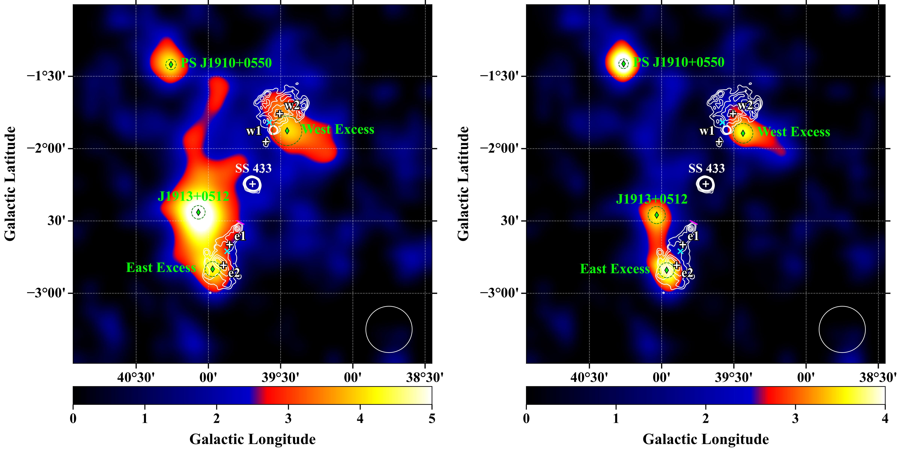
图注：Significance maps ($\sqrt{TS}$) of the emission around SS 433 in the 1–100 GeV (left) and 3–100 GeV (right) bands. The green dashed circles, centered on each source, indicate the 68\% positional uncertainties in the corresponding energy band. The white solid circle in the lower-right corner represents the 68\% containment angle of the Fermi-LAT point-spread function (PSF) at 10 GeV. The magenta short line marks the onset of hard X-ray emission observed by Nustar \(\citep{Saf22}.\) The cyan X‑marks indicate the positions where test sources are placed to derive the 95\% upper limits for Fermi‑LAT. The white crosses mark the position of X-ray bright regions in the west
w1'',w2'' and in the east e1'',e2''.对应解读：对应“建议重点查看的图表”第1项全区域TS/显著性图，以及“关键图表逐图导读”图1；也支撑模型拟合段落中关于源位置、PSF和成分混叠的讨论。
入选理由：这是确认四个GeV成分空间分布的核心图，直接显示1–100 GeV和3–100 GeV显著性图、位置不确定度、LAT PSF尺度以及东西两侧X射线亮区标记。它最能检验PS J1910+0550是否在W50外、East/West excess是否位于W50相关区域，以及低能PSF导致的视觉重合风险。
来源与置信度：\(arxiv_source\)；high；\(arxiv_source\) / \(Sun_et_al.tex\):figure[1]
Fig02
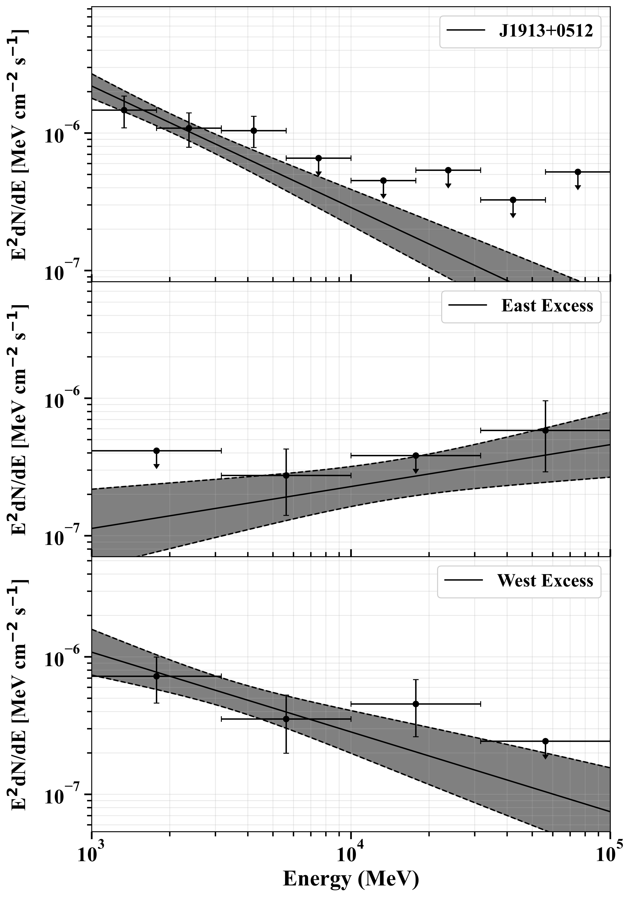
图注：Spectral energy distributions (SED) of the excess sources around SS 433. The vertical error bars represent the 68\% confidence intervals of the flux measurements, while the shaded regions around the best-fit curves indicate the 68\% confidence intervals. When the TS value of a flux point is less than 4.0, it is presented as a 95\% confidence upper limit.
对应解读：对应“建议重点查看的图表”第3项East/West excess的SED，以及“关键图表逐图导读”图3；也支撑详细解读中East硬谱、West软谱和J1913+0512相似性的关键结果。
入选理由：该图给出SS 433周围excess源的SED、68%误差和上限，是比较East excess硬谱、West excess软谱及各源能量分布差异的最直接证据。日报中关于IC解释、气体靶相互作用、低能点和上限对软谱拟合影响的讨论都依赖这张图。
来源与置信度：\(arxiv_source\)；high；\(arxiv_source\) / \(Sun_et_al.tex\):figure[2]
Fig04
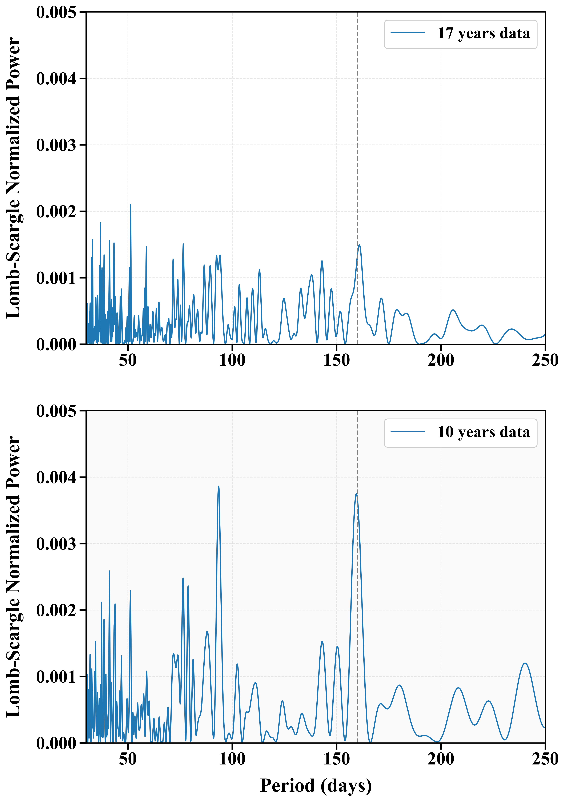
图注：The results of the Lomb–Scargle analysis for the 17-year (upper panel) and 10-year (lower panel) Fermi-LAT data. The vertical gray dashed line marks the 160-day periodic signal reported previously.
对应解读：对应“建议重点查看的图表”第4项J1913+0512周期功率谱，以及“关键图表逐图导读”图4；支撑关键结果中“不确认此前周期调制”的结论。
入选理由：该图直接展示17年和10年Fermi-LAT数据的Lomb–Scargle周期分析，并标出此前报道的160天周期位置。它是判断长期数据中周期峰是否仍显著、早期周期声称是否稳健的关键图。
来源与置信度：\(arxiv_source\)；high；\(arxiv_source\) / \(Sun_et_al.tex\):figure[4]
Fig05
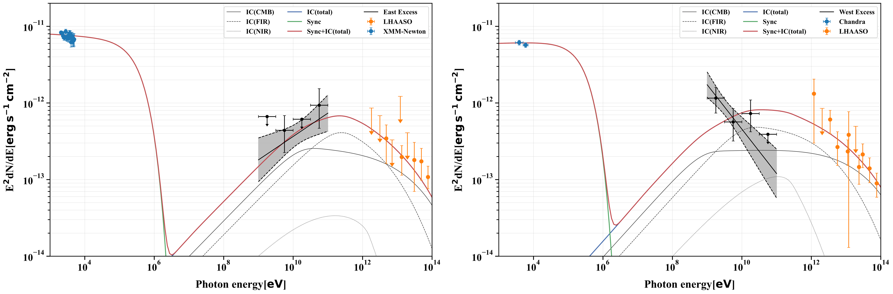
图注：Multiwavelength spectral fitting to the eastern (upper panel) and western (lower panel) lobes of SS 433.
对应解读：对应“建议重点查看的图表”第6项强子/轫致或多波段模型能量学图，以及“关键图表逐图导读”图6；支撑详细解读中East/West物理起源不同的解释。
入选理由：该图展示东西两侧瓣区的多波段谱拟合，是连接GeV谱形与X射线/TeV辐射机制的主要图表。它有助于判断East excess是否可由与X射线/TeV相关的高能电子IC解释，以及West侧是否需要不同的粒子分布或气体靶相互作用模型。
来源与置信度：\(arxiv_source\)；high；\(arxiv_source\) / \(Sun_et_al.tex\):figure[5]
Fig03
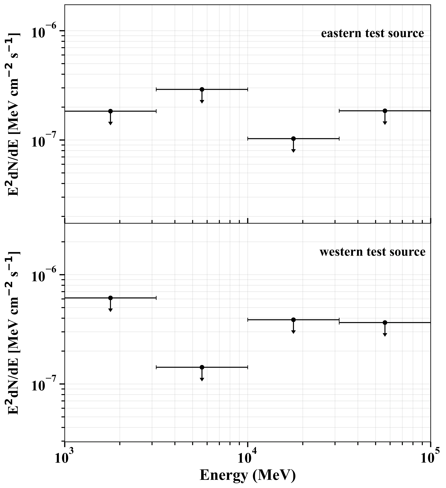
图注：The 95\% spectral upper limits calculated from the eastern (upper panel) and the western (lower panel) test sources. The locations of the test sources are indicated in Figure \(\ref{fig:1}.\)
对应解读：对应“建议重点查看的图表”第2项多波段/空间关系中的测试位置约束，以及第7项分区或分位置系统检验；也补充模型拟合段落中关于非检测位置和上限的稳健性讨论。
入选理由：该图给出东西两侧测试源位置的95%谱上限，虽不如显著性图和SED核心，但可用于检查在X射线亮区或候选位置没有强GeV信号时的约束，帮助评估West excess相对西侧X射线/TeV区域偏移是否具有物理意义。
来源与置信度：\(arxiv_source\)；high；\(arxiv_source\) / \(Sun_et_al.tex\):figure[3]
强相关工作
这篇工作与 SS 433/W50 的 TeV 伽马射线观测直接相关。HAWC 曾报告 SS 433 喷流终端附近的 TeV 辐射，支持大尺度电子加速；后续 H.E.S.S. 等高角分辨率观测进一步约束了 TeV 形态。本文的 East excess 与这些电子 IC 图像较一致，而 West excess 和 J1913+0512 的软 GeV 辐射则提示可能存在另一类与气体靶相关的成分。检索关键词可用“SS 433 W50 Fermi LAT GeV emission”、“SS 433 HAWC TeV lobes”、“SS 433 HESS gamma-ray morphology”。
在理论上，这项工作连接到微类星体和 X 射线双星作为银河宇宙线源的讨论。经典宇宙线源通常是超新星遗迹，但喷流驱动系统也能在终端激波、剪切层和外流-介质相互作用区加速粒子。若 SS 433 的 GeV 软源确为 pp 过程，它将成为微类星体质子加速的关键案例之一。检索关键词可用“microquasar cosmic ray proton acceleration”、“hadronic gamma rays microquasar jets”、“bremsstrahlung versus hadronic gamma-ray emission”。
相反观点或主要张力在于：GeV 源是否真的与 SS 433 相关，还是银河平面背景、未建模点源或分子云照明造成的巧合；West excess 与 J1913+0512 是否能在 LAT 角分辨率下稳健分离；以及电子轫致是否可在合理磁场和射电约束下替代 pp 模型。因此后续需要气体模板、多波段谱和独立弥散背景模型的联合检验。
相似工作：
- https://arxiv.org/abs/2605.14623
- https://arxiv.org/search/astro-ph?query=SS+433+Fermi-LAT+GeV&searchtype=all
- https://arxiv.org/search/astro-ph?query=SS+433+W50+TeV&searchtype=all
基础理论 / 方法工作：
- https://www.nature.com/articles/s41586-018-0565-5
- https://arxiv.org/search/astro-ph?query=microquasar+cosmic+ray+acceleration&searchtype=all
- https://arxiv.org/search/astro-ph?query=SS+433+W50+jets&searchtype=all
相反观点 / 张力线索：
- https://arxiv.org/search/astro-ph?query=SS+433+J1913%2B0512+periodic+modulation&searchtype=all
- https://arxiv.org/search/astro-ph?query=Fermi-LAT+Galactic+diffuse+background+systematics&searchtype=all
2. Self-confinement of ultra-high-energy nuclei in cosmic filaments: implications for the UHECR spectrum and composition
- 来源：arXiv / astro-ph.HE
- 链接：https://arxiv.org/abs/2605.14869v1
- 作者：Alessandro Cermenati, Roberto Aloisio, Carmelo Evoli
- 评分：novelty 8/10，importance 8/10，relevance 9/10，final 9.35/10
- 推荐理由：Directly addresses UHECR spectrum/composition with self-confinement of mixed nuclei in filaments and computes associated cosmogenic neutrino and gamma-ray constraints. Strong relevance to cosmic-ray and multimessenger high-energy astrophysics.
中文题目：宇宙丝状体中超高能核子的自约束：对 UHECR 能谱和成分的影响
做了什么：这篇文章把“宇宙线自己激发磁湍流、从而延迟自身逃逸”的自约束图像，从单一成分推广到混合核成分的超高能宇宙线源。作者用一个有效 leaky-box 模型描述源周围磁化环境或宇宙丝状体中的约束区，同时加入逃逸、光致裂变和次级粒子产生，再与 Pierre Auger 的能谱和质量组成观测比较。主要结论是：在星系团宿主源和宇宙大尺度丝状体可接受的源光度、磁场相干长度范围内，非共振流不稳定性产生的湍流可以压低 EV 刚度以下的逃逸通量，使注入谱看起来异常硬；重核在被约束期间发生有效光致裂变，产生的次级质子可补充踝部以下成分；伴随的宇宙成因中微子不超过当前限制，而弥散伽马背景可能强烈限制最极端参数。
为什么重要：Auger 数据长期暗示，踝部以上主导源若用简单均匀传播模型解释，往往需要非常硬的低刚度注入谱和较重的组成，这对常规加速理论不太自然。本文的重要性在于把这种“硬谱”从源注入性质转移到源周围输运效应：低刚度粒子被自激湍流困住，逃逸谱自然变硬。若成立，它会改变我们对 UHECR 源加速谱、源环境、质量组成演化和多信使副产物的解释。
理论 / 观测 / 仪器方法价值：理论上，论文把非共振流不稳定性自约束机制用于混合核成分，并显式考虑核光致裂变和次级产生，连接了源近区等离子体输运与到达地球的 UHECR 组成。观测上，它给出了与 Auger 能谱/组成、IceCube/GRAND 类中微子限制、Fermi-LAT 弥散伽马背景之间的可检验联系。方法上，leaky-box 近似提供了比全三维 MHD-粒子传播更便于扫参数的框架，可用于评估星系团、活动星系核环境或宇宙丝状体中 UHECR 逃逸的系统效应。
为什么应该关注：如果你关心 UHECR 的源类、加速机制或多信使约束，这篇文章值得看，因为它直接挑战了“硬注入谱就是源本身硬加速”的常见解读。它提醒我们，Auger 看到的谱形和组成不只是宇宙学传播的结果，也可能已经被源周围几十到几百 kpc 甚至 Mpc 尺度的磁化环境重塑。未来更好的组成测量、各向异性、弥散伽马背景和超高能中微子上限，都可以检验这种自约束解释。
展开详细解读：文章讲解、背景、理论、重点章节、图表与相关工作
文章详细讲解
科学问题：踝部以上 UHECR 的能谱和组成给出一个令人不太舒服的图像。许多全局拟合要求主导源在低刚度端释放非常硬的谱，甚至比常规 Fermi 加速预期的 \(E^{-2}\) 更硬得多，同时组成随能量变重。这种硬谱究竟是加速器本身的性质，还是粒子从源环境逃逸时被输运过程改写后的表观结果？本文关注后一种可能：UHECR 从星系团或宇宙丝状体这类磁化环境中逃逸时，其外流电流可以通过非共振流不稳定性激发磁湍流，湍流反过来降低扩散系数，使低刚度粒子被更久地困住，从而压低低刚度逃逸通量。
作者怎么做：论文将已有的自约束情景推广到混合核成分，而不是只讨论质子或单一核种。核心工具是一个有效 leaky-box 模型：把源周围的约束区看作一个有限体积盒子，盒内粒子不断注入、逃逸，并与背景光子场发生光致裂变，裂变产物继续作为次级核和次级质子参与演化。逃逸时间不是简单给定的刚度幂律，而与自激湍流相关；湍流由 UHECR 流驱动，尤其在 EV 刚度以下改变输运。随后作者把逃逸到星际/星系际空间的谱和组成接入常规宇宙传播，比较 Auger 的总能谱和组成指标，并计算宇宙成因中微子与伽马射线副产物。
关键结果：自激湍流可以在合理的源光度和磁场相干长度下显著抑制 EV 刚度以下的逃逸流，这使得源实际注入谱不必像传统拟合要求的那样极端硬。对重核而言，约束不是单纯延迟：更长驻留时间意味着更高光致裂变概率，因而逃逸成分会被重新加工。裂变产生的次级质子可以在踝部以下贡献通量，并帮助解释观测到的组成由轻到重或混合的过渡。多信使方面，中微子通量在作者考察的参数空间中仍与当前上限相容；但极端自约束、高光度或高相互作用效率的构型可能产生过多电磁级联辐射，从而受到弥散伽马背景限制。
局限和下一步：leaky-box 模型牺牲了几何和磁场结构细节，例如真实宇宙丝状体中的各向异性扩散、源的离散分布、时间变源活动、局域大尺度结构和视线方向差异。非共振流不稳定性的饱和、湍流级联和阻尼也可能引入系统误差。下一步需要把该机制嵌入更真实的 MHD 宇宙网环境和源群模型，并联合拟合能谱、\(X_{\max}\)、各向异性、伽马背景和中微子限制，检验参数空间是否仍足够宽。
背景知识
研究对象是超高能宇宙线，通常指能量超过 \(10^{18}\) eV 的带电粒子。它们在银河磁场中刚度很高，通常被认为来自河外源。观测上，UHECR 能谱在约 \(5\times10^{18}\) eV 附近出现“踝部”，在更高能端出现通量压低；质量组成则需要通过大气簇射最大深度 \(X_{\max}\) 及其涨落间接推断。Auger 的结果倾向于踝部以上组成逐渐变重，而 Telescope Array 等实验在最高能端的统计和系统误差仍使解释存在空间。
历史问题在于，若假设源以简单幂律注入、随后只经历河外传播中的能量损失和核相互作用，许多模型拟合会偏好很硬的注入谱和有限最大刚度。硬谱并非不可能，但对标准激波加速或许多随机加速模型而言不自然，因此研究者提出了多种替代解释：源内相互作用过滤、磁地平线效应、局域源分布、非均匀宇宙磁场、或者源周围环境中的逃逸选择效应。本文属于“逃逸选择效应”这一类，但强调湍流并非外加，而是由宇宙线流自身激发。
现在值得重新看这个问题有两个原因。第一，AugerPrime 和未来实验会改善质量组成和低能端过渡区信息，使源近区输运模型更容易被检验。第二，多信使限制越来越强：IceCube、Auger、ANITA、GRAND/RNO-G 等对超高能中微子敏感，Fermi-LAT 对弥散伽马背景给出积分约束。如果一个模型通过增强源周围相互作用来解释谱形，它必须同时不产生过多中微子和电磁级联。
常见误区是把观测到的逃逸谱直接等同于加速器注入谱。对带电粒子，尤其在强磁化源环境中，逃逸过程本身可以是能量和刚度选择性的。另一个误区是把重核只看作“更高电荷、同样传播”的粒子；事实上重核在光子背景中会裂变，质量数和电荷数随时间变化，导致刚度、能量损失和组成推断相互耦合。
基础理论 / 方法脉络
核心物理图像是流不稳定性和扩散逃逸的反馈。源释放 UHECR 后，粒子沿背景磁场或大尺度磁化结构形成净外流电流。当电流足够强时，会激发磁场扰动；扰动增长后提高散射率，降低扩散系数。低刚度粒子更容易被湍流散射，逃逸时间更长；高刚度粒子较快逃离。因此，即使源注入谱较软，真正离开约束区的谱也可能在低刚度端被削弱，表现为硬化。
关键量包括刚度 \(R=E/(Ze)\)、约束区尺度 \(L\)、背景磁场 \(B_0\)、磁场相干长度 \(l_c\)、扩散系数 \(D(R)\)、逃逸时间 \(t_{\rm esc}\sim L^2/D\)、源宇宙线光度 \(L_{\rm CR}\)、以及核种的光致裂变时间 \(t_{A\gamma}\)。因为磁散射主要按刚度组织，而核相互作用主要按每核子能量和光子场谱组织，混合成分模型天然有多重退化：改变最大刚度、源组成、光子场强度或逃逸时间，都可能产生相似的到达地球组成。
观测连接主要通过两类数据。第一类是 UHECR 总能谱和组成代理量，例如 \(\langle X_{\max}\rangle\) 与 \(\sigma(X_{\max})\)，它们把核质量分布映射到空气簇射发展。第二类是副产物：光致介子过程产生中微子和伽马射线，核裂变和 Bethe-Heitler 对产生引发电磁级联。模型若增加源近区驻留时间，通常也增加相互作用深度，因此必须同时检查中微子和弥散伽马背景。
仪器和数据分析层面的难点是，\(X_{\max}\) 到质量组成的反演依赖强子相互作用模型；弥散伽马背景还包含未分辨 blazar、星形成星系和银河前景的不确定性；中微子限制在最高能段统计很低。因而本文这类模型的判断不是单一曲线是否过点，而是要看能谱、组成和多信使上限能否在同一组物理参数下同时成立。
公式与推导
首先按刚度定义带电粒子的磁响应：
其中 \(p\) 是动量，\(E\) 是超相对论粒子能量，\(Z\) 是电荷数，\(e\) 是元电荷。磁约束和扩散主要依赖 \(R\)，而不是单独依赖 \(E\)，所以同一能量下重核因 \(Z\) 大而更容易被约束。
在 leaky-box 近似中，核种 \(i\) 的粒子数 \(N_i(E,t)\) 可写成连续性方程：
这里 \(Q_i\) 是源注入率，\(t_{\rm esc}\) 是逃逸时间，\(t_{\rm int}\) 包括光致裂变等相互作用时间，\(K_{j\to i}\) 是从母核 \(j\) 产生子核或核子的核反应核函数。
若约束区尺度为 \(L\)，扩散逃逸时间近似为：
\(D(R)\) 是扩散系数。自激湍流增强时，\(D\) 下降，\(t_{\rm esc}\) 上升；低刚度端的逃逸通量 \(N/t_{\rm esc}\) 因此可被压低。
非共振流不稳定性的量级条件可用宇宙线电流 \(J_{\rm CR}\) 与背景磁场 \(B_0\) 表示，最快增长波数满足近似关系：
其中 \(c\) 为光速。物理含义是：外流宇宙线电流越强、背景磁场越弱，越容易在较小尺度上驱动磁扰动。增长率和饱和幅度决定了最终散射强度。
逃逸到约束区外的源项可写为：
在稳态且暂时忽略相互作用时，\(N_i\approx Q_i t_{\rm esc}\)，于是 \(Q_i^{\rm esc}\approx Q_i\)；但当相互作用和能量/质量重分配不可忽略，或者 \(t_{\rm esc}\) 随刚度强烈变化并改变盒内谱形时，逃逸谱会显著偏离原始注入谱。
重核光致裂变的光学深度可写成：
若 \(\tau_{A\gamma}\ll1\)，重核基本完整逃逸；若 \(\tau_{A\gamma}\gtrsim1\)，约束期间会产生大量较轻碎片和次级质子。本文的关键就是 \(t_{\rm esc}\) 被自约束增大后，\(\tau_{A\gamma}\) 也随之增大，从而把输运效应和组成演化耦合起来。
模型拟合 / 应用方法
这类工作的拟合对象通常包括到达地球的全粒子能谱、质量组成代理量 \(\langle X_{\max}\rangle\) 和 \(\sigma(X_{\max})\)，以及多信使上限或测量值。模型参数可包括源注入谱指数、最大刚度 \(R_{\max}\)、各核种注入丰度、源演化、源光度、约束区尺度、磁场强度、磁场相干长度、背景光子场、以及控制自激湍流效率或饱和的参数。本文根据摘要采用有效 leaky-box 传播并与 Auger 数据比较，同时计算中微子和伽马射线副产物。
统计上，一个标准做法是构造联合似然：能谱部分用通量点及协方差，组成部分把模型的核质量分布通过空气簇射模型转换为 \(X_{\max}\) 分布，再与观测矩或分布比较；多信使部分通常作为单边约束加入似然或作为后验筛选条件。实际解读时要注意，不同强子相互作用模型会移动 \(X_{\max}\)-质量映射，源演化会强烈影响宇宙成因中微子，局域源分布会影响最高能端谱形和各向异性。
主要退化关系包括：硬注入谱与能量依赖逃逸可相互替代；较低最大刚度与较重注入组成都能导致最高能端变重；较长约束时间和较强光子场都能提高裂变效率；源近区伽马吸收和宇宙传播级联会影响弥散伽马约束。读残差时不应只看能谱是否贴合，还要看同一能量区间的组成是否同步合理，尤其是踝部附近次级质子是否过多、最高能端是否过轻，以及中微子/伽马是否逼近或超过上限。
重点章节 / 结果段落怎么读
-
引言和问题设定：重点看作者如何定义 Auger 数据中的“异常硬低刚度释放谱”问题，以及他们为何认为自约束能替代硬注入。这里应区分源注入谱、约束区逃逸谱和地球观测谱三个概念。
-
自约束物理模型：重点阅读非共振流不稳定性如何由 UHECR 外流驱动，以及湍流如何反馈到扩散系数和逃逸时间。应关注参数如源光度、磁场相干长度、约束区尺度和临界刚度的标度关系。
-
混合核成分 leaky-box 计算：这是本文相对以往工作的核心扩展。读者应检查模型如何处理多核种注入、光致裂变、次级核/质子产生和逃逸源项，尤其是核反应网络是否采用近似核函数或外部传播代码。
-
与 Auger 能谱和组成的比较：重点看模型是否同时匹配总能谱、\(\langle X_{\max}\rangle\) 和 \(X_{\max}\) 涨落，而不是只调好能谱。若文中给出不同参数组，应比较哪类参数需要更极端的源光度或磁场条件。
-
多信使预言和约束：重点看宇宙成因中微子与弥散伽马背景。中微子不过限并不自动说明模型安全，因为伽马级联可能对强相互作用或极端约束情景更敏感。
-
讨论和稳健性：应看作者如何评价 leaky-box 近似、真实丝状体磁场结构、源分布和湍流阻尼的不确定性。这些决定该机制是“可行解释”还是“需要精细条件”的解释。
建议重点查看的图表
-
逃逸时间或扩散系数随刚度变化图：检查 EV 以下是否出现明显自约束导致的逃逸时间增长，以及转折刚度如何随源光度和磁场相干长度变化。
-
盒内与逃逸谱对比图：看注入谱、约束区内谱和逃逸谱是否分开展示；关键是低刚度逃逸通量被压低而不是简单整体归一化变化。
-
核成分演化图：检查不同核种在约束区内和逃逸后的相对贡献，尤其是重核光致裂变产生的次级质子是否集中在踝部以下。
-
Auger 能谱拟合图：看模型曲线对总通量的拟合是否在踝部、通量压低区和最高能端都合理；注意能量尺度系统误差可能平移曲线。
-
\(X_{\max}\) 或平均对数质量图：检查模型是否同时再现组成变重趋势和涨落减小趋势；不要只看平均值，涨落对混合程度更敏感。
-
中微子通量与实验上限图：看峰值能量、不同参数模型之间的差异，以及是否接近 IceCube/Auger/GRAND 类限制。
-
弥散伽马背景或电磁级联图：检查极端参数是否超过 Fermi-LAT 的非银河背景或未解释背景预算；这是排除强相互作用模型的重要诊断。
-
参数空间允许区图：若文中有源光度—相干长度或磁场—尺度平面，重点看可行区是否与星系团/宇宙丝状体的观测估计重叠。
关键图表逐图导读
图 1：建议优先查看模型示意或关键时间尺度图。横轴通常应是刚度或能量，纵轴可能是逃逸时间、相互作用时间或扩散系数。数据点若无，模型线之间的相交位置就是物理转折：当 \(t_{\rm esc}\) 超过或接近 \(t_{A\gamma}\) 时，重核会被显著加工。读图陷阱是把刚度轴误读成能量轴；不同 \(Z\) 的核在同一刚度对应不同总能量。
图 2：若有注入谱与逃逸谱对比，横轴应为能量或刚度，纵轴为 \(E^3J(E)\)、逃逸率或归一化通量。模型线若显示 EV 以下逃逸谱被压低，说明硬化来自输运。注意区分“源注入”和“逃逸到宇宙空间”的曲线；只有后者才进入后续河外传播。
图 3：核成分分解图应显示质子、He、N/中等质量核、Si/Fe 等组分对总通量的贡献。重点看次级质子是否由重核裂变产生，并在踝部以下形成可见贡献。读图陷阱是把次级质子当作源直接注入质子；二者对中微子和伽马副产物的含义不同。
图 4：Auger 能谱比较图的横轴是能量，纵轴通常为通量乘以能量幂次以突出结构。模型线应同时经过踝部和最高能压低区。应检查残差是否在某一能段系统偏离；若踝部以下由次级质子补偿，模型在该区对源演化和传播假设会很敏感。
图 5：组成图可能给出 \(\langle X_{\max}\rangle\)、\(\sigma(X_{\max})\) 或 \(\langle\ln A\rangle\)。如果模型只匹配平均 \(X_{\max}\) 但不能匹配涨落，说明混合成分宽度可能有问题。不同空气簇射强子模型会造成系统平移，应看作者是否用多个 hadronic model 或误差带展示。
图 6：多信使图通常叠加中微子通量、伽马级联通量与实验限制。横轴是能量，纵轴是 \(E^2\Phi\) 或类似量。关键不是某条线是否低于所有上限，而是最能拟合 UHECR 的参数是否也不超出伽马背景预算。读图陷阱是忽略弥散伽马背景中可归因于已知源族的部分，真正留给 UHECR 级联的余量可能小于总背景。
论文原图 / 可嵌入图片
Fig03
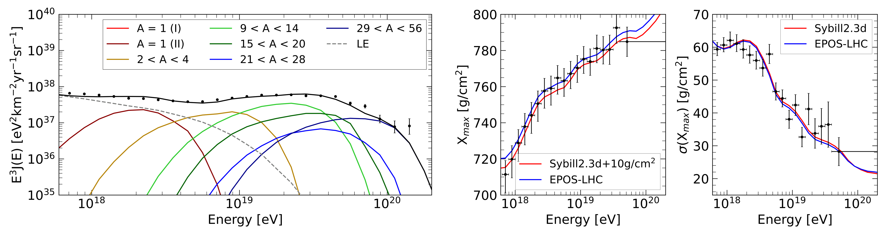
图注：\(\textit{Left}\): UHECR spectrum at Earth for $\lambda_B = 30$ Mpc. The spectra of the different mass groups are shown according to the assumed primary composition. The total contribution from the secondary low-energy (LE) population is indicated by the grey dashed line, while the total predicted spectrum is shown by the black solid line. Data points correspond to the all-particle UHECR spectrum measured by Auger~\(\citep{PierreAuger2020prdspectrum,PierreAuger2021epjcspectrum}.\) \(\textit{Right}\): Mean and variance of the shower-maximum distribution, derived using the EPOS-LHC and Sibyll parameterizations of~\(\citet{Evoli2026aph}.\) The predictions are compared with the Auger $X_{\rm max}$ measurements~\(\citep{PierreAuger2014prdmassa,PierreAuger2014prdmassb}.\)
对应解读：对应“Auger 能谱拟合图”“Xmax 或平均对数质量图”，以及关键图表导读中的图 3、图 4、图 5和模型拟合段落。
入选理由：这张图同时给出到达地球的 UHECR 全粒子能谱、不同质量组分分解、低能次级种群以及 Auger 能谱和 Xmax 矩的比较，是检验本文核心结论的最集中证据：自约束后的逃逸谱能否解释踝部、最高能端压低和组成演化。相比只展示源区物理或参数空间的图，它直接连接模型与观测数据。
来源与置信度：\(arxiv_source\)；high；\(arxiv_source\) / Main.tex:figure[3]
Fig01
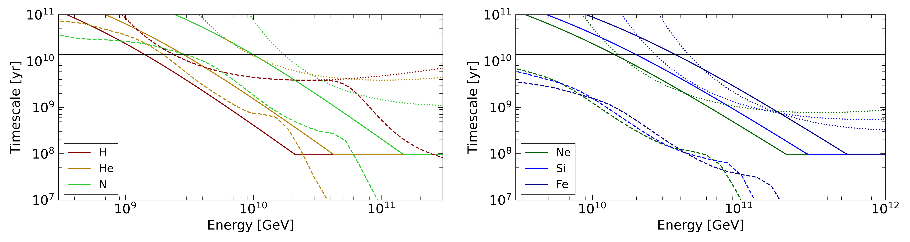
图注：Relevant timescales (computed at \(z=0\)) for representative light (left panel) and heavy (right panel) nuclei in the reference scenario. Solid lines show the escape time, including the lower bound set by the flux-tube crossing time, \(\lambda_B/c \sim 0.1\)~Gyr. Dashed lines indicate the relevant interaction timescales (\(\gamma N\) for nuclei and \(\gamma p\) for protons), while dotted lines show the timescale for Bethe--Heitler pair production. The black horizontal line marks the Hubble time, \(H_0^{-1}\).
对应解读：对应“逃逸时间或扩散系数随刚度变化图”和关键图表导读中的图 1。
入选理由：该图展示逃逸时间、光核相互作用时间、Bethe-Heitler 时间和 Hubble 时间的相对关系，是理解自约束是否能在 EV 以下延长驻留时间并促使重核被加工的基础诊断。日报特别强调的 \(t_esc\) 与相互作用时间交叉、轻核与重核差异都由此图直接支撑。
来源与置信度：\(arxiv_source\)；high；\(arxiv_source\) / Main.tex:figure[1]
Fig02
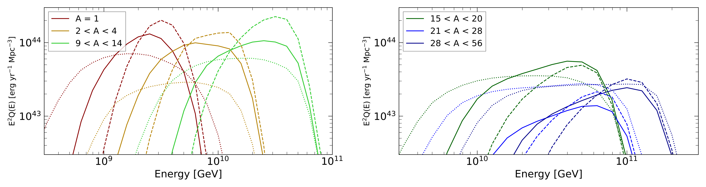
图注：Emissivity \(E^2Q(E)\), computed at $z=0$, of different mass groups in the presence of self-confinement, shown for three choices of the magnetic-field coherence length: \(\lambda_B = 15\) Mpc (dotted), \(\lambda_B = 30\) Mpc (solid), and \(\lambda_B = 50\) Mpc (dashed). For each mass interval, the plotted emissivity is the sum of the primary contribution and all secondary nuclei generated by the disintegration of heavier primaries and ending in the same mass group. Each contribution is weighted by the source number density and the luminosity fractions needed to reproduce the observed UHECR data, as reported in Table~\(\ref{tab::Parameters}.\)
对应解读：对应“盒内与逃逸谱对比图”“核成分演化图”，以及关键图表导读中的图 2、图 3。
入选理由：该图按质量组展示存在自约束时的 emissivity，并比较不同磁场相干长度 λB=15、30、50 Mpc，直接体现低刚度逃逸通量被输运压低以及重核裂变产生次级组分的影响。它比单纯最终观测拟合图更能说明硬化并非源注入本身造成。
来源与置信度：\(arxiv_source\)；high；\(arxiv_source\) / Main.tex:figure[2]
Fig06
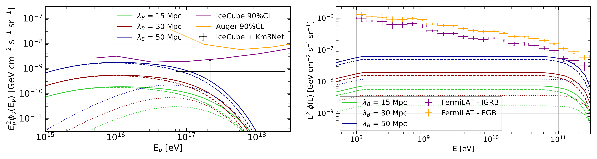
图注：\(\textit{Left}\): Diffuse neutrino fluxes associated with the benchmark UHECR spectra shown in Figs.~\(\ref{fig::spectrum15},\) \(\ref{fig::spectrum30},\) and \(\ref{fig::spectrum50}.\) The contribution produced inside the confinement region is shown with dashed lines, while the standard cosmogenic contribution from particles after escape is shown with dotted lines. The total flux is shown with solid lines. Model predictions are compared with the latest upper limits from IceCube~\(\citep{IceCube:2025ezc}\) and Auger~\(\citep{PierreAuger2024icrcphotons},\) as well as with the flux level inferred from the combined KM3NeT--IceCube analysis~\(\citep{KM3NET2025prx}.\) \(\textit{Right}\): Diffuse gamma-ray fluxes for the same benchmark models. The curves represent the cascade emission associated with the UHECR propagation, and are compared with the isotropic gamma-ray background measured by Fermi-LAT~\(\citep{FermiLat2015apj, FermiLat2016prl}.\)
对应解读：对应“中微子通量与实验上限图”“弥散伽马背景或电磁级联图”，以及关键图表导读中的图 6。
入选理由：该图同时给出三组基准模型的弥散中微子和伽马射线通量，并与 IceCube、Auger、KM3NeT-IceCube 和 Fermi-LAT 背景比较，是判断模型多信使可行性的关键。日报中特别指出伽马背景可能强约束极端构型，这一判断主要依赖该图。
来源与置信度：\(arxiv_source\)；high；\(arxiv_source\) / Main.tex:figure[6]
Fig07
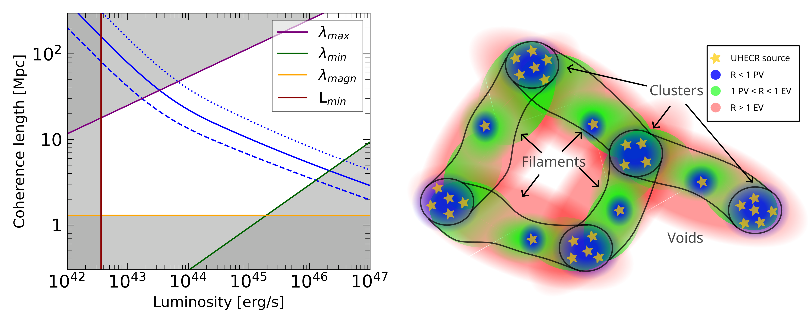
图注：{\(\it\) Left:} Parameter space in the \(\mathcal{L}\)--\(\lambda_B\) plane relevant for self-confinement in the inter-cluster medium. Shaded regions indicate the excluded parameter space. Blue curves denote the combinations of source luminosity and magnetic-field coherence length required to produce a suppression of the escaping flux at 500~PV (dashed), 1~EV (solid), and 2~EV (dotted). {\(\it\) Right:} Schematic representation of self-confinement: UHECR sources are concentrated in galaxy clusters and emit UHECRs that propagate in filaments. Low-rigidity particles (blue) are trapped close to galaxy clusters, while high-rigidity particles (green) produce the NRSI in filaments and only the highest rigidity particles (red) escape from filaments.
对应解读：对应“参数空间允许区图”和关键图表导读中关于源光度—磁场相干长度可行区的说明。
入选理由：左图给出源光度 L 与磁场相干长度 λB 平面中实现 500 PV、1 EV、2 EV 逃逸压低所需条件及排除区，右图给出自约束物理示意。它直接回答模型参数是否与星系团/宇宙丝状体环境相容，是从具体拟合推广到物理可实现性的关键图。
来源与置信度：\(arxiv_source\)；high；\(arxiv_source\) / Main.tex:figure[7]
Fig05
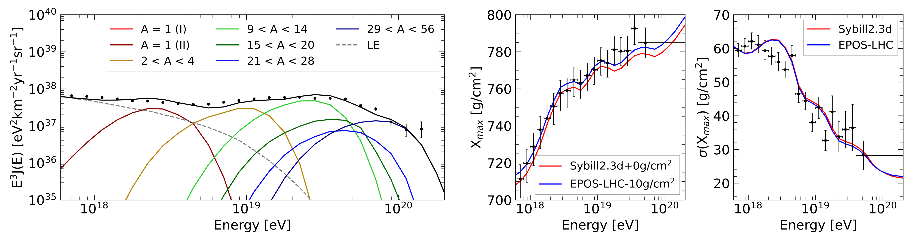
图注：UHECR spectrum and corresponding $X_{\rm max}$ moments at Earth, as in Fig.~\(\ref{fig::spectrum30},\) but for $\lambda_B = 50$ Mpc.
对应解读：对应“Auger 能谱拟合图”“Xmax 或平均对数质量图”中对不同 λB 基准模型差异的检查。
入选理由：该图是 λB=50 Mpc 的最终能谱与 Xmax 拟合结果，可作为 Fig03 的长相干长度极端情形对照，帮助判断更强自约束和更长驻留时间是否仍能同时满足能谱与组成。虽然信息结构与 Fig03 重复，但对理解参数依赖和极端模型表现有补充价值。
来源与置信度：\(arxiv_source\)；high；\(arxiv_source\) / Main.tex:figure[5]
强相关工作
这项工作与 Auger 近十年来关于踝部以上混合成分、硬注入谱和有限最大刚度的全局拟合直接相关。相似研究包括把 UHECR 源近区或宿主环境作为“过滤器”的模型，例如源内光核相互作用、星系团磁约束、磁地平线效应和非均匀河外磁场传播。检索关键词可用：UHECR hard injection spectrum, Auger composition fit, rigidity dependent escape, source environment photodisintegration, UHECR magnetic horizon。
基础理论方面，非共振混合模或 Bell instability 源于高能粒子电流驱动的磁场放大理论，最早常用于年轻超新星遗迹中的宇宙线加速问题。把它搬到 UHECR 源近区时，需要重新检查电流强度、背景等离子体、湍流饱和和阻尼是否满足条件。检索关键词可用：non-resonant streaming instability, Bell instability, cosmic ray self confinement, cosmic ray induced turbulence。
可能的张力或相反观点来自三方面。第一，若 Auger 组成系统误差或强子相互作用模型改变，硬谱需求可能变化；第二，若真实宇宙丝状体磁场较弱或相干长度不合适，自约束效率会下降；第三，强约束通常提高光核相互作用和电磁级联，可能受 Fermi-LAT 弥散伽马背景限制。检索关键词可用：cosmogenic neutrino limits, isotropic gamma-ray background UHECR, UHECR source evolution constraints。
相似工作：
- https://arxiv.org/abs/2605.14869
- https://ui.adsabs.harvard.edu/search/q=%22UHECR%22%20%22self-confinement%22%20%22streaming%20instability%22
- https://ui.adsabs.harvard.edu/search/q=%22UHECR%22%20%22source%20environment%22%20photodisintegration
- https://ui.adsabs.harvard.edu/search/q=%22UHECR%22%20%22magnetic%20horizon%22%20composition
基础理论 / 方法工作：
- https://ui.adsabs.harvard.edu/abs/2004MNRAS.353..550B/abstract
- https://ui.adsabs.harvard.edu/search/q=%22Pierre%20Auger%22%20%22UHECR%22%20spectrum%20composition%20%22Xmax%22
- https://ui.adsabs.harvard.edu/search/q=%22cosmogenic%20neutrinos%22%20%22ultra-high-energy%20cosmic%20rays%22
- https://ui.adsabs.harvard.edu/search/q=%22photodisintegration%22%20%22ultra-high-energy%20nuclei%22
相反观点 / 张力线索：
- https://ui.adsabs.harvard.edu/search/q=%22Fermi-LAT%22%20%22isotropic%20gamma-ray%20background%22%20%22UHECR%22
- https://ui.adsabs.harvard.edu/search/q=%22IceCube%22%20%22cosmogenic%20neutrino%22%20limits
- https://ui.adsabs.harvard.edu/search/q=%22Telescope%20Array%22%20%22Pierre%20Auger%22%20composition%20UHECR
- https://ui.adsabs.harvard.edu/search/q=%22UHECR%22%20%22hard%20injection%22%20%22Auger%22
3. Particle Acceleration, Coronal Neutrino Production, and the Diffuse Extragalactic Neutrino Background from Supermassive Black Holes
- 来源：arXiv / astro-ph.HE
- 链接：https://arxiv.org/abs/2605.13968v1
- 作者：Rostom Mbarek
- 评分：novelty 7/10，importance 8/10，relevance 9/10，final 9.05/10
- 推荐理由：High-energy neutrino astrophysics with explicit SMBH-corona particle acceleration, Seyfert luminosity function, and IceCube diffuse sub-PeV flux implications. Strong source/multimessenger relevance, though more theoretical than observational.
中文题目：超大质量黑洞 X 射线冕中的粒子加速、日冕中微子产生与弥散河外中微子背景
做了什么：这篇论文讨论 Seyfert 类活动星系核中，超大质量黑洞附近的 X 射线冕是否能把质子加速到足够高的能量，并通过强辐射场中的强子相互作用产生 IceCube 看到的亚 PeV 弥散河外中微子背景。作者建立了一个更一般的中微子光度函数，把冕区 X 射线光度、磁化程度和非热质子分布联系起来，而不是简单假设一个固定的宇宙线注入效率。核心结论是：在受等离子体动理学模拟启发的加速框架下，Seyfert 类黑洞冕的宇宙学积分贡献可以解释 IceCube 的亚 PeV 弥散中微子通量；中微子光度主要由冕 X 射线光度和磁化参数控制，对黑洞质量依赖较弱。论文还指出，黑洞附近磁场拓扑可能自然支持宇宙线驱动外流，这会在 PeV 能段带来额外中微子产生，并影响星系核最内区动力学。
为什么重要：IceCube 已经测到稳定的天体物理中微子背景，但其主要源族仍未完全确定。AGN 冕模型的吸引力在于：它们数量多、辐射场密、可隐藏高能伽马射线，因此能产生中微子而不明显违反伽马射线背景约束。这篇文章的重要性在于把“黑洞冕能不能加速强子”这个关键不确定性从经验参数推进到更物理化的加速模型，并给出可与 AGN X 射线光度函数和 IceCube 通量直接连接的中微子光度函数。
理论 / 观测 / 仪器方法价值：对理论而言，它提供了从冕区等离子体条件到非热质子谱再到中微子光度的自洽链条，减少了任意设定宇宙线效率的自由度。对观测而言，它把可观测的 X 射线光度函数和中微子背景联系起来，给未来 IceCube-Gen2、KM3NeT、以及高能 X 射线巡天提供了源族检验方向。对方法而言，它强调磁化、加速时间、冷却时间、约束逃逸和外流拓扑在中微子光度函数中的作用，而不是只用黑洞质量或总吸积率作粗略标度。
为什么应该关注：如果你关心 IceCube 中微子的来源，这篇文章给出一个具体且可检验的候选：普通 Seyfert 类 AGN 的黑洞冕，而不只是少数耀变体或瞬变源。如果你研究 AGN 冕、吸积盘-冕耦合或黑洞近区磁场，它说明非热强子可能不只是附加成分，而会参与能量输运和外流动力学。如果你做多信使天文学，它提供了把 X 射线 AGN 统计、GeV–TeV 伽马射线约束和 TeV–PeV 中微子谱统一比较的模型框架。
展开详细解读：文章讲解、背景、理论、重点章节、图表与相关工作
文章详细讲解
科学问题：IceCube 的弥散河外中微子通量在 TeV–PeV 能段已经相当稳健，但源族分解仍有很大不确定性。耀变体很亮，却受到源数统计和伽马射线背景的限制；星暴星系能贡献一部分，但很难自然解释全部谱形。Seyfert 类 AGN 的 X 射线冕位于超大质量黑洞附近，辐射密度高、磁场可能很强，是高能质子与光子相互作用的理想“隐藏源”。关键问题不是有没有靶光子，而是冕区是否能以足够效率加速质子，并在逃逸前产生足够多的中微子。
作者怎么做：论文构造了一个广义中微子光度函数，用 Seyfert 类星系的冕 X 射线光度、磁化程度和非热质子分布来决定单源中微子输出，再与宇宙学 AGN 光度函数积分得到弥散背景。与把宇宙线功率简单设为 X 射线光度固定比例的做法不同，作者采用受等离子体动理学模拟启发的加速框架，将磁化参数、加速效率、最大能量、冷却和约束条件纳入同一物理图像。这样，中微子光度不再是任意归一化，而是来自冕区等离子体状态和粒子加速过程。
关键结果：在这一框架下，单个 AGN 冕的中微子光度主要随 X 射线光度和磁化程度变化，对黑洞质量的直接依赖较弱。这意味着弥散背景的主要不确定性来自 AGN X 射线光度函数、冕磁化分布和加速物理，而不是单纯来自黑洞质量函数。作者发现，这类源的宇宙学积分发射可以解释 IceCube 观测到的亚 PeV 弥散河外中微子通量。论文还进一步讨论了黑洞附近磁场拓扑：即使扩散约束可以较好描述局部滞留，开放或重联相关的磁场结构仍可能驱动宇宙线外流，在 PeV 能段产生额外中微子并影响核区能量反馈。
局限和下一步：摘要没有声称模型已经唯一解释 IceCube 数据，核心不确定性仍包括冕磁化分布、非热质子注入谱、X 射线光度函数的红移演化、源内 γγ 吸收与级联处理、以及外流几何。下一步最有价值的检验包括：用具体的附近 Seyfert 源如 NGC 1068、Circinus、NGC 4151 做个体预测；比较模型是否同时满足 IceCube 点源上限、Fermi 弥散伽马背景和硬 X 射线 AGN 统计；以及用更高分辨率的 GRMHD-kinetic 混合模拟约束冕区磁化和非热粒子比例。
背景知识
研究对象是 Seyfert 类活动星系核的 X 射线冕。标准图像中，吸积盘释放引力能并产生光学/紫外辐射，盘上方或黑洞近旁的热电子冕通过 Compton 化产生 keV–百 keV X 射线。传统 X 射线谱建模主要关注电子温度、光学深度、反射谱和截断能量；而这篇文章关心的是冕中是否还存在非热质子，以及它们是否能通过 pγ 或 pp 过程产生高能中微子。
历史问题在于，IceCube 的天体物理中微子背景被发现后，许多候选源族都被提出：耀变体、伽马暴、星暴星系、潮汐瓦解事件、AGN 核区等。耀变体方向关联和叠加分析表明它们不能解释全部弥散通量；伽马暴的常规模型也受到严格限制。AGN 核区模型重新受到重视，是因为核区辐射场和气体密度足以让中微子源“隐藏”：高能 γ 射线容易在源内被吸收并级联到低能，因此中微子亮而伽马射线不必同样亮。
为什么现在值得重新看：一方面，IceCube 对 NGC 1068 等附近非耀变 AGN 的中微子关联结果增强了人们对 Seyfert 核区模型的兴趣；另一方面，等离子体动理学模拟、磁重联和湍流加速研究正在给出更具体的非热粒子效率与谱指数预测。也就是说，现在可以不再把“宇宙线效率”当作完全自由参数，而是尝试从磁化、等离子体 β、湍流和重联条件推导。
常见误区之一是把 AGN 中微子模型等同于耀变体喷流模型。Seyfert 冕模型的发射区更紧凑、更辐射致密、更不依赖相对论 beaming，因此源数统计和多信使约束完全不同。另一个误区是认为黑洞越大中微子一定越亮；这篇文章强调，在给定 X 射线光度和冕磁化条件下，黑洞质量可能只是通过尺度、辐射密度和光度函数间接影响结果，主控量并非质量本身。
基础理论 / 方法脉络
核心物理图像是：黑洞附近的磁化冕区把一部分磁能或湍流能注入非热质子。质子在磁重联、湍流或随机加速中获得幂律能谱；同时它们在强 X 射线/紫外光子场中发生光介子产生，典型链条是 \(p+\gamma\rightarrow \Delta^+\rightarrow n+\pi^+\) 或 \(p+\pi^0\)。带电 pion 衰变产生 \(\nu_\mu,\bar\nu_\mu,\nu_e\)，经过长距离振荡后到达地球时近似为三味均分。
关键量包括冕 X 射线光度 \(L_X\)、冕尺度 \(R_c\)、磁场 \(B\)、磁化参数 \(\sigma\)、质子注入功率 \(L_p\)、加速时间 \(t_{\rm acc}\)、逃逸时间 \(t_{\rm esc}\)、pγ 冷却时间 \(t_{p\gamma}\) 和最大质子能量 \(E_{p,\max}\)。磁化参数越高，磁能密度相对于粒子能量密度越大，通常有利于非热加速和更硬的粒子谱，但过强磁场也可能增强同步辐射冷却或改变逃逸行为。
观测连接主要通过光度函数完成。单源的中微子光度 \(L_\nu(L_X,z,\sigma)\) 与 AGN X 射线光度函数 \(\Phi_X(L_X,z)\) 相乘并对光度和红移积分，得到地球上弥散强度 \(I_\nu(E_\nu)\)。这个过程中的主要退化包括：质子注入效率与 pγ 光学深度退化、冕半径与光子密度退化、磁化与最大能量退化、以及源内 γγ 吸收与外部伽马背景约束之间的退化。
数据分析逻辑上，最重要的不是单个源能否产生某个能量的中微子，而是整个源族的积分谱是否同时满足三个条件：归一化接近 IceCube 弥散通量；谱形在几十 TeV 到亚 PeV 不过硬或过软；伴随电磁级联不超过 X 射线和 γ 射线背景。若模型还预言少数近邻 Seyfert 源可被 IceCube 或 KM3NeT 作为点源看到，那就能形成更强的可证伪性。
公式与推导
可以从冕区磁能密度写起。若冕尺度为 \(R_c\)，磁场为 \(B\)，磁能密度为
其中 \(B\) 是冕区磁场强度，\(u_B\) 控制可供磁重联或湍流转化为非热粒子的能量库。磁化参数常可写成
其中 \(w\) 是等离子体焓密度。\(\sigma\) 越大，磁场相对于物质惯性越重要，非热加速效率和谱形通常会发生系统变化。
非热质子注入可近似写为幂律
其中 \(Q_p\) 是单位能量单位时间注入率，\(s\) 是谱指数，\(E_{p,\max}\) 是最大质子能量，\(Q_0\) 由总质子功率 \(L_p=\int E_p Q_p(E_p)dE_p\) 归一化。论文的关键思想是让 \(L_p\)、\(s\) 和 \(E_{p,\max}\) 与冕磁化和 X 射线光度相关，而非完全自由。
最大能量通常由加速与损失/逃逸平衡决定。若加速时间写成
其中 \(e\) 是元电荷，\(c\) 是光速，\(\eta_{\rm acc}\ge 1\) 表示加速效率参数，则 \(E_{p,\max}\) 由 \(t_{\rm acc}=\min(t_{p\gamma},t_{\rm esc},t_{\rm dyn},\cdots)\) 给出。这里 \(t_{\rm dyn}\sim R_c/c\)，\(t_{\rm esc}\) 描述粒子离开冕区的时间。
pγ 相互作用效率可粗略写为
其中 \(t_{p\gamma}^{-1}\) 由靶光子数密度、光介子截面和非弹性系数决定。X 射线光度越高、冕越紧凑，光子数密度越大，\(t_{p\gamma}\) 越短，中微子产生越有效。
单源中微子光度可用近似关系连接到质子功率：
因子 \(3/8\) 表示带电 pion 分支和衰变能量在三味中微子中的分配，\(E_\nu\simeq 0.05E_p\) 是光介子过程的常用能量标度。精确计算会积分相互作用核和光子谱。
最后，弥散强度由光度函数积分得到：
其中 \(E_\nu'=(1+z)E_\nu\) 是源系能量，\(H(z)\) 是哈勃参数，\(\Phi_X\) 是 X 射线光度函数。这个公式把单源物理与 IceCube 可观测的全天弥散通量直接相连。
模型拟合 / 应用方法
这类工作的拟合对象通常是 IceCube 给出的弥散中微子强度 \(\Phi_\nu(E)\)、谱指数和能段归一化，有时还包括点源上限、NGC 1068 类源的个体通量、以及 Fermi-LAT 各向同性伽马背景约束。模型参数可分为三组：源族统计参数，如 X 射线光度函数及红移演化；冕物理参数，如 \(R_c/R_g\)、\(B\)、\(\sigma\)、光子谱和光学深度；粒子加速参数，如非热质子效率、谱指数、最大能量和逃逸模型。
似然函数可以写成中微子能谱数据点与模型预测的比较，通常采用高斯近似或 Poisson 事件级似然。若使用发表的 unfolded flux，残差应关注能量相关结构：模型是否在 10–100 TeV 过量、在 PeV 附近不足、或产生过硬尾部。若使用事件级数据，则还要处理有效面积、角分辨率、天顶角分布、大气中微子背景和 muon 背景。
主要退化关系包括：提高质子注入效率与提高 pγ 效率都能增加中微子归一化；缩小冕半径和提高 X 射线光度都能提高靶光子密度；更高磁化既可提高加速效率，也可能改变谱指数和逃逸。黑洞质量通常通过 \(R_g=GM/c^2\)、Eddington 比和光度函数间接进入，因此在固定 \(L_X\) 和冕尺度比例时，质量依赖可能被削弱。
系统误差方面，AGN X 射线光度函数在低光度端、高红移端和 Compton-thick 源修正上会影响总积分；冕谱形、X 射线截断能量和紫外盘光子场会影响 pγ 阈值与谱峰；源内 γγ 吸收和电磁级联决定是否违反伽马背景。实际应用时，应该同时画出中微子谱、伴随伽马/电磁级联谱、不同 \(L_X\) 和红移贡献的分解，以及参数后验中的协方差。
重点章节 / 结果段落怎么读
-
引言与问题设定：重点看作者如何定位 Seyfert 冕相对于耀变体、星暴星系和瞬变源的优势。读者应注意他们要解决的不是“AGN 是否存在”，而是“冕区强子加速效率和中微子光度函数能否物理化”。
-
冕区粒子加速框架：这是论文的核心方法段。应关注磁化参数、加速时间、逃逸时间、非热质子谱和最大能量如何定义，以及哪些关系来自等离子体动理学模拟的启发，哪些仍是参数化假设。
-
中微子产生与单源光度：这一部分应检查 pγ 相互作用的靶光子场如何建模，是否包含 pp、Bethe-Heitler、同步辐射和级联损失，以及中微子光度对 \(L_X\)、\(\sigma\)、黑洞质量和冕半径的标度关系。
-
光度函数与宇宙学积分：读者应看作者采用哪一种 X 射线 AGN 光度函数、如何处理红移演化、低光度/高光度端截断和 obscured/Compton-thick 源修正。弥散通量是否由大量普通源贡献，还是由少数高光度源主导，是判断模型稳健性的关键。
-
与 IceCube 数据和多信使约束比较：这一段要看谱形、归一化和置信区间，而不只是“能解释 IceCube”这句话。尤其要检查是否同时满足点源限制和伽马射线背景限制。
-
外流与黑洞近区反馈讨论：这部分更偏物理解释和展望。应关注作者如何从磁场拓扑推断宇宙线驱动外流，以及这种外流会不会改变 PeV 中微子产生、冕能量收支和星系核反馈。
建议重点查看的图表
-
单源中微子光度随 X 射线光度的关系图：看 \(L_\nu-L_X\) 是否近似线性、超线性或存在饱和，以及不同磁化参数曲线的分离程度。
-
中微子光度对黑洞质量的依赖图：重点检查在固定 \(L_X\) 或固定 Eddington 比时趋势是否不同，以判断“质量依赖弱”是物理结论还是参数选择结果。
-
加速、冷却和逃逸时间尺度图：横轴通常是质子能量，纵轴是时间。应看 \(t_{\rm acc}\) 与 \(t_{p\gamma}\)、\(t_{\rm esc}\)、\(t_{\rm dyn}\) 的交点，这决定最大能量和中微子谱截止。
-
单源中微子谱和伴随电磁级联谱：看谱峰位置是否落在 IceCube 敏感能段，伴随 γ 射线是否被源内吸收，是否仍可能超过 Fermi 背景。
-
弥散中微子背景拟合图：应比较模型总谱与 IceCube 数据点/置信带，尤其关注 30 TeV–1 PeV 的斜率和归一化。
-
光度和红移贡献分解图：看总通量主要来自低红移 Seyfert、较高红移高光度 AGN，还是被某个光度段支配；这决定点源可探测性和宇宙演化不确定性。
-
参数敏感性或不确定性带：重点检查磁化、质子效率、冕半径、光度函数选择对最终通量的影响是否超过 IceCube 误差条。
-
外流/拓扑示意或 PeV 额外分量图：如果论文给出外流导致的额外中微子分量，应看它是否只改善 PeV 端，还是会破坏亚 PeV 拟合。
关键图表逐图导读
图 1：通常应是模型框架或源族输入图。若横轴为 X 射线光度、纵轴为 AGN 数密度或光度函数，读者要看不同红移曲线的峰值如何移动。陷阱是不要只看高光度端；弥散背景常由数量庞大的中等光度 Seyfert 累积贡献。
图 2：若展示粒子加速与冷却时间尺度，横轴多为质子能量，纵轴为时间。模型线可能包括 \(t_{\rm acc}\)、\(t_{p\gamma}\)、\(t_{\rm esc}\)、\(t_{\rm dyn}\)。交点决定 \(E_{p,\max}\)，进而决定中微子截止能量。读图陷阱是把最短时间线误解为唯一控制因素；真正限制来自加速时间与所有损失/逃逸时间的最小值比较。
图 3：若为单源中微子谱，横轴为中微子能量，纵轴为 \(E_\nu^2L_{E_\nu}\) 或通量。不同颜色可能表示不同 \(L_X\)、磁化参数或黑洞质量。要看谱峰是否随 X 射线光度或磁化移动，以及归一化变化是否远大于质量变化。陷阱是忽略能量轴上的红移修正和味比例定义。
图 4：若为 \(L_\nu-L_X\) 或参数标度图，坐标通常是对数坐标。重点看斜率、散布和不确定性带：如果磁化导致的散布很大，那么用 X 射线光度直接预测中微子亮度会有明显系统误差。不要把拟合线的窄带误认为观测上已经验证的相关性。
图 5：若为弥散背景比较图，横轴为 \(E_\nu\)，纵轴为 \(E_\nu^2\Phi_\nu\)，数据点/阴影为 IceCube 弥散通量，模型线为 Seyfert 冕积分。应看模型是否同时通过低能端和亚 PeV 端，而不只是某一个能量点。读图陷阱是忽略大气背景主导区和 IceCube 不同分析给出的谱指数差异。
图 6：若为多信使约束图，横轴为光子或中微子能量，纵轴为强度。应比较伴随 γ 射线级联与 Fermi 各向同性背景、X 射线背景的关系。若模型声称是隐藏源，图上应体现源内吸收或级联重分布，否则容易与伽马背景冲突。
图 7：若为红移/光度贡献分解或累积分数图，坐标可能是 \(z\)、\(L_X\) 与贡献比例。关键是判断预测是否依赖难观测的高红移或 Compton-thick AGN 群体。若大部分贡献来自近邻宇宙，则点源和各向异性约束会更强；若来自高红移，则光度函数系统误差更大。
论文原图 / 可嵌入图片
Fig02
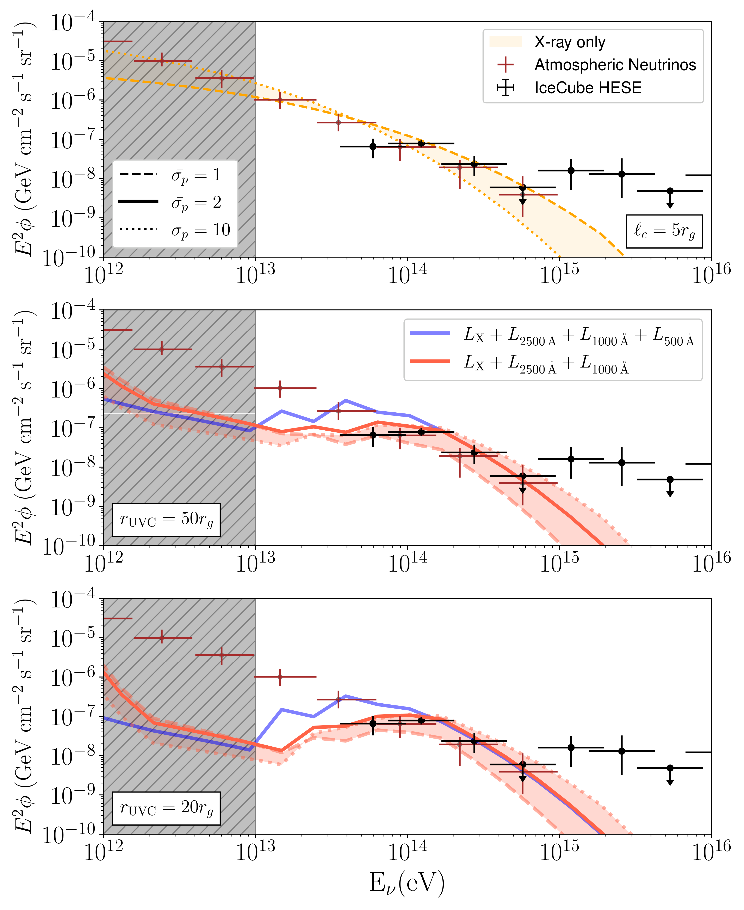
图注：Expected neutrino flux based on Eq.~\(\eqref{eq:Numain},\) shown for various photon field components near the black hole. Different average proton magnetizations, $\bar{\sigma}_p$, are considered, with a fixed magnetic coherence length $\lc = 5r_g$. Flux values in the dashed region ($E_\nu \leq 10^{13}$eV) reflect an upper bound due to greater uncertainty in the proton distribution at low energies (see \(\S\ref{sec\):p-density} and \(\S\ref{sec\):diffNu}). The results are compared with IceCube’s atmospheric background \(\citep{ICECUBE15}\) and extragalactic diffuse HESE flux \(\citep{ICECUBE20}.\)
对应解读：对应“建议重点查看的图表”第5项弥散中微子背景拟合图，以及“关键图表逐图导读”图5和模型拟合段落中 IceCube 弥散通量比较。
入选理由：该图直接给出模型预期中微子通量，并与 IceCube 大气背景和河外弥散 HESE 通量比较，是判断论文核心结论——Seyfert/SMBH 冕积分发射能否解释亚 PeV IceCube 弥散背景——的最关键证据。图中还区分不同光子场成分和平均质子磁化参数，能体现参数敏感性及低能端不确定区域。
来源与置信度：\(arxiv_source\)；high；\(arxiv_source\) / MAIN.tex:figure[2]
Fig01
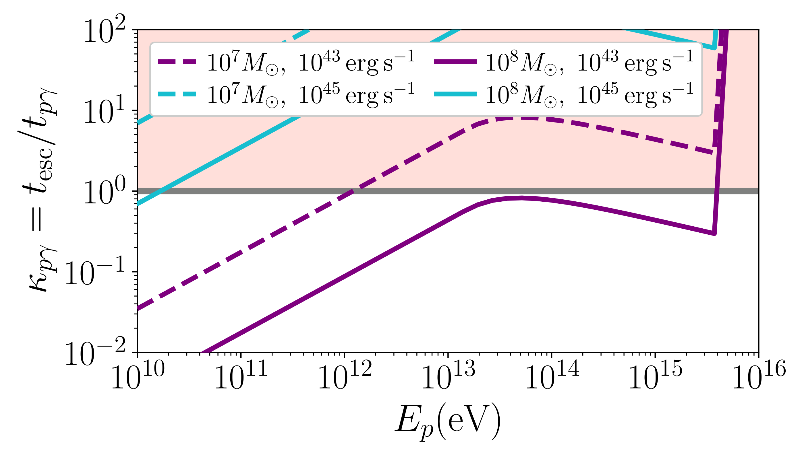
图注：The ratio of escape time $t_{\rm esc} =t_{\rm diff}$ to cooling time $t_{p\gamma}$ as a function of the proton energy $E_p$, based on examples of SMBH masses and X-ray luminosities. The production efficiency is limited by $\kappa_{p\gamma} \leq 1$ as in Eq.~\(\eqref{eq:Lnu1}\) to conserve energy. More X-ray luminous AGN are likely to have $\kappa_{p\gamma} = 1$, mostly eliminating the impact of $M_\bullet$ on $L_\nu$.
对应解读：对应“建议重点查看的图表”第1项单源中微子光度随 X 射线光度关系、第2项黑洞质量依赖，以及第3项逃逸/冷却条件；也支撑关键结果中“高 X 射线光度源 κpγ 接近 1、质量依赖减弱”的论断。
入选理由：虽然不是直接的 Lν-LX 曲线，但该图展示逃逸时间与 pγ 冷却时间之比随质子能量、SMBH 质量和 X 射线光度的变化，直接决定 pγ 产额和能量守恒上限。caption 明确指出高 X 射线光度 AGN 更容易达到 κpγ=1，从而削弱 Mbullet 对 Lν 的影响，因此非常适合解释论文中单源标度关系和质量依赖弱的物理原因。
来源与置信度：\(arxiv_source\)；high；\(arxiv_source\) / MAIN.tex:figure[1]
Fig03
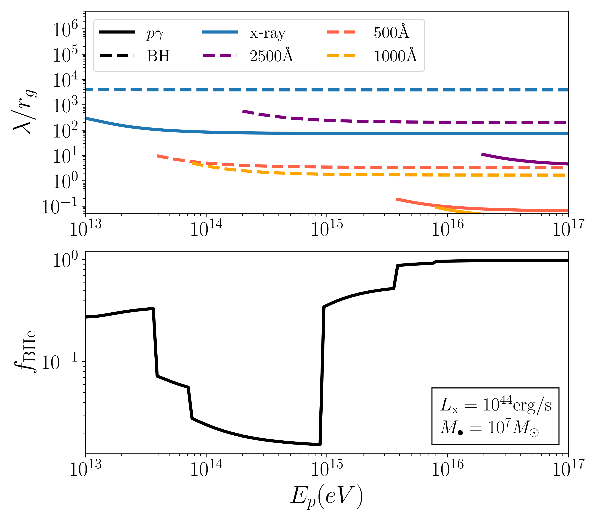
图注：Upper Panel: Cooling time for photomeson ($p\gamma$) and Bethe-Heitler (BHe) for an example galaxy with $\lx = 10^{44} \ergs$ and $M_\bullet = 10^7 M_{\odot}$ for the dominant photon field components considered in this study. Lower Panel: fraction of protons available for $p\gamma$ interactions due to BHe suppression for the considered photon fields in the upper panel. A significant suppression is expected for protons with energies ranging from 10 TeV to a few PeV.
对应解读：对应“建议重点查看的图表”第3项加速/冷却/逃逸时间尺度图和第4项单源谱截止物理；也对应模型拟合段落中 pγ 阈值、Bethe-Heitler 损失和谱峰/截止的系统误差。
入选理由：该图给出 pγ 与 Bethe-Heitler 冷却时间，并展示 Bethe-Heitler 抑制导致可参与 pγ 相互作用的质子比例变化。它能解释为什么某些质子能段的中微子产生效率下降，以及单源谱形和弥散谱在 TeV–PeV 区间的物理来源，是理解模型内部能量损失竞争的重要诊断图。
来源与置信度：\(arxiv_source\)；high；\(arxiv_source\) / MAIN.tex:figure[3]
Fig04
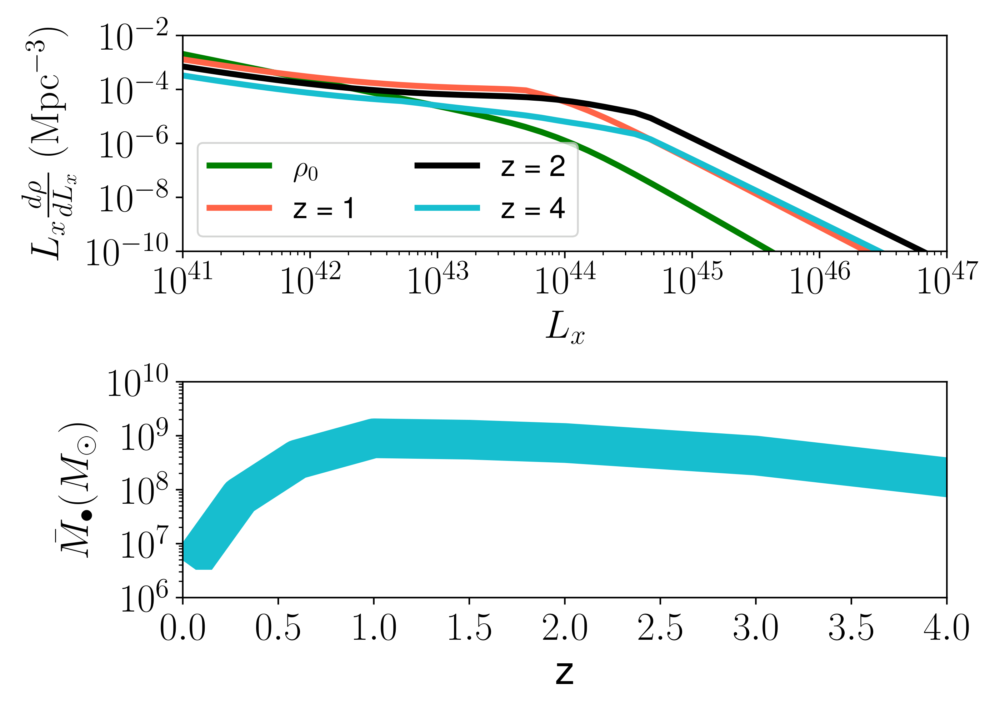
图注：Upper Panel: X-ray luminosity function of active galactic nuclei used in this work \(\citep\)[See Eqn~14-19 in][]{ueda+14}. Lower Panel: Redshift-dependent distribution of most likely masses of active SMBH extracted from the BASS survey and the mass functions of distant actively accreting SMBH.
对应解读：对应“建议重点查看的图表”第6项光度和红移贡献分解，以及“关键图表逐图导读”图1中源族输入图；也关联模型拟合段落的 X 射线光度函数、红移演化和 SMBH 质量分布系统误差。
入选理由：该图展示论文采用的 AGN X 射线光度函数以及红移相关的活跃 SMBH 质量分布，是从单源中微子输出积分到宇宙弥散背景的基础输入。虽然它不是最终通量分解图，但能帮助读者判断总背景预测对 AGN 光度函数、红移演化和质量分布假设的依赖。
来源与置信度：\(arxiv_source\)；high；\(arxiv_source\) / MAIN.tex:figure[4]
强相关工作
这篇工作与 AGN 核区中微子模型一脉相承，特别是把 Seyfert 冕视为“隐藏中微子源”的思路。相关工作通常讨论 NGC 1068、Circinus、NGC 4151 等附近非耀变 AGN 是否能产生 IceCube 可见信号，并比较 pγ、pp、磁重联加速和湍流加速情形。建议检索关键词包括：AGN corona neutrino、Seyfert neutrino emission、NGC 1068 IceCube、hidden cosmic-ray accelerators、p gamma interactions in AGN cores。
它也与耀变体和星暴星系解释弥散中微子背景的方案形成互补和竞争。耀变体有强喷流和高能 γ 射线，但叠加分析限制其对总弥散通量的贡献；星暴星系有较自然的 pp 中微子产生，但谱形和最高能端可能有压力。Seyfert 冕模型的优势是高靶光子密度和强 γγ 吸收，弱点是冕区强子加速效率、磁场拓扑和非热质子含量仍难直接观测。
从理论基础看，这篇文章与磁重联、湍流加速和等离子体动理学模拟的进展有关。过去许多半解析中微子模型把质子效率和谱指数当自由参数；现在的趋势是用 PIC 模拟或 GRMHD 模拟给出磁化依赖的非热粒子分布，再嵌入辐射转移和宇宙学源族积分。检索关键词可包括：particle acceleration in magnetized coronae、PIC reconnection nonthermal protons、black hole corona cosmic rays、AGN X-ray luminosity function neutrinos。
相似工作：
- https://arxiv.org/abs/2605.13968
- https://arxiv.org/abs/2211.09972
- https://arxiv.org/abs/1904.04226
基础理论 / 方法工作：
- https://arxiv.org/abs/1304.5356
- https://arxiv.org/abs/1311.5238
- https://arxiv.org/abs/1807.08794
相反观点 / 张力线索：
- https://arxiv.org/abs/1611.03874
- https://arxiv.org/abs/1607.08006
4. Exploring neutrino loss with diffuse astrophysical neutrino fluxes
- 来源：arXiv / astro-ph.HE
- 链接：https://arxiv.org/abs/2605.13955v1
- 作者：Ivan Esteban, Alberto M. Gago, M. C. Gonzalez-Garcia, Gabriel D. Zapata
- 评分：novelty 7/10，importance 8/10，relevance 9/10，final 9.05/10
- 推荐理由：Uses IceCube diffuse high-energy astrophysical neutrino flux to constrain neutrino-loss scenarios such as invisible decay or new propagation interactions. Clear astro-source/multimessenger relevance and likely useful for high-energy neutrino phenomenology, though source uncertainties limit interpretability.
中文题目：用弥散天体物理中微子流量探索中微子损失
做了什么：这篇论文研究 IceCube 观测到的高能弥散天体物理中微子通量能否约束“传播途中中微子消失”的新物理，例如不可见中微子衰变，或中微子与宇宙背景发生新相互作用导致的吸收/衰减。作者把这类效应用沿传播路径的指数衰减因子参数化，并用 IceCube 的高能起始事件样本做拟合。核心结论是：即使不知道这些中微子来自哪些源、源的红移分布如何，能量守恒和已观测到的弥散通量本身也能对许多中微子损失情形给出很强、且相当保守的限制；同时，如果允许接近上限的能量相关衰减，它会影响弥散通量谱指数的推断。
为什么重要：高能天体物理中微子从宇宙学距离传播到地球，是检验极长基线新物理的少数窗口之一。传统中微子振荡实验的基线和能区有限，而 PeV 量级中微子经过 Mpc–Gpc 距离后，哪怕极弱的衰减、衰变或背景散射都可能积累成可观效应。这篇文章的重要性在于，它不是依赖某个具体源模型，而是问：只凭 IceCube 已经看到的弥散通量，能否排除大量“中微子在路上丢失”的模型。
理论 / 观测 / 仪器方法价值：对理论而言，文章给出了一种把不可见衰变、暗背景相互作用、能量相关吸收等不同新物理统一映射为传播衰减的框架。对观测而言，它说明弥散通量不仅是源物理的探针，也是传播新物理的探针。对数据分析而言，它提醒在拟合 IceCube 弥散谱指数时，如果忽略允许范围内的能量相关衰减，得到的谱形参数可能带有模型依赖。
为什么应该关注：如果你关心 IceCube 弥散中微子、宇宙线源、暗部门相互作用或中微子寿命，这篇文章值得看，因为它把一个常被认为受源不确定性严重限制的问题，转化成了一个可以用保守能量预算和实际 HESE 数据约束的问题。它还直接关系到一个实际判断：我们看到的弥散谱到底主要反映源的注入谱，还是已经被传播过程重新塑形。
展开详细解读：文章讲解、背景、理论、重点章节、图表与相关工作
文章详细讲解
科学问题：IceCube 已经测到从几十 TeV 到 PeV 量级的弥散天体物理中微子流量，但这些中微子来自哪些源、源在红移上的分布、注入谱是否单一幂律，都仍有很大不确定性。论文关心的是另一类问题：如果中微子在从源到地球的途中会因为不可见衰变、与宇宙背景的新相互作用、或其他暗部门过程而“损失”，IceCube 看到的弥散通量能不能约束这种损失？难点在于，观测到的通量低，既可能是源本来就弱，也可能是传播途中被衰减；观测到的谱变软，也可能是源谱软，或是能量相关吸收造成的。
作者怎么做：他们把新物理效应抽象为沿传播路径的指数衰减，即源发出的中微子经过宇宙学距离传播后，存活概率包含类似 exp(-optical depth) 的因子。这个衰减可以依赖能量，也可以依赖传播距离/红移；物理解释可以是不稳定中微子的不可见衰变，也可以是中微子与背景场或背景粒子的散射损失。作者特别强调，即使源的红移分布未知，也可以用保守的能量守恒论证来限制：若衰减太强，为了产生 IceCube 已观测到的地球通量，源端必须释放过大的中微子能量，甚至在许多情形下超过可接受的宇宙能量预算或与已有通量约束冲突。随后他们用 IceCube 高能起始事件，即 HESE 样本，对含衰减和不含衰减的弥散通量模型进行拟合，并考察不同能量依赖、不同源红移分布假设、以及衰减是否只作用于中微子等情形。
关键结果：论文的主要信息不是“发现了衰减”，而是“看不见明显衰减本身已经很有约束力”。在大多数参数化场景下，允许的中微子损失要比很多已有最强界限更小，尤其当衰减会在 IceCube 能区造成明显通量压低或谱形畸变时。作者还指出，源红移分布会影响约束强度：若源主要在高红移，传播距离长，衰减效应积累更充分；若源主要在低红移，限制会相对弱一些。但这种不确定性并不会完全摧毁约束，因为观测到的弥散流量和能量守恒已经提供了底线。另一个值得注意的结果是，允许范围内的能量相关衰减可能改变弥散谱指数的最佳拟合值，因此 IceCube 谱指数并不总能被直接解释为源注入谱指数。
局限和下一步：文章采用的是相当通用的指数衰减参数化，这有利于覆盖多类新物理，但也意味着许多具体模型的细节，例如再生中微子、级联电磁信号、味道结构、非平凡能量转移、源内吸收等，未必都被完整描述。HESE 样本统计量有限，且高能端事件数少，谱形与归一化、衰减强度、源演化之间存在退化。下一步自然是把 HESE 与 through-going muon、cascade、Glashow resonance 附近事件、多信使伽马射线背景、以及具体源族模型联合起来，同时在 flavor 信息和角分布上寻找能打破退化的观测量。
背景知识
研究对象是 IceCube 探测到的弥散高能天体物理中微子背景。所谓弥散通量，是大量未分辨天体源的总和，而不是某一个点源的清晰信号。它通常用每味或全味通量的幂律形式描述，能区覆盖大约几十 TeV 到 PeV 甚至更高。IceCube 的 HESE 样本通过要求事件在探测器内部起始来压低大气 μ 子背景，因此对全天中微子通量尤其敏感，但统计量和能量分辨率仍限制了复杂模型的判别能力。
历史上，高能天体物理中微子常被用来讨论源机制：强子加速、pγ 或 pp 相互作用、宇宙线源能量预算、源演化等。另一条线索则是把它们作为基础物理探针：洛伦兹不变性破缺、中微子衰变、伪狄拉克振荡、秘密相互作用、暗物质衰变/湮灭等。由于基线达到宇宙学尺度，高能中微子对极小的新物理效应非常敏感；但弥散源的不确定性一直是主要障碍，因为传播效应和源端注入谱、红移演化、最大能量截止之间很容易混淆。
为什么现在值得重新看？一方面，IceCube 的弥散中微子样本已经足够稳定，谱形、归一化和 flavor 的约束都比最初发现阶段更成熟；另一方面，许多新物理模型预言的不是尖锐共振，而是宽能区的通量损失或谱形倾斜，这正适合用弥散数据统计检验。文章的切入点是用保守能量守恒来削弱源不确定性的影响：如果你声称大量中微子被损失，那么源端必须产生更多中微子；这个补偿不能无限大。
该领域常见误区之一是把 IceCube 观测到的幂律谱直接等同于源注入谱。事实上，传播过程、红移积分、探测器有效面积和样本选择都会改变观测谱。另一个误区是认为源未知就无法约束新物理；这篇论文强调，只要观测到了非零弥散通量，且总能量预算不能任意大，就已经能限制传播损失。还有一个误区是把所有“中微子消失”都等同于振荡；这里讨论的是非幺正意义上的通量减少，物理后果和标准 flavor oscillation 完全不同。
基础理论 / 方法脉络
核心物理图像是辐射输运中的吸收问题。源在红移 z 处以某个注入谱 Q(E,z) 产生中微子，传播到今天时能量因宇宙膨胀红移为 \(E=E_em/(1+z)\)。如果没有新物理损失，地球处弥散通量是所有红移源贡献的积分；如果存在损失，则每一段传播都乘上一个存活概率 \(P_surv(E,z)\)。这个概率通常可写成指数形式，指数中的 optical depth 或衰减深度累计了传播时间、相互作用率或衰变率。
对不可见中微子衰变，最简单的实验室系寿命增长为 γτ，其中 γ=E/m。传播时间越长、能量越低，衰变越充分；因此典型衰变效应常在较低能端更明显，除非模型有额外能量依赖。对与背景的新相互作用，衰减率通常与背景数密度、截面和相对速度有关。背景数密度随红移增长，截面可能随能量变化，因此可产生多种谱形畸变：平滑压低、能量相关倾斜、甚至在特定能量附近的吸收特征。
观测方法上，HESE 分析比较的是事件数而不是直接的真实通量。理论通量要卷积 IceCube 的有效面积、曝光时间、能量响应、角响应和 flavor/相互作用通道，得到每个沉积能量 bin 中的预期事件数。模型中的通量归一化、谱指数、衰减强度、能量依赖指数、源红移分布都可能互相补偿。例如更强衰减可由更高源端归一化部分抵消，更软源谱可模仿高能端更强吸收，低红移源分布可削弱传播损失的可见后果。
因此，关键不是单独看某个最佳拟合参数，而是看参数退化方向和剖面似然/后验上界。若加入衰减后谱指数明显移动，说明原本由幂律解释的谱形中有一部分可被传播效应承担。若衰减参数的上界对源演化假设很敏感，则说明主要限制来自长基线高红移贡献；若不敏感，则说明局域宇宙或能量守恒已经主导约束。
公式与推导
可以从弥散通量的红移积分写起。若源的共动注入率为 \(Q_\nu(E',z)\)，其中 \(E'=(1+z)E\) 是发射时能量，地球处单味或全味通量可写成
这里 \(c\) 是光速，\(H(z)\) 是哈勃膨胀率，\(P_{\rm surv}\) 是从红移 \(z\) 到今天的存活概率；若没有新物理损失，\(P_{\rm surv}=1\)。不同论文对 \((1+z)\) 因子的吸收方式可能不同，取决于 \(Q\) 定义为每发射时间、每共动体积、每能量的数量率还是能量率，但物理上都体现了红移能量变换和宇宙时间延展。
指数衰减参数化为
其中 \(\tau\) 是光学深度，\(\Gamma\) 是传播中的损失率，可以代表衰变率、散射率或其他导致可观测中微子数减少的过程；分母中的 \((1+z')H(z')\) 来自宇宙学时间与红移的关系 \(dt=-dz/[(1+z)H(z)]\)。当 \(\tau\gtrsim 1\) 时，通量会被指数级压低。
对不可见衰变，若质量本征态 \(i\) 的静止寿命为 \(\tau_i\)、质量为 \(m_i\)，实验室系衰变率近似为
这里 \(E/m_i\) 是洛伦兹因子，能量越高寿命延长越显著。因此在固定传播距离下，衰变约束常被写成对 \(\tau_i/m_i\) 的下限；宇宙学基线使得即便 \(\tau_i/m_i\) 很大也可能被测试。
对背景散射型损失，可写成
其中 \(n_b(z)\) 是背景粒子或背景场有效数密度，\(\sigma_{\nu b}\) 是中微子与背景的总截面。若 \(n_b\propto(1+z)^3\)，高红移贡献会显著增强；若截面 \(\sigma\propto E^\alpha\)，则衰减会引入能量依赖，改变观测谱指数。
IceCube 实际拟合的是事件数。第 \(k\) 个沉积能量 bin 的预期事件数可写成
其中 \(T\) 是曝光时间，\(\alpha\) 表示 flavor，\(A_{\rm eff}\) 是有效面积，\(R_k\) 是真实中微子能量到沉积能量 bin 的响应函数，\(\mu_k^{\rm bkg}\) 是大气中微子和穿透 μ 子背景。衰减通过 \(\Phi_\alpha\) 进入事件数预测。
能量守恒的保守约束可用源端能量注入率密度表示为
若 \(\langle P_{\rm surv}\rangle\) 很小，为了保持已观测的 \(\Phi_\nu^{\rm obs}\)，就需要 \(\Phi_\)
\(u^{\rm inj}\)) 或 \(\dot{\varepsilon}_\nu\) 成比例增大。这个需求不能无限增加，因为它受源能量预算、多信使背景和宇宙线能量密度限制。论文正是利用这一点说明，即使源族未知，也能排除过强的中微子损失。
模型拟合 / 应用方法
这类工作通常把弥散天体物理通量写成归一化加幂律谱，例如 \(\Phi_0(E/E_0)^{-\gamma}\)，再乘以传播存活概率。待拟合参数包括通量归一化 \(\Phi_0\)、谱指数 \(\gamma\)、衰减强度或特征尺度、衰减的能量依赖指数、以及源红移演化参数。实际 IceCube HESE 拟合还要加入大气 μ 子、大气中微子、prompt 大气中微子等背景项，并通过有效面积和能量响应把真实通量转化为沉积能量分布。
似然一般可按能量和方向 bin 中的 Poisson 事件数构造，也可以使用 IceCube 公布的事件级似然或近似有效面积。对每个 bin，比较观测事件数 \(n_k\) 和模型预期 \(\mu_k\)，并对 nuisance 参数如背景归一化、探测器系统误差、有效面积不确定性进行剖面化或边缘化。若使用贝叶斯框架，则对源演化、谱指数、衰减参数给定先验后得到后验上界；若使用频率学框架，则常报告 \(\Delta\chi^2\) 或 profile likelihood 的置信区间。
主要退化关系有三类。第一，衰减强度与源端归一化退化：通量被削弱可以由更高注入率补偿，但能量预算会限制这种补偿。第二，能量相关衰减与谱指数退化：高能更强衰减会让观测谱变软，低能更强衰减则可能让谱变硬或改变低能端转折。第三，源红移分布与衰减长度退化：高红移源使传播路径更长，因此相同衰减率产生更大效应。
读残差时应重点看沉积能量谱的系统性偏差，而不只是总事件数。如果模型在低能端持续过量、高能端不足，可能说明谱指数或能量依赖衰减不合适；如果只有最高能少数 bin 驱动约束，则统计涨落和能量重建误差会非常重要。实际应用中，这种拟合可用于把不同新物理模型翻译成对寿命、截面、耦合常数或 mediator 质量的限制，但翻译时必须检查是否存在中微子再生、可见衰变产物或电磁级联等论文中简化参数化没有显式包含的效应。
重点章节 / 结果段落怎么读
-
引言和物理动机：建议先抓住作者的核心设定——他们不是重新解释 IceCube 弥散通量的源，而是把它当成传播损失的探针。重点看他们如何定义“neutrino loss”，以及列举了哪些新物理例子，如不可见衰变和与背景的新相互作用。
-
衰减参数化和能量守恒论证：这是全文概念核心。读者应关注指数衰减因子的定义、能量依赖如何写入、红移积分如何处理，以及作者为什么认为即使源分布未知也能得到保守限制。这里的关键不是某个源模型，而是强衰减要求更高源端能量注入这一逻辑。
-
IceCube HESE 数据拟合：这一部分应看清楚他们采用的 HESE 样本、能区、背景处理、有效面积或响应矩阵近似、以及自由参数。尤其要区分拟合的是地球处通量还是源端通量，衰减参数是如何进入预期事件数的。
-
对不同衰减能量依赖和源红移分布的结果：这是参数约束的主体。读者应比较不同假设下的上限如何变化，找出哪些情形约束稳健、哪些情形主要依赖源演化假设。若论文给出 profile likelihood 或置信区间图，应重点看退化方向。
-
对谱指数测定的影响和讨论：这一部分关系到 IceCube 弥散谱的解释。应关注加入衰减后最佳拟合谱指数是否系统偏移，以及这种偏移是否达到可影响源物理解读的程度。最后的讨论通常会说明哪些具体新物理模型可直接套用、哪些需要更复杂处理。
建议重点查看的图表
-
衰减存活概率随能量或红移变化的图：看 \(P_{\rm surv}\) 在 IceCube 能区是否平滑变化、是否在某个能量出现快速下降，以及不同能量依赖指数如何改变谱形。
-
HESE 沉积能量谱拟合图：看数据点、背景、无衰减天体物理通量和含衰减通量的叠加。重点不是单个 bin，而是低能到高能是否存在系统性残差。
-
衰减参数的置信区间或 profile likelihood 图：看上界由哪里决定，曲线是否平坦，是否存在与通量归一化或谱指数的明显退化。
-
源红移分布假设对约束的影响图：比较无演化、随恒星形成率演化、强高红移演化或低红移源情形。关键是约束是否随高红移权重增强而变强。
-
谱指数与衰减参数的二维置信区间：看 \(\gamma\) 和衰减强度之间的相关性。若椭圆或等高线明显倾斜，说明谱形解释具有模型依赖。
-
能量预算或源端注入率约束图：如果论文给出这类图，应看在强衰减区域所需注入率是否快速上升，以及与已有宇宙线/伽马射线背景限制是否相容。
-
不同物理情形的对比表：例如衰减只作用于中微子还是也影响其他信使、不同能量依赖指数、不同源演化模型。读表时应关注数量级变化，而非只看最佳数值。
关键图表逐图导读
图 1：通常应是模型示意或存活概率图。横轴可能是中微子能量，纵轴是存活概率 \(P_{\rm surv}\) 或光学深度 \(\tau\)。不同颜色/线型代表不同衰减能量依赖或源红移。读图时要看 IceCube HESE 主要敏感能区内曲线是否接近 1；若在观测能区内已显著低于 1，则需要更高源端注入来补偿。陷阱是不要把曲线下降直接解释为探测效率下降，它是物理传播效应。
图 2：可能是 HESE 沉积能量分布拟合。横轴通常为沉积能量，纵轴为事件数或 \(E^2\Phi\)。数据点带 Poisson 误差，模型线包括大气背景、无衰减天体物理通量、含衰减通量。主要看含衰减模型是否改善某些能区残差，或者只是通过改变谱指数达到类似效果。陷阱是最高能 bin 事件很少，视觉上大的差异未必有高统计显著性。
图 3：可能是衰减参数的一维似然或上限图。横轴为衰减强度、寿命倒数、相互作用截面归一化或等效光学深度参数，纵轴为 \(-2\Delta\ln L\) 或后验概率。读者应关注 90% 或 95% 置信上限位置，以及曲线是否因源归一化自由度而出现长尾。陷阱是把条件上限和边缘化上限混用；两者对 nuisance 参数处理不同。
图 4：可能是谱指数 \(\gamma\) 与衰减参数的二维等高线。横轴为 \(\gamma\)，纵轴为衰减强度或能量依赖参数。若等高线倾斜，说明更强衰减可由更硬或更软的源谱补偿。主要结论应是弥散谱指数的测定在存在传播新物理时会发生偏移。陷阱是不要把无衰减模型下的 \(\gamma\) 当作源加速机制的唯一证据。
图 5：可能比较不同源红移分布。横轴为能量或衰减参数，纵轴为约束强度、存活概率或所需能量注入率。高红移演化模型通常带来更长传播距离和更强累计衰减，因此约束更强；低红移源模型则相对保守。读图时要看不同模型之间是否只是归一化改变，还是谱形也改变。
图 6：如果有能量守恒或多信使约束图，横轴可能是衰减参数，纵轴是所需源端中微子能量注入率。曲线随衰减增强快速上升，某些区域会超过可接受能量预算。陷阱是这些界限往往不是来自单一源族的精确建模，而是保守预算；因此它们的意义是排除极端损失，而不是确定源的真实功率。
论文原图 / 可嵌入图片
Fig02
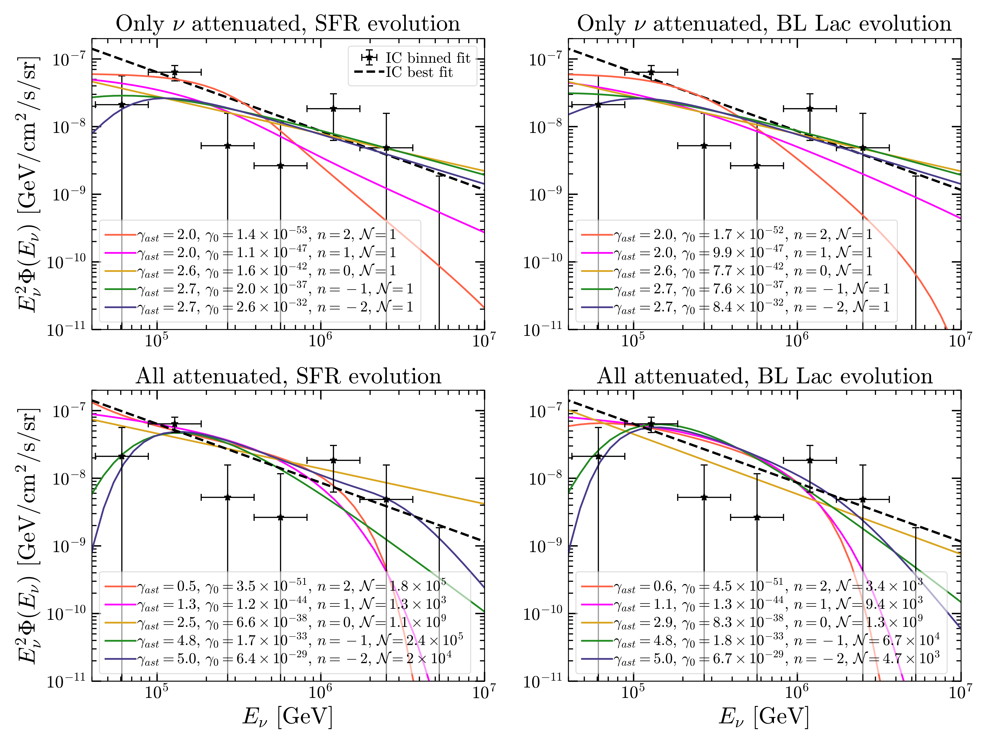
图注：Predicted diffuse neutrino fluxes in the presence of neutrino loss for the different scenarios and parameters as labeled in the figure. In all cases, we fix the normalization to the maximum allowed value, and we assume $\pi$-dominance composition, \(\cref{eq:pidom}.\) For reference, we show as a dashed black line the best-fit flux reported by the IceCube collaboration for their fit with $E^{-\gamma_{\rm astro}}$ spectra, as well as their binned reconstructed spectra with the corresponding uncertainties~\(\cite{IceCube:2020wum, IC75yrHESEPublicDataRelease}.\) See text for details.
对应解读：对应“建议重点查看的图表”第2项 HESE/弥散通量谱拟合图，以及“关键图表逐图导读”图2中关于观测谱、无衰减参考通量和含衰减通量的比较。
入选理由：该图直接叠加了含中微子损失情形下的预测弥散中微子通量、IceCube 最佳拟合幂律通量和分箱重建谱及误差，是理解论文如何用观测通量限制衰减的核心图。它比单纯参数约束图更直观地展示了衰减如何改变谱形、是否会在 IceCube 能区造成系统性偏离。
来源与置信度：\(arxiv_source\)；high；\(arxiv_source\) / main.tex:figure[2]
Fig04
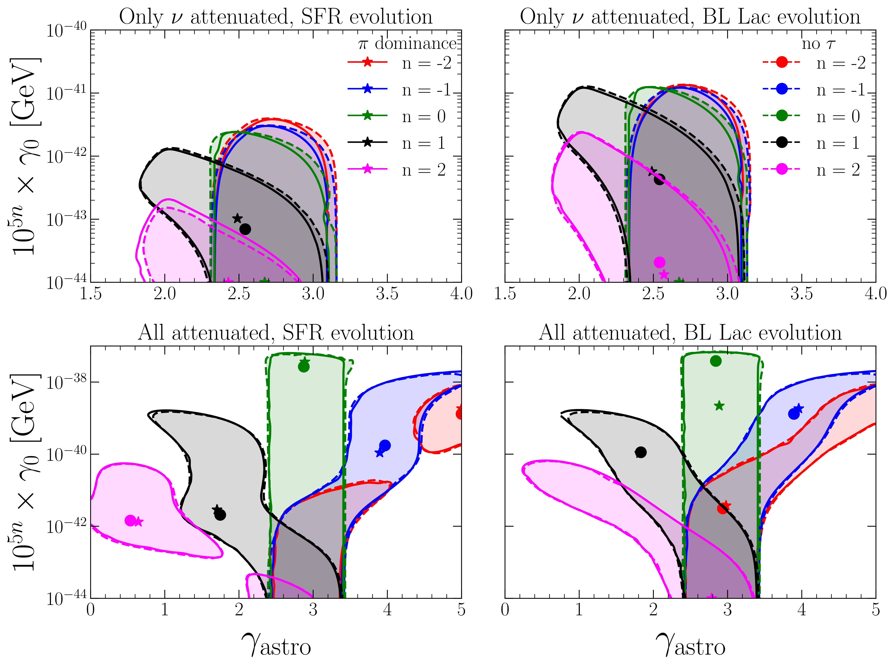
图注：95\% CL allowed regions (2dof) in the ($\gamma_{0}, \gamma_\mathrm{astro}$) plane after marginalizing over ${\cal N}$ and all systematic uncertainties, for different choices of the attenuation index $n$, the attenuation scenario, and source evolution, as labeled in the figure. The solid (dashed) contours are the results assuming a flavour composition of $\pi$-domination,~\(\cref{eq:pidom}\) (no-$\nu_\tau$,~\(\cref{eq:notau}).\) In all cases, $z_{\rm min}=2 \times 10^{-4}$.
对应解读：对应“建议重点查看的图表”第5项谱指数与衰减参数二维置信区间，以及“关键图表逐图导读”图4和“模型拟合”中关于能量相关衰减与谱指数退化的讨论。
入选理由：该图给出95% CL下衰减强度参数gamma_0与天体物理谱指数gamma_astro的二维允许区，并区分不同衰减能量指数、衰减场景、源演化和味组成假设。它最直接支撑日报中关于传播新物理会影响弥散谱指数测定、以及衰减参数与谱指数存在退化的重点结论。
来源与置信度：\(arxiv_source\)；high；\(arxiv_source\) / main.tex:figure[4]
Fig03
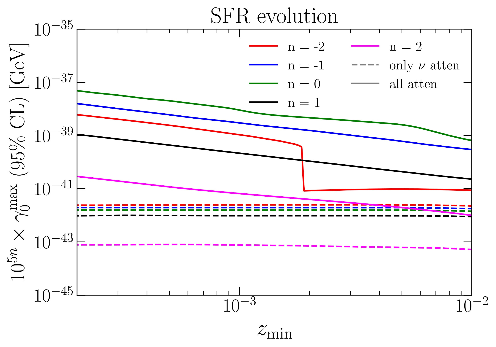
图注：Dependence of the 95\% CL $\gamma_0$ bound on the minimum redshift for the different attenuation indexes $n$ and scenarios (see text for details).
对应解读：对应“建议重点查看的图表”第4项源红移分布假设对约束的影响，以及“关键图表逐图导读”图5中关于传播距离、高红移权重和约束强弱变化的讨论。
入选理由：该图展示95% CL gamma_0上限如何随最小红移变化，并比较不同衰减指数和物理情形，能直接说明源距离/红移假设如何改变中微子损失约束。虽然它不是完整的源演化模型比较图，但对理解红移分布不确定性和约束稳健性非常关键。
来源与置信度：\(arxiv_source\)；high；\(arxiv_source\) / main.tex:figure[3]
Fig01
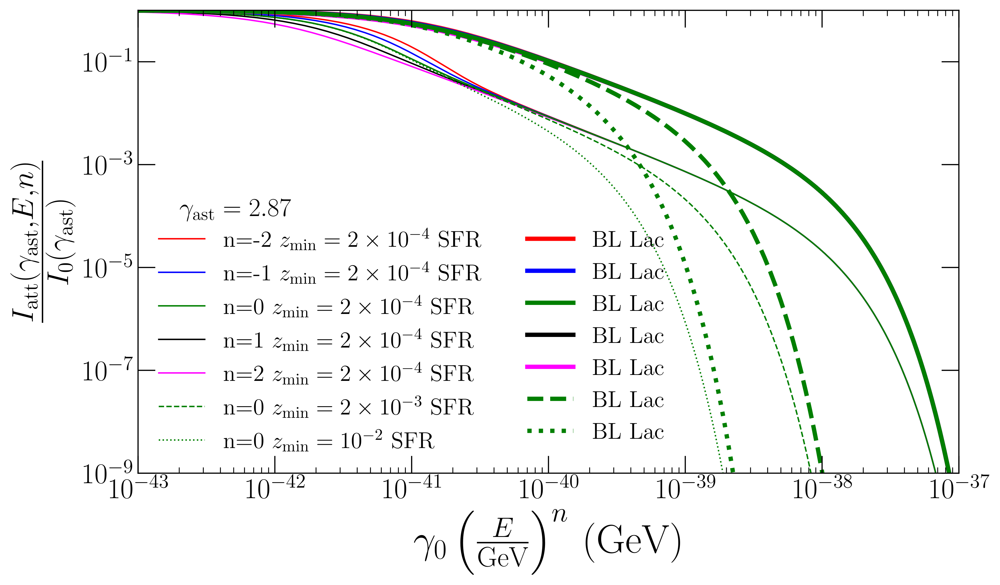
图注：$I_\mathrm{att}/I_0$ as a function of the attenuation exponent $\Gamma\equiv\gamma_0 (E/{\rm GeV})^n$ for the different parameter choices shown as labeled. Thinner (thicker) lines correspond SFR (BL-Lac) source evolution. The curves for different values of $n$ and BL-Lac source evolution totally overlap within the resolution of the figure.
对应解读：对应“建议重点查看的图表”第1项衰减存活概率或衰减因子随参数变化的图，以及“关键图表逐图导读”图1中关于IceCube能区内衰减是否显著的模型示意。
入选理由：该图以I_att/I_0展示衰减后强度相对无衰减强度随attenuation exponent Gamma的变化，并比较不同能量依赖指数、源演化和衰减场景，是理解指数衰减参数化和能量守恒约束的基础图。其与实际数据拟合的联系弱于Fig02和Fig04，但适合作为模型物理含义的入口。
来源与置信度：\(arxiv_source\)；high；\(arxiv_source\) / main.tex:figure[1]
强相关工作
这篇工作与 IceCube 弥散中微子谱测量、HESE 样本分析和高能中微子新物理约束密切相关。相似观测工作包括 IceCube 首次发现天体物理中微子、后续 HESE 谱分析、through-going muon 通量测量以及 cascade 样本测量。检索关键词可用 “IceCube HESE diffuse astrophysical neutrino flux spectral index”、“high-energy starting events IceCube astrophysical neutrinos”、“IceCube diffuse neutrino flux new physics”。
在基础理论方面，它连接到高能中微子不可见衰变、宇宙学基线中微子寿命限制、秘密中微子相互作用、以及中微子与宇宙中微子背景或暗背景散射等文献。相关检索关键词包括 “astrophysical neutrino decay invisible lifetime IceCube”、“secret neutrino interactions high energy astrophysical neutrinos”、“neutrino attenuation cosmic background IceCube”、“diffuse neutrino flux propagation new physics”。
潜在张力或相反观点主要来自源模型不确定性：如果弥散谱本身不是单一源族，而是多源族叠加，或存在源内吸收、最大能量截止、强红移演化，那么传播衰减与源端物理的区分会更困难。另一方面，多信使限制如 Fermi-LAT 各向同性伽马射线背景、超高能宇宙线能量预算和候选源族的电磁观测，会限制“用更高源端注入补偿衰减”的自由度。检索时可加上 “multimessenger constraints diffuse neutrino flux gamma-ray background”、“Waxman Bahcall bound diffuse neutrinos”、“neutrino source evolution IceCube spectral tension”。
相似工作：
- https://arxiv.org/abs/2605.13955
- https://arxiv.org/abs/1311.5238
基础理论 / 方法工作：
- https://arxiv.org/abs/hep-ph/9807282
- https://arxiv.org/abs/hep-ph/0207164
相反观点 / 张力线索：
（未提供）
5. The Homogeneous MeerKAT and Swift/XRT X-ray Binary Radio:X-ray Plane
- 来源：arXiv / astro-ph.HE
- 链接：https://arxiv.org/abs/2605.14003v1
- 作者：Justine Crook-Mansour, Rob Fender, Andrew Hughes, Sara Motta, Patrick A. Woudt, Arash Bahramian, Melania Del Santo, Zuobin Zhang
- 评分：novelty 7/10，importance 8/10，relevance 8/10，final 8.70/10
- 推荐理由：Large homogeneous MeerKAT plus Swift/XRT X-ray-binary radio:X-ray data set with public release, important for accretion-jet coupling and compact-object population studies. Worth reading for HE compact-object observers despite not being gamma-ray focused.
中文题目：均一化 MeerKAT 与 Swift/XRT 样本给出的 X 射线双星射电—X 射线平面
做了什么：这篇论文整理并发布了 ThunderKAT/SwiftKAT 五年监测计划中 X 射线双星的准同时射电与 X 射线观测：948 个 MeerKAT 射电数据点和 1029 个 Swift/XRT X 射线数据点。作者用同一台主射电望远镜、相对一致的 X 射线处理和准同时配对，构建了目前最大的“观测上均一”的 X 射线双星射电—X 射线光度平面，用来重新检验硬态和宁静态中吸积流与喷流之间的非线性相关。一个特别值得注意的结果是：软态中经常仍能探测到未分辨射电辐射，作者认为它很可能主要来自早先喷出的喷流抛射物，而不一定代表软态持续存在稳定紧致喷流。
为什么重要：射电—X 射线相关长期被用作黑洞和中子星 X 射线双星中“吸积功率如何转化为喷流功率”的经验标尺，也被推广到包含超大质量黑洞的 fundamental plane。过去的大样本往往混合 VLA、ATCA、MeerKAT、AMI、Swift、RXTE、NICER 等不同仪器和频段，频率换算、非同时性、通量标定和状态分类差异会把真实的源间差异与观测系统误差混在一起。这项工作的重要性在于，它把问题从“相关是否存在”推进到“在尽量统一的观测条件下，相关的离散、分轨和状态依赖到底有多真实”。
理论 / 观测 / 仪器方法价值：对观测而言，论文提供了一个可复用的公开数据集和交互式射电—X 射线平面，适合做源间比较、爆发演化、软硬态切换和喷流残留辐射研究。对理论而言，它给喷流—吸积耦合模型、辐射效率变化模型、黑洞自旋/磁通量/轨道倾角导致的分轨解释提供了更干净的约束。对方法而言，它强调了同质化监测、准同时配对、状态筛选和软态射电污染处理在构建经验关系时的必要性。
为什么应该关注：如果你关心黑洞喷流、X 射线双星状态转变、fundamental plane 或多信使瞬变巡天，这个数据集会成为后续几年常被引用的基准样本。它提醒我们：射电点不一定都能直接解释为当时的稳态核心喷流，特别是在软态；而所谓“标准轨道”和“异常轨道”的物理含义，也必须放在仪器系统误差被压低后的平面上重新评估。
展开详细解读：文章讲解、背景、理论、重点章节、图表与相关工作
文章详细讲解
科学问题：X 射线双星在硬态和宁静态中通常表现出紧致、部分自吸收的射电喷流，同时 X 射线来自内区吸积流、日冕或喷流基部。经验上，射电光度 \(L_R\) 与 X 射线光度 \(L_X\) 之间存在非线性关系，常写成 \(L_R\propto L_X^\beta\)。早期研究把黑洞 X 射线双星看成沿着一条“标准”相关演化，但后来发现不少源落在更“射电暗”或斜率不同的轨道上，中子星系统又整体不同。问题是：这些分轨究竟是物理差异，还是多仪器、多频段、多处理流程叠加出来的假象？
作者怎么做：论文基于 MeerKAT ThunderKAT 五年计划和并行的 SwiftKAT XRT 监测，汇总了 X 射线双星爆发期间的完整光变曲线。射电侧主要由 MeerKAT 给出，X 射线侧主要由 Swift/XRT 给出，减少了不同射电阵列、不同频率、不同 X 射线仪器响应和交叉定标造成的混杂。作者把 948 个射电点与 1029 个 X 射线点组织成准同时数据，构建了一个统一的射电—X 射线平面，并把这些数据与既有的物理解释框架联系起来，例如辐射效率、喷流功率、源倾角、黑洞/中子星差异、磁场和爆发历史。
关键结果：论文的核心产物不是单个新源的异常行为，而是一个大规模、同质化、可公开使用的经验平面。它确认了射电—X 射线关系并非简单单轨道图像，源间差异和状态依赖仍然显著。尤其重要的是，作者报告软态中经常检测到未分辨射电辐射；在传统图像中，软态稳态紧致喷流应被强烈压制，因此这些射电信号更可能是此前状态转变或硬态中发射出的离散抛射物仍在发光，而不是软态核心喷流仍正常存在。这会直接影响软态点是否能用于拟合喷流—吸积相关。
局限和下一步：即便 MeerKAT/Swift 数据比历史拼接样本更均一，仍存在准同时而非严格同时、射电空间分辨率有限、不同源距离不确定、吸收校正和谱模型选择、状态分类边界、软态抛射污染等问题。下一步需要更高角分辨率射电成像来分离核心和抛射结，高 cadence 多频射电谱来测量喷流谱断和光学深度演化，更统一的 X 射线宽带谱能量分布约束，以及把公开数据与贝叶斯层级模型结合，定量估计真实源间散布与观测误差的贡献。
背景知识
研究对象是 X 射线双星，通常由恒星级黑洞或中子星吸积伴星物质构成。爆发期间，系统会在硬态、软态和中间态之间转换。硬态中 X 射线谱较硬，常伴随稳定、紧致、连续补给的射电喷流；软态中热盘占主导，核心射电喷流通常被认为被淬灭；状态转变时则可能产生明亮的离散抛射。射电—X 射线平面正是把这些吸积和喷流现象压缩成一个可比较的经验关系。
历史上，Gallo、Fender、Pooley 等早期工作提出黑洞 X 射线双星在硬态中存在近似 \(L_R\propto L_X^{0.6-0.7}\) 的相关，后来又和 Merloni、Heinz、di Matteo 以及 Falcke、Körding、Markoff 等关于黑洞 fundamental plane 的工作相连，把黑洞质量作为第三个变量纳入。随后 H1743-322 等源显示出更陡或更射电暗的轨道，使“标准轨道”图像复杂化。中子星系统通常在同一 X 射线光度下更射电暗，但其斜率和散布也不是单一答案。
为什么现在值得重新看：MeerKAT 的灵敏度、视场和南天监测能力，使其可以在较低射电通量下高 cadence 跟踪多个爆发中的 X 射线双星；Swift/XRT 则提供灵活的 X 射线响应和长期监测。过去把不同望远镜、不同射电频率、不同 X 射线能段、不同吸收校正方法的结果拼在一起，会引入难以量化的系统误差。一个用同一主射电设施和相对统一 X 射线处理得到的大样本，可以更直接地检验物理分轨。
常见误区包括：第一，把所有射电探测都等同于当时的稳态核心喷流，忽略离散抛射和残留激波；第二，把射电—X 射线相关当作普适定律，而不是带有状态选择、频率选择、距离误差和源间差异的经验关系；第三，只看光度平面上的斜率，不看非同时性、上限、软态点、谱指数和成像形态对结论的影响。
基础理论 / 方法脉络
核心物理图像是吸积释放的引力能一部分以辐射形式出现在 X 射线，一部分通过磁流体过程进入喷流的动能和磁能，再通过同步辐射在射电波段被观测到。硬态中内区热盘可能后退，热日冕或辐射低效吸积流增强，喷流相对稳定；软态中薄盘延伸到更内侧，稳态紧致喷流通常被压制。于是 \(L_X\) 可被看作吸积流辐射输出的代理量，\(L_R\) 可被看作喷流非热辐射输出的代理量，但二者都不是喷流功率或吸积率的直接测量。
关键量包括射电通量密度 \(S_\nu\)、射电谱指数 \(\alpha\)（\(S_\nu\propto \nu^\alpha\)）、源距离 \(d\)、X 射线通量 \(F_X\)、吸收柱密度 \(N_H\)、光度 \(L_R\) 和 \(L_X\)、以及 X 射线硬度或谱态分类。把观测通量转成光度时，距离误差会同时移动同一源在两个坐标轴上的位置，从而制造相关方向上的协方差。射电频率换算依赖谱指数；若离散抛射处于光薄阶段，\(\alpha<0\)，而紧致喷流常接近平谱，简单频率换算会出错。
观测和数据分析逻辑上，理想做法是尽量准同时观测，因为 X 射线双星爆发演化很快，尤其状态转变时射电与 X 射线可能存在小时到天级延迟。MeerKAT 提供高灵敏射电成像，但未分辨源并不一定意味着核心喷流；Swift/XRT 提供软 X 射线谱和通量，但吸收、pile-up、能段选择和谱模型都会影响 \(F_X\)。因此射电—X 射线平面的解释必须结合状态、时间序列和谱信息，而不应只看二维散点图。
主要退化关系包括：吸积率与辐射效率退化、喷流功率与射电辐射效率退化、距离误差与本征光度退化、源倾角与多普勒增亮/减弱退化、核心喷流与离散抛射混合退化。选择效应也很明显：射电灵敏度决定了低 \(L_R\) 区域的截断，X 射线触发策略决定了爆发早期和晚期覆盖，软态射电上限和探测点如果处理不同，会改变拟合斜率。
公式与推导
射电和 X 射线光度的第一步来自通量—光度转换。若源距离为 \(d\)，某一频率处的射电通量密度为 \(S_\nu\)，常用的单频射电光度可写为
其中 \(\nu\) 是观测频率，\(L_\nu\) 是谱光度。X 射线能段内的吸收校正通量为 \(F_X\)，则
这两个式子说明距离误差会同时影响横纵坐标，因此不同源比较时距离不是独立的小误差。
若不同射电观测频率需要换算，通常假设局部谱为幂律
其中 \(\alpha\) 是射电谱指数。紧致自吸收喷流常有 \(\alpha\approx0\) 的平谱，光薄抛射常有 \(\alpha<0\)。这也是同质化 MeerKAT 样本有价值的原因：减少了由于未知 \(\alpha\) 造成的频率换算误差。
经验相关通常写成对数线性形式
其中 \(A\) 是归一化，\(\beta\) 是斜率，\(\epsilon\) 表示本征散布和测量误差的合并贡献。所谓“标准轨道”和“射电暗轨道”的差别，可以表现为不同的 \(A\)、不同的 \(\beta\)，或同一模型下较大的 \(\epsilon\)。
从吸积率出发可以看到斜率的物理含义。设 X 射线光度与吸积率满足
其中 \(q\) 描述辐射效率：辐射低效流中 \(q\) 可接近 2，辐射较高效薄盘/边界层中 \(q\) 可接近 1。若射电光度与喷流功率或吸积率满足
则有
因此观测斜率 \(\beta=pr/q\) 同时混合了喷流标度、喷流辐射效率和吸积辐射效率，不能被简单解释为单一物理参数。
若考虑喷流相对论性运动，观测射电通量还可能受多普勒因子影响：
其中 \(\Gamma\) 是喷流洛伦兹因子，\(\beta_j c\) 是喷流速度，\(i\) 是视线倾角，\(k\) 取决于连续喷流或离散团块几何。这个式子说明倾角和喷流速度可导致源间归一化差异，进而模拟出不同轨道。
模型拟合 / 应用方法
这类工作最常见的拟合是对 \(\log L_R\) 与 \(\log L_X\) 做带误差和本征散布的线性或分段线性回归，分别考察黑洞、中子星、硬态、软态、宁静态、单个源和全样本的斜率与归一化。理想似然应同时包含射电误差、X 射线误差、距离不确定性、非探测上限和额外本征散布，而不是只对纵轴做普通最小二乘。对于公开大样本，贝叶斯层级模型很有吸引力：每个源有自己的截距或斜率，全体源共享超参数，从而区分测量误差、源内演化和源间真实差异。
参数估计时需要特别处理上限和状态标签。MeerKAT 的高灵敏度会把很多过去只能作为上限的软态射电信号变成探测点，但这些点不一定属于同一个物理分量。如果把软态残留抛射点混入硬态紧致喷流拟合，斜率可能被拉平或增大散布。X 射线侧还要考虑吸收柱密度、能段选择、谱模型、pile-up 校正和低计数统计；射电侧要考虑成像噪声、背景源混淆、通量标定、未分辨扩展结构以及频谱状态。
残差的解读比斜率本身更关键。若某些源在整个光度范围内系统性位于低 \(L_R\) 一侧，可能暗示射电暗轨道、倾角去增亮、喷流效率低或 X 射线辐射效率高；若同一源在爆发上升和衰减阶段形成回滞，则说明单一 \(L_X\) 不能唯一决定喷流输出；若软态点残差很大且随时间延迟衰减，更可能是离散抛射余辉。实际应用上，这个平面可用于估计低光度 X 射线双星的喷流活动、为触发 VLBI 或多频射电观测选择目标、以及检验喷流—吸积耦合模型的群体预测。
重点章节 / 结果段落怎么读
-
数据/样本部分应首先读清楚 ThunderKAT 和 SwiftKAT 的观测策略：目标如何选择、cadence 如何、哪些源被纳入、射电和 X 射线怎样配对为准同时点。这里决定了样本选择函数，也决定了哪些区域的平面覆盖较好。
-
射电与 X 射线数据处理部分要重点看通量测量、上限定义、频率处理、XRT 谱拟合或通量换算、吸收校正和状态分类。对于专业读者，最重要的问题是这些步骤是否足以支持“homogeneous”的说法，以及还有哪些不可避免的系统误差。
-
光变曲线展示部分应按单源阅读，注意每次爆发中射电峰、X 射线峰、硬软态转变和可能抛射事件的相对时序。二维平面上的散点只有结合时间方向才容易分辨核心喷流和离散抛射。
-
射电—X 射线平面主结果部分是论文核心。应分别看全样本、按源分类、按谱态分类后的分布，关注是否仍存在多轨道、不同归一化或不同斜率，以及软态射电点在平面中落在哪里。
-
讨论部分应重点看作者如何解释源间多样性：辐射效率、喷流功率、倾角/多普勒效应、黑洞自旋、磁通量、环境相互作用和历史抛射污染各自能解释哪些现象、不能解释哪些现象。
-
数据发布和附录/稳健性检验部分值得仔细看，因为这篇论文的长期价值很大程度来自公开表格和交互式平面。读者应确认列名、误差、上限、状态标记、时间匹配窗口和可复现实验所需的元数据是否完整。
建议重点查看的图表
-
全样本射电和 X 射线光变曲线：看每个源的时间覆盖是否连续，射电峰是否滞后于 X 射线变化，软态期间的射电探测是否可能是前期抛射延续。
-
观测 cadence 和配对时间差分布：看射电—X 射线点的“准同时”到底有多同时，尤其状态转变附近是否存在天级错配。
-
总射电—X 射线光度平面：看坐标是否为 \(L_R\) 对 \(L_X\)，不同源/不同类型/不同状态如何编码，标准轨道、射电暗轨道或历史关系是否作为参考线绘出。
-
按谱态分色的平面：重点检查硬态、软态、宁静态点是否清楚分离；软态射电探测是否形成独立区域，还是与硬态相关混合。
-
单源轨迹图：看同一源在爆发上升和衰减中是否沿同一路径返回，是否有回滞、环状轨迹或离群点。
-
残差或相对于标准相关的偏离图：看偏离是否按源、状态、光度或时间系统性排列，而不是随机散布。
-
软态射电探测统计表：看探测率、通量范围、状态定义、是否有成像扩展迹象或多频谱信息。
-
数据发布表格示例或网页界面说明：看是否包含 MJD、通量、误差、上限、频率、X 射线能段、状态、距离假设和参考信息。
关键图表逐图导读
图 1：通常应是样本或监测概览图。横轴可能为时间 MJD，纵轴分别为射电通量密度和 X 射线通量/计数率，点代表 MeerKAT 和 Swift/XRT 观测。读这类图时要看射电观测是否覆盖了硬态上升、硬软转变、软态平台和回到硬态的全过程；不要只把射电峰与最近的 X 射线点机械配对，因为抛射事件可能有明显延迟。
图 2：若论文给出全样本射电—X 射线平面，横轴多半是 \(L_X\)，纵轴是 \(L_R=\nu L_\nu\)，二者通常用对数坐标。不同颜色/符号可能代表源、黑洞/中子星类别或谱态，模型线可能是历史标准相关或拟合轨道。读图重点是同一源的点云是否沿一条线移动、不同源是否在归一化上分层、低光度端是否被探测阈值截断。陷阱是把所有离群点都解释为新物理，而忽略距离和状态污染。
图 3：按状态分色的射电—X 射线平面应重点看软态点。若软态中仍有大量射电探测，需检查它们是否位于硬态相关的延长线上，还是偏离成一团；还要结合时间判断这些点是否紧随状态转变或大射电耀发之后。模型线若代表核心喷流相关，软态残留抛射点不应直接纳入同一物理拟合。
图 4：单个代表源的轨迹图可能展示 \(L_R\) 随 \(L_X\) 在一次爆发中的演化，点按时间或硬度着色。坐标轴仍是光度平面，但时间箭头或颜色梯度是关键信息。若上升和衰减分支不同，说明射电输出不仅由瞬时 X 射线光度决定；如果在状态转变后出现远离硬态轨道的射电亮点，可能对应离散抛射。
图 5：残差图或相对于参考相关的偏移量图，横轴可能是 \(L_X\)、硬度、时间、源类别或距离，纵轴是 \(\Delta\log L_R\)。这类图用于判断散布是否有结构。若残差按源聚集，源间物理参数或距离系统误差重要；若按状态聚集，状态分类和喷流成分混合重要；若残差随光度变化，单一幂律斜率可能不足。
图 6：软态射电探测或上限统计图/表应看探测率和通量分布，而不只是是否探测到。关键问题是软态点是否有多频谱指数、是否空间未分辨、是否与已知抛射事件时序一致。读图陷阱是把“未分辨”直接等同于“核心”，因为 MeerKAT 分辨率下小尺度抛射仍可能未分辨。
论文原图 / 可嵌入图片
Fig04
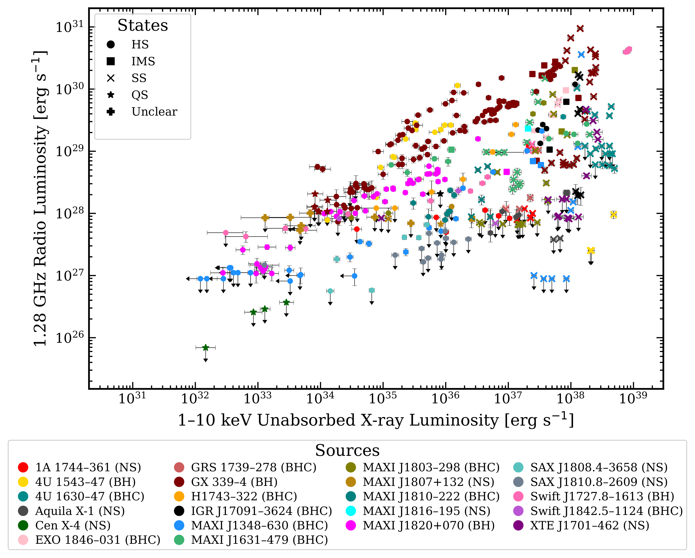
图注：A version of our $L_R$--$L_X$ plane, constructed by interpolating our X-ray light curves, as described in Section \(\ref{subsec: interp},\) and using the nominal source distances in Table \(\ref{tab: system_properties}.\) The error bars on the data do not include distance uncertainties. The colours for each source and markers for the spectral states are the same as in Figure \(\ref{fig: all_radio_luminosities}.\) Sources of all types are shown: black holes (BHs), black hole candidates (BHCs), and neutron stars (NSs). We include data for all the spectral states -- hard states (HS), intermediate states (IMS), soft states (SS), quiescent states (QS) -- and observations which we cannot label are called `Unclear'. This figure can be seen in greater detail on our \(\href{\)https://thunderkat.physics.ox.ac.uk/lrlx}{website}.
对应解读：建议重点查看的图表第3项；关键图表逐图导读中的“图2：全样本射电—X射线平面”。
入选理由：这是论文核心的同质化 MeerKAT/Swift 射电—X 射线光度平面，坐标明确为 \(L_R--L_X\)，并同时编码源、谱态和上限，最直接支撑日报关于标准轨道、源间分层、低光度截断和状态污染的解读。
来源与置信度：\(arxiv_source\)；high；\(arxiv_source\) / \(LrLx_paper.tex\):figure[4]
Fig05
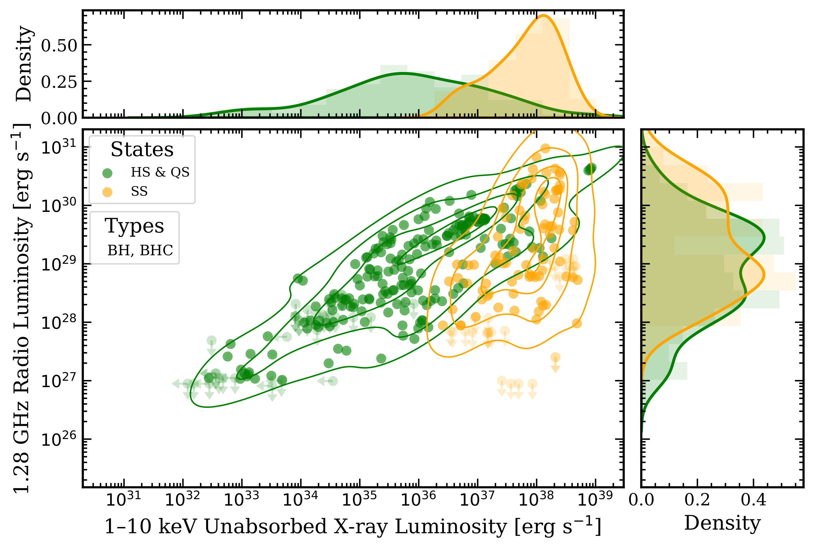
图注：The `interpolated' $L_R$--$L_X$ plane for the black holes and black hole candidates in our sample, for the hard/quiescent (green) and soft (orange) spectral states. Error bars have been omitted for clarity. To aid visualisation, the data are overlaid with kernel density estimates (KDEs) computed using the detections; contours show the {5, 25, 60, 90} per cent highest-density regions. Upper limits were not used for the histograms or KDEs, but are displayed with lighter shading and arrows.
对应解读：建议重点查看的图表第4项；关键图表逐图导读中的“图3：按状态分色的射电—X射线平面”。
入选理由：该图专门比较黑洞/黑洞候选体在硬/宁静态与软态中的 \(L_R--L_X\) 分布，并用 KDE 等高线显示探测点密度，是判断软态射电探测是否与硬态相关混合或形成独立分布的关键图。
来源与置信度：\(arxiv_source\)；high；\(arxiv_source\) / \(LrLx_paper.tex\):figure[5]
Fig09
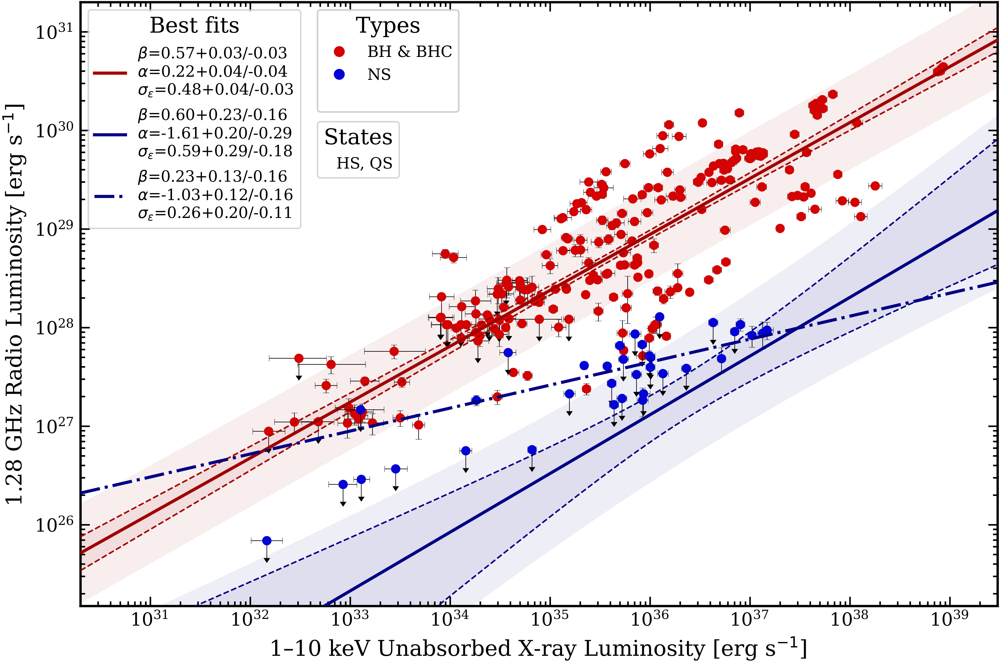
图注：Results of the \(\texttt{linmix}\) linear regression routine (Section \(\ref{subsec: linreg_method})\) applied to the `interpolated' $L_R$--$L_X$ plane (Section \(\ref{subsec: interp})\) for black hole and black hole candidate systems (red) and neutron star systems (blue) in the hard and quiescent spectral states. Best-fit values and their 1$\sigma$ uncertainties ($\beta$: slope; $\alpha$: normalisation; $\sigma_\epsilon$: intrinsic scatter) are calculated as the median and 16th/84th percentiles from $10^3$ fits in which the source distances were resampled from their assumed probability distributions (see Table \(\ref{tab: system_properties}).\) Dashed lines indicate the uncertainty bounds, while the lightly shaded regions represent the uncertainty including intrinsic scatter. The dot-dashed blue line shows the fit when only the NS detections are used (i.e., the upper limits are excluded). The error bars on the data do not include distance uncertainties, and the data are plotted for the nominal source distances.
对应解读：模型拟合段落；建议重点查看的图表第3项和第6项中关于模型线、置信区间和本征散布的讨论。
入选理由：该图给出 linmix 回归的斜率、归一化和本征散布，并显示 1σ 不确定性和包含本征散布的阴影区域，最能支撑日报中关于带误差回归、距离重采样、黑洞与中子星群体差异以及拟合局限的分析。
来源与置信度：\(arxiv_source\)；high；\(arxiv_source\) / \(LrLx_paper.tex\):figure[9]
Fig12
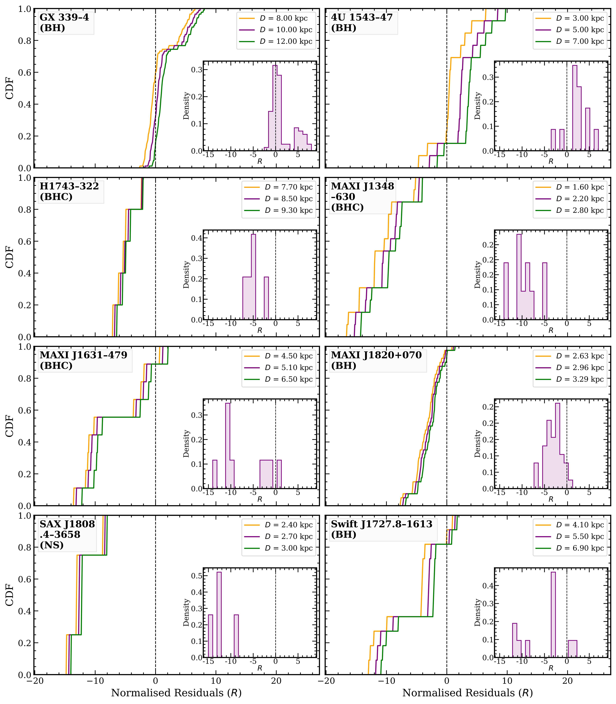
图注：The cumulative distribution functions (CDFs) of the normalised residuals ($R$) of the radio detections for several sources relative to the
standard' track defined by GX 339$-$4 (vertical dotted line; see Section \ref{sec: individual_sources}). For each source, we include only hard- and quiescent-state detections (in both $L_X$ and $L_R$), obtained from theinterpolated' plane. Data points to the right of the vertical dashed line are more radio-bright' than the standard track, while those to the left are moreradio-faint'. The different colours indicate the source distances used, with purple corresponding to the best-estimate distance. The inset in each panel shows the histogram of the normalised residuals computed using the nominal distance for that source. The additional branch of GX 339$-$4 above the standard track (arising from unresolved ejecta emission) is clearly visible. Most sources in the sample are found to be radio-quiet, and Swift J1727.8$-$1613 is one example of a source showing both radio-quiet data points and other points lying close to the standard track.对应解读：建议重点查看的图表第6项；关键图表逐图导读中的“图5：残差图或相对于参考相关的偏移量图”。
入选理由：该图直接展示相对于 GX 339-4 标准轨道的归一化残差 CDF 和直方图，可检验偏离是否按源、距离假设或射电亮/暗性质系统性聚集，比单纯散点图更适合支持日报对残差结构的重点解读。
来源与置信度：\(arxiv_source\)；high；\(arxiv_source\) / \(LrLx_paper.tex\):figure[12]
Fig07
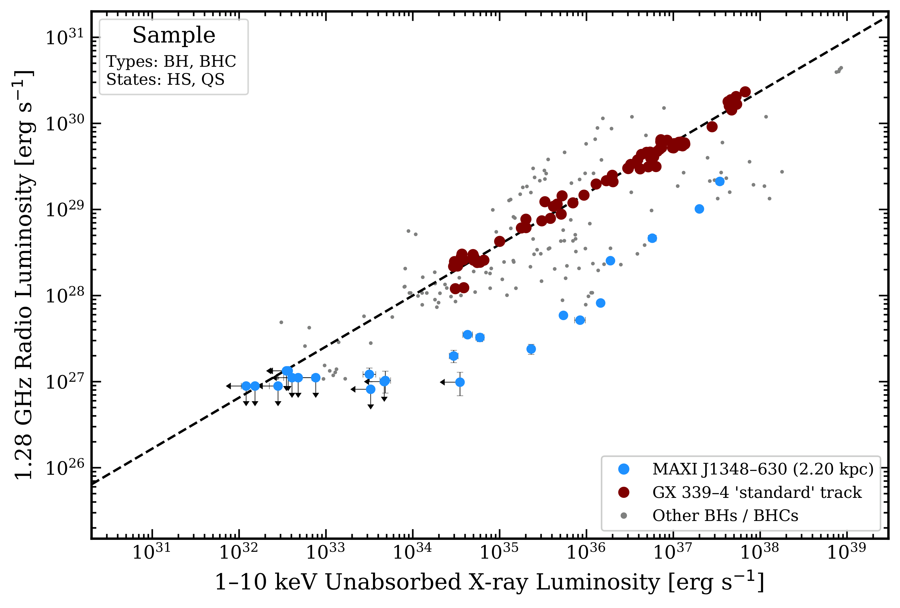
图注：The same as Figure \(\ref{fig: LrLx_plane_interp_sources},\) but showing only the data points for the black holes and black hole candidates during their hard and quiescent states. The dashed line is our defined
standard' track, obtained using a subset of GX 339$-$4 data (shown in maroon; see Section \ref{subsec: standard_track}). In blue, we highlight thehybrid' behaviour of the black hole candidate system MAXI J1348$-$630.对应解读：建议重点查看的图表第3项和第5项；关键图表逐图导读中关于标准相关、射电暗轨道和单源行为的讨论。
入选理由：该图只保留黑洞/黑洞候选体的硬态与宁静态点，并明确画出由 GX 339-4 定义的标准轨道，同时突出 MAXI J1348-630 的 hybrid 行为，适合说明多轨道和单源非唯一演化。
来源与置信度：\(arxiv_source\)；high；\(arxiv_source\) / \(LrLx_paper.tex\):figure[7]
Fig02
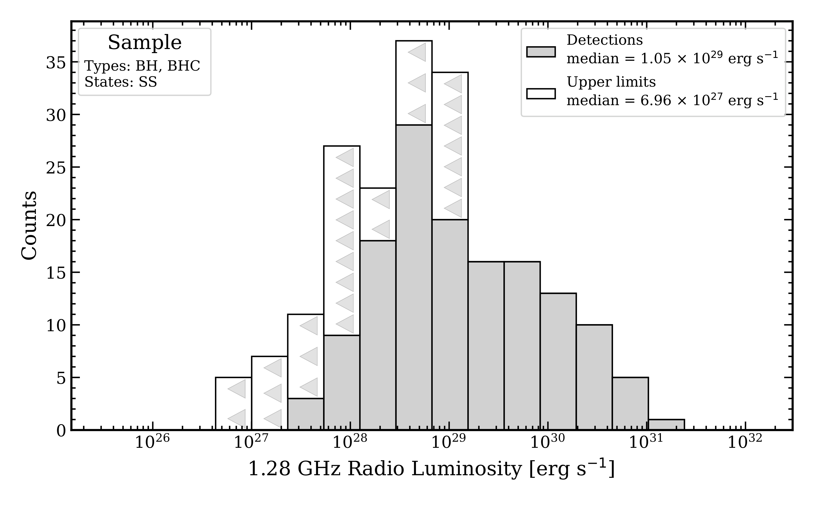
图注：Histograms of the 1.28 GHz MeerKAT luminosities ($L_R = \nu L_\nu$, with $\nu$ = 1.28 GHz) for data points in the \(\emph{soft spectral state},\) for the systems with black holes and black hole candidates in our sample. These luminosities were converted from core flux density measurements using the nominal source distance estimates in Table \(\ref{tab: system_properties}.\) The histograms are stacked so that detections (shown in grey) are plotted beneath the 3$\sigma$ upper limits (shown in white, with arrows pointing left to indicate the limit direction).
对应解读：建议重点查看的图表第7项；关键图表逐图导读中的“图6：软态射电探测或上限统计图/表”。
入选理由：该图用直方图统计软态黑洞/黑洞候选体的 1.28 GHz 射电光度，并区分探测和 3σ 上限，直接支撑日报关于软态射电探测率、通量范围和不能简单解释为核心喷流的讨论。
来源与置信度：\(arxiv_source\)；high；\(arxiv_source\) / \(LrLx_paper.tex\):figure[2]
强相关工作
这篇工作直接承接黑洞 X 射线双星硬态射电—X 射线相关的经典研究，尤其是早期提出 GX 339-4、V404 Cyg 等源存在近似统一相关的工作，以及后来发现 H1743-322 等源偏离标准轨道的研究。它的推进点不是提出一个全新公式，而是用 MeerKAT 和 Swift/XRT 的均一监测降低历史汇编样本的系统误差。建议检索关键词：radio X-ray correlation X-ray binaries, ThunderKAT MeerKAT X-ray binaries, SwiftKAT, black hole X-ray binary jets, radio quiet track H1743-322。
它也与黑洞 fundamental plane 文献相关，因为 X 射线双星的恒星质量黑洞样本是把吸积—喷流标度外推到 AGN 的低质量端锚点之一。如果 X 射线双星内部存在多轨道、状态污染和离散抛射贡献，那么 fundamental plane 的散布和物理解释也会受影响。建议检索关键词：fundamental plane of black hole activity, scale invariant jets, radiatively inefficient accretion flow, compact jets。
相反或存在张力的观点主要围绕“标准轨道是否普适”“射电暗轨道是否代表不同吸积模式”“软态射电是否意味着喷流未完全淬灭”。这篇论文的软态未分辨射电探测提醒读者，软态射电并不自动推翻喷流淬灭图像，因为它可能来自旧抛射。后续需要 VLBI、高频射电谱和更密集时间采样来区分核心与抛射。
相似工作：
- https://arxiv.org/abs/2605.14003
- https://arxiv.org/pdf/2605.14003
基础理论 / 方法工作：
- https://arxiv.org/abs/astro-ph/0305231
- https://arxiv.org/abs/astro-ph/0305261
- https://arxiv.org/abs/astro-ph/0301335
相反观点 / 张力线索：
- https://arxiv.org/abs/0909.3347
- https://arxiv.org/abs/1207.3344
6. The Demographics of Sagittarius A* X-ray Flares over 25 Years with Chandra
- 来源：arXiv / astro-ph.HE
- 链接：https://arxiv.org/abs/2605.13962v1
- 作者：Zach Sumners, Nicole M. Ford, Daryl Haggard, Joseph M. Michail, Joey Neilsen, Michael A. Nowak, Mayura Balakrishnan, Sophia Sánchez-Maes
- 评分：novelty 7/10，importance 8/10，relevance 8/10，final 8.70/10
- 推荐理由：Most complete 25-year Chandra Sgr A* X-ray flare catalog with 100 flares and strengthened spectral/luminosity correlations. Valuable HE Galactic Center data product for compact-object/accretion physics.
中文题目：钱德拉 25 年 Sgr A* X 射线耀发的人口统计学
做了什么：这篇论文系统整理了钱德拉望远镜 25 年间对银河系中心超大质量黑洞 Sagittarius A 的 X 射线监测数据，总曝光约 6.8 Ms，给出迄今最完整的钱德拉 Sgr A X 射线耀发目录。作者识别出 100 次 2–10 keV 耀发，其中 18 次为首次报告，未吸收光度约为 4–575 × 10^33 erg s^-1，并包含钱德拉观测到的第二亮 Sgr A* 耀发。核心结论是：耀发越亮，X 射线谱越硬，光子谱指数从弱耀发的 Γ≈3 逐渐变到强耀发的 Γ≈2；同时，耀发持续时间、总能量 fluence 和峰值计数率之间的经验相关性在更大样本中得到加强。这说明弱耀发和强耀发可能不是同一粒子分布的简单幅度缩放，而涉及非热粒子加速或冷却条件的系统变化。
为什么重要：Sgr A* 是离我们最近的低吸积率超大质量黑洞，X 射线耀发是研究其事件视界尺度附近瞬态能量释放、粒子加速和辐射机制的少数直接窗口之一。单个耀发很难区分磁重联、湍流加热、冲击加速或热电子尾部等模型；25 年目录的价值在于把问题从“解释某一次耀发”推进到“解释耀发族群的统计规律”。亮度—硬度相关性尤其重要，因为它直接约束发射电子能谱随耀发强度的变化。
理论 / 观测 / 仪器方法价值：对观测而言，这个目录提供了统一处理的钱德拉长期基准样本，可用于与 XMM-Newton、NuSTAR、Swift、GRAVITY/EHT 近红外和毫米波观测做多波段关联。对理论而言，耀发光度函数、持续时间、fluence、峰值率和谱指数之间的关系给粒子分布、磁场、加速时标和冷却时标模型提供了硬约束。对方法而言，长期非均匀监测数据中的耀发检测、背景处理、吸收修正和谱拟合框架，也可作为其他低光度活动星系核瞬态研究的模板。
为什么应该关注：如果你关心黑洞吸积在极低 Eddington 比下如何释放能量，这篇文章值得看，因为它把 Sgr A* 的 X 射线耀发从零散事件整理成了可统计建模的样本。如果你做高能瞬变、银河中心、多波段联测或数值模拟，它提供了一个能直接拿来检验模型的观测目录。更实际地说，未来要解释 EHT/GRAVITY 所见近视界结构的时间变化，必须知道 X 射线耀发的频率、能谱和能量预算，而这篇就是钱德拉时代最重要的基线之一。
展开详细解读：文章讲解、背景、理论、重点章节、图表与相关工作
文章详细讲解
科学问题：Sgr A* 的静默 X 射线辐射很弱，但会不定期出现持续数十分钟到数小时的耀发，光度可高出静默态一到数个数量级。过去已有多个耀发目录和个例研究，但样本量有限、时间覆盖不完整，导致几个关键问题仍不稳固：耀发是否存在统一的光度函数？亮耀发是否只是弱耀发的放大版？谱硬度、持续时间、fluence 和峰值率之间的相关性是真实物理信号，还是由检测阈值和分析方法造成？
作者怎么做：论文汇总了钱德拉整个任务寿命中约 6.8 Ms 的 Sgr A* 监测数据，对 25 年观测进行系统化搜索和重新分析，构建包含 100 次 X 射线耀发的目录。目录给出 2–10 keV 未吸收光度、持续时间、fluence、最大计数率、硬度或谱指数等基本量。作者不仅报告新发现的 18 次耀发，还将新样本与过去已知事件放在一致框架下，重新检查亮度—硬度关系以及持续时间、总能量和峰值率之间的经验相关性。
关键结果：扩展后的样本支持并强化了此前的迹象，即 Sgr A* 耀发越亮，X 射线谱越硬。谱拟合显示，光子谱指数 Γ 随耀发亮度升高从约 3 变到约 2；在常用幂律谱表示下，Γ 变小意味着高能光子相对更多。作者还发现持续时间、fluence 和最大计数率之间的相关性在更大样本中更清楚，这提示耀发族群可能由相近的能量释放过程控制，但强弱耀发对应的粒子能谱、加速效率或冷却条件有所不同。
局限和下一步：钱德拉长期数据并非均匀巡天，观测间隔、曝光长度、仪器状态、背景环境和 off-axis 条件都可能影响耀发检测完整性；弱耀发样本尤其受阈值和背景建模限制。X 射线单波段也难以唯一确定同步辐射、同步自康普顿或热/非热混合模型。下一步应把该目录与近红外、毫米波和 NuSTAR 硬 X 射线数据做时间关联，并用 forward modeling 将耀发检测函数、光度函数和谱演化一起拟合。
背景知识
Sgr A* 是银河系中心约 4 × 10^6 太阳质量的超大质量黑洞，距离近、角尺度大，是研究低光度活动星系核和近视界等离子体的最佳实验室之一。它的平均吸积率远低于经典明亮 AGN，辐射效率也很低，因此平时 X 射线亮度很暗；但它会出现快速 X 射线耀发，说明即使在低吸积率条件下，局部磁场重联、湍流或粒子加速仍可在短时间内释放可观能量。
历史上，Sgr A* X 射线耀发主要由 Chandra、XMM-Newton、Swift 和 NuSTAR 发现和跟踪。早期样本揭示了耀发的持续时间大致为几十分钟到几小时，光度函数可能接近幂律或截断幂律，且近红外耀发出现频繁，X 射线耀发更像是近红外非热电子尾部的高能端或另一个辐射通道。但由于强耀发罕见、弱耀发接近检测极限，统计结论长期受样本量和选择效应限制。
现在值得重新看的原因有两个。第一，钱德拉已经积累了跨越 25 年的高角分辨率数据，可在拥挤的银河中心区域相对干净地分离 Sgr A 与周围弥散气体、恒星源和暂现源。第二，EHT、GRAVITY、ALMA 和 NuSTAR 等多波段设施正在把 Sgr A 的空间结构和时间变化联系起来，X 射线耀发目录提供了解释这些多波段事件的高能端约束。
一个常见误区是把所有耀发看成同一过程的简单强度缩放：只要注入更多电子，光度就升高。本文强调的亮度—硬度关系提示情况更复杂，强耀发可能具有更硬的电子能谱、更高的最大电子能量、更强磁场或不同冷却历史。另一个误区是把目录中的耀发频率直接当成真实发生率；实际发生率必须考虑观测窗口、背景水平、检测效率和未探测弱耀发。
基础理论 / 方法脉络
Sgr A* X 射线耀发通常用非热辐射过程解释。若 X 射线来自同步辐射，需要电子被加速到非常高的洛伦兹因子，并且冷却时间较短；若来自同步自康普顿或逆康普顿，则低能同步光子被相对论电子散射到 X 射线能段。两类模型对磁场强度、电子密度、源区大小和多波段时间延迟有不同预言，因此 X 射线谱指数和光度统计很关键。
观测上，钱德拉的优势是亚角秒成像，可以在银河中心复杂背景中定位 Sgr A* 附近的 X 射线事件。基本数据是随时间变化的光子到达率和能量分布。耀发检测通常需要在静默态加背景的基线之上寻找显著计数率增强，并通过时间分段、贝叶斯块或类似方法估计起止时间、持续时间、峰值计数率和 fluence。谱分析则把耀发期间的光子能量分布与吸收幂律等模型比较，得到光子谱指数 Γ 和未吸收通量。
核心可观测量之间存在退化。计数率到光度的转换依赖谱形和吸收柱密度；弱耀发的 Γ 不确定度较大，硬度—亮度相关性可能受阈值影响，因为硬谱事件在某些能段更容易被检测。持续时间和峰值率也不是完全独立：同样 fluence 的事件，如果持续时间短，峰值更高，更容易触发检测。因此，解释相关性时必须区分物理关系和观测选择效应。
仪器和数据分析系统误差也不可忽略。钱德拉跨越 25 年，探测器响应、污染层、背景、观测模式和 aimpoint 都会变化。银河中心附近还有弥散热等离子体、尘埃散射晕和点源混杂，背景区域选择会影响弱耀发的净计数。一个可靠目录的价值正是在于用尽可能一致的流程处理这些差异，让后续统计建模有共同基准。
公式与推导
最基本的谱模型通常写成吸收幂律。观测到的光子谱可表示为
其中 \(E\) 是光子能量，\(N_{\rm H}\) 是视线方向氢柱密度，\(\sigma(E)\) 是光电吸收截面，\(K\) 是归一化，\(\Gamma\) 是光子谱指数。本文所说“亮耀发更硬”就是指随光度升高 \(\Gamma\) 变小，例如从约 3 变到约 2。
从模型谱得到 2–10 keV 未吸收能量通量，需要去掉吸收项并对能量加权积分：
这里 \(F_{2-10}\) 是能量通量，积分中的 \(E\) 把光子数通量转换为能量通量。若 \(\Gamma\neq 2\)，积分与 \((10^{2-\Gamma}-2^{2-\Gamma})/(2-\Gamma)\) 成正比；因此谱指数变化会显著影响计数率到能量通量的转换。
已知距离 \(D\) 后，未吸收光度为
对 Sgr A*，\(D\) 约为 8 kpc。论文目录中给出的 2–10 keV 光度范围约为 \(4\text{--}575\times10^{33}\,{\rm erg\,s^{-1}}\)，本质上就是由观测计数、仪器响应、吸收修正和距离换算得到。
耀发总释放的 X 射线能量常用 fluence 或积分能量表征：
其中 \(t_1,t_2\) 是耀发起止时间，\(\Delta t\) 是持续时间，\(\bar L_{2-10}\) 是耀发期间平均光度。若使用观测计数，则对应的 fluence 是净计数率在时间上的积分，再通过谱模型转换为能量。
若 X 射线来自同步辐射，电子能谱 \(dN_e/d\gamma\propto \gamma^{-p}\) 与光子谱指数近似满足
其中 \(\gamma\) 是电子洛伦兹因子，\(p\) 是电子能谱指数。于是 \(\Gamma\approx3\) 对应 \(p\approx5\)，而 \(\Gamma\approx2\) 对应 \(p\approx3\)。这给出了亮耀发更硬的物理解释：强耀发可能产生了更硬的非热电子分布，或冷却对谱形的软化较弱。
检测显著性可粗略理解为源区计数超过背景涨落：
其中 \(C_{\rm flare}\) 是耀发窗口内总计数，\(C_{\rm q}\) 是静默态贡献，\(C_{\rm bkg}\) 是背景贡献。这个公式说明为什么弱、短、软的耀发最容易遗漏，也解释了目录统计必须讨论完整性和选择效应。
模型拟合 / 应用方法
这类工作通常包含两层拟合。第一层是光变曲线上的耀发识别和参数估计：给定背景加静默态模型，寻找计数率显著上升的时间段，估计起止时间、持续时间、峰值计数率和净 fluence。可使用分段常数模型、贝叶斯块、阈值触发或似然比方法。实际残差应检查耀发前后是否仍有系统偏离，避免把慢变背景或相邻弱耀发误合并成一个长事件。
第二层是谱拟合。常见模型是吸收幂律，拟合参数包括 \(N_{\rm H}\)、\(\Gamma\)、归一化以及可能的背景谱参数。由于单个弱耀发光子数有限，常需固定或联合约束 \(N_{\rm H}\)，或者按亮度分组堆叠谱来提高统计量。似然函数通常基于 Poisson 计数统计和仪器响应矩阵，而不是简单高斯误差；低计数情况下 Cash statistic 比 \(\chi^2\) 更合适。
人口统计层面可进一步拟合耀发光度函数、持续时间分布和相关性，例如 \(\log L\) 与 \(\Gamma\)、\(\log\) fluence 与 \(\log\) 峰值率之间的线性或幂律关系。这里最大的挑战是截断样本：检测阈值会使低 fluence、短持续时间和软谱事件缺失，导致斜率偏差。严谨做法应在似然中加入检测效率 \(P_{\rm det}(L,\Delta t,\Gamma,背景)\)，或通过注入—恢复模拟校正。
系统误差包括背景区域选择、尘埃散射和吸收模型、钱德拉响应随时间变化、耀发重叠、pile-up 对极亮耀发的影响，以及计数率到光度转换依赖谱形造成的循环性。对于读者，最实用的看法是：单个点的参数可能不精确，但若在多种处理方式下仍出现亮度—硬度趋势，就更可能反映真实物理。该目录未来可直接用于给 GRMHD 后处理辐射模型、磁重联粒子加速模型和多波段延迟模型提供先验或检验样本。
重点章节 / 结果段落怎么读
-
数据与样本构建：优先阅读作者如何选择 25 年钱德拉观测、总曝光 6.8 Ms 如何组成、哪些观测模式被包含或排除。这里决定了目录的选择函数，也是后续发生率和光度函数解释的基础。
-
耀发检测方法：重点看源区和背景区定义、静默态基线如何估计、耀发起止时间如何确定、相邻事件如何拆分。对弱耀发而言，这些细节比后续物理解释更能影响结果。
-
目录结果：检查 100 个耀发的表格，包括新报告的 18 次事件、光度范围、持续时间、fluence 和峰值计数率。表格中不只要看极端亮事件，也要看低光度端是否接近检测阈值。
-
谱分析和硬度—亮度关系：这是论文最重要的物理结果。读者应关注作者是用单个耀发谱、分组堆叠谱还是硬度比来支持 Γ 从约 3 到约 2 的变化，以及相关性显著性如何评估。
-
相关性与物理解释：持续时间、fluence、最大计数率之间的关系可帮助判断耀发形状是否自相似。讨论部分应重点看作者如何连接到粒子分布变化、非热加速和不同耀发机制。
-
稳健性和附录：如果有附录或补充材料，应检查检测完整性、不同能段选择、背景处理、旧目录对比和极亮事件 pile-up/响应校正。
建议重点查看的图表
-
长期观测覆盖图：应检查 25 年中曝光分布是否均匀，是否有密集监测时期主导耀发样本；这影响发生率解释。
-
耀发光变曲线示例：看强、弱、新发现耀发的净计数率随时间变化，注意背景水平、起止时间和相邻事件拆分是否合理。
-
目录参数分布图：包括光度、持续时间、fluence、峰值计数率直方图或累积分布。关键是低端是否出现明显截断，以及强耀发是否形成长尾。
-
亮度—硬度或光度—Γ 图：这是核心诊断。应看误差条、是否由少数亮耀发驱动、弱耀发 Γ 的不确定度是否很大，以及是否给出相关性显著性。
-
分组谱或谱拟合残差图：检查吸收幂律是否足够描述不同亮度组；若残差在低能端系统偏离，可能说明吸收或背景建模影响 Γ。
-
fluence—持续时间—峰值率关系图：看是否接近幂律相关，散布有多大，短而弱的区域是否被检测阈值切掉。
-
与旧目录对比表或图：检查新增 18 次耀发如何改变过去结论，尤其是第二亮耀发是否显著影响斜率和极端尾部统计。
-
检测效率或完整性诊断：如果论文提供注入—恢复、阈值线或灵敏度曲线，应优先看它们，因为这决定人口统计结论的可信度。
关键图表逐图导读
图 1：通常应是钱德拉观测覆盖或 Sgr A* 区域示意。横轴可能为年份或观测时间，纵轴为曝光、计数率或观测 ID 分布。读图时不要把曝光密集时期的耀发数直接等同于真实活动增强，必须用曝光时间归一化。
图 2：可能展示代表性耀发光变曲线。横轴为相对时间，纵轴为 2–10 keV 或全能段计数率，数据点为时间 bin 内计数率，阴影或竖线标出耀发窗口。重点看耀发窗口选择是否覆盖完整上升和衰减，背景基线是否平稳；弱耀发附近的 Poisson 涨落容易造成起止时间不确定。
图 3：可能是耀发光度、持续时间或 fluence 的分布。横轴为参数值，纵轴为事件数或累积数。若低光度端出现转折，不应立即解释为物理截断，因为更可能是检测不完整；高光度长尾则对强耀发发生率和能量预算更有意义。
图 4：核心图应是谱硬度或光子谱指数 Γ 随光度变化。横轴通常为 \(L_{2-10}\) 或峰值计数率，纵轴为 Γ 或硬度比；模型线可能为线性回归或分组平均。若纵轴是 Γ，向下代表谱变硬；这是最容易读反的地方。应检查相关性是否仍存在于去除最亮几个点之后。
图 5：若有分亮度组的谱拟合图，横轴为能量，纵轴为计数谱、展开谱或残差。不同颜色代表弱、中、强耀发组，模型线多为吸收幂律。关键是高能端相对增强是否随亮度上升，而不是只看模型给出的 Γ 数字。
图 6：fluence、持续时间和峰值率之间的相关性图。横轴和纵轴可能均为对数尺度，数据点代表单次耀发，线为幂律拟合或经验相关。读图陷阱是共同变量问题：fluence 本身约等于平均光度乘持续时间，因此与持续时间和峰值率天然相关；需要看散布和残差是否包含额外物理信息。
图 7：如果有新旧目录对比或检测完整性图，应看新增事件集中在什么亮度和时间段。新增 18 次耀发若多数在弱端，会改善低光度统计；若包含极亮事件，则会显著影响高端尾部和亮度—硬度关系。
论文原图 / 可嵌入图片
Fig02
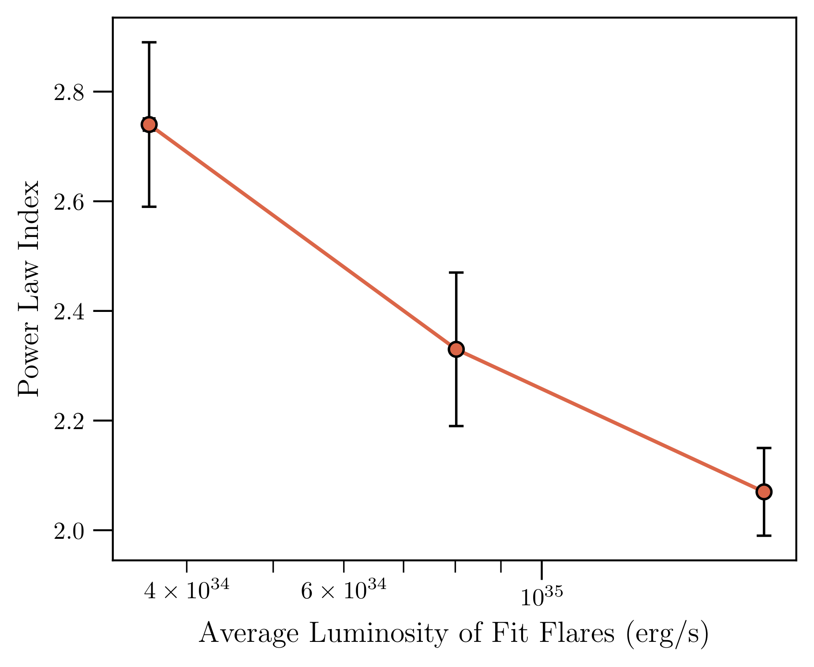
图注：The flaring power law indices of our joint spectral fits show an evolution from $\Gamma_f \sim 3$ to 2 as flares become more luminous. Each power law index is from the joint fit of multiple flares highlighted in the bottom three rows of Table \(\ref{tab:joint_fit},\) and the luminosity of each data point is the average of the flares used in the spectral modeling. The uncertainties in average luminosity are too small to be seen.
对应解读：对应“建议重点查看的图表”第4项和“关键图表逐图导读”图4：亮度—硬度或光度—Γ 核心诊断；也直接对应模型拟合中谱指数随亮度变化的结论。
入选理由：这是论文最核心结果的直接图示：联合谱拟合给出耀发光子谱指数 Γ 随平均光度升高从约3变到约2，正好支撑日报中“越亮越硬”的重点解读。相比硬度比分布，它更接近物理谱参数和吸收幂律拟合结果，因此应优先嵌入。
来源与置信度：\(arxiv_source\)；high；\(arxiv_source\) / sample701.tex:figure[2]
Fig03
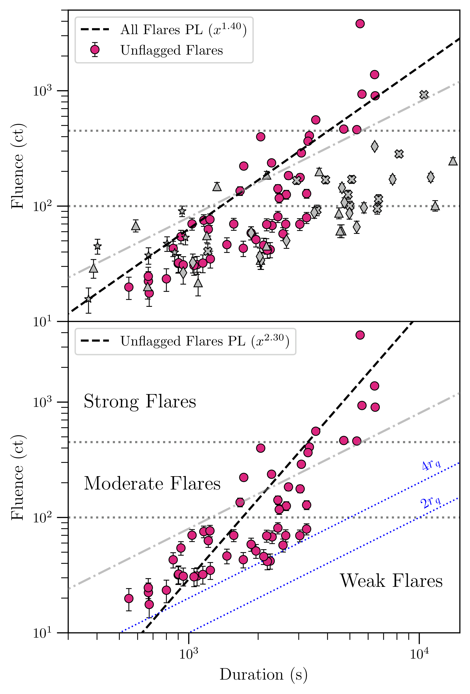
图注：Correlation between the duration and fluence of a flare. Black dashed lines are power law fits, and the grey dash-dotted line is a power law slope of $x^1$ to illustrate where the ratio of fluence to duration would be constant in log-log space. \(\textit{Top}\): Flagged flares are identified by visual inspection, highlighted in grey. Triangle markers are flares cut off by the start or end of the observation. Stars are events where Bayesian Blocks has clearly underestimated the duration of the flare. Diamonds are faint flares where the specific start and end time is ambiguous because of low SNR. Cross markers represent flares reported as one, but potentially made up of two or more based on visual interpretation. \(\textit{Bottom}\): The duration and fluence correlation of only unflagged flares. The blue dotted lines show where flares with mean count rates of 2 and 4 times the \(\Sg\\) quiescent rate would lie to illustrate that our catalog contains a faint flare detection bias.
对应解读：对应“建议重点查看的图表”第6项和第8项，以及“关键图表逐图导读”图6：fluence—持续时间关系、幂律拟合、低端检测偏差。
入选理由：该图不仅展示 duration–fluence 相关性，还明确标出被旗标的可疑耀发、观测截断事件、低信噪比起止时间不确定事件，并用蓝色虚线显示弱耀发检测偏差。它直接支撑日报关于共同变量、样本截断和低 fluence/短时标不完整性的讨论。
来源与置信度：\(arxiv_source\)；high；\(arxiv_source\) / sample701.tex:figure[3]
Fig06
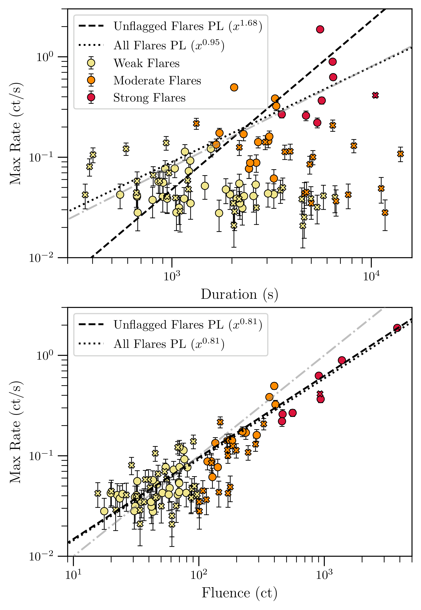
图注：Correlations between duration, fluence, and maximum count rate. Events marked with a cross are flagged flares from Figure \(\ref{fig:flare_cutting}.\) \(\textit{Top}\): The duration and maximum count rate of flares is moderately correlated. Many flagged flares appear at long duration and low count rate, as discussed in Section \(\ref{sec:flagging}.\) A power law fit to all flares is given by the dotted line, and to only unflagged flares by the dashed line. The grey dash-dotted line is $x^1$. \(\textit{Bottom}\): There is a strong correlation between fluence and maximum count rate. The dashed, dotted and dash-dotted lines are the same as the top panel. Many events in the lower left region with higher spread are flagged, potentially indicating that they deviate from the power law fit due to systematics instead of inherent flare properties.
对应解读：对应“建议重点查看的图表”第6项和“关键图表逐图导读”图6：持续时间、fluence、峰值计数率三者之间的相关性和幂律拟合。
入选理由：这张图补全了 Fig03 未覆盖的峰值计数率维度，展示 duration–maximum count rate 与 fluence–maximum count rate 的相关性，并区分全部耀发与未旗标耀发的拟合线。它最适合支撑日报中关于经验相关性增强、散布和系统误差点偏离幂律的解读。
来源与置信度：\(arxiv_source\)；high；\(arxiv_source\) / sample701.tex:figure[6]
Fig04
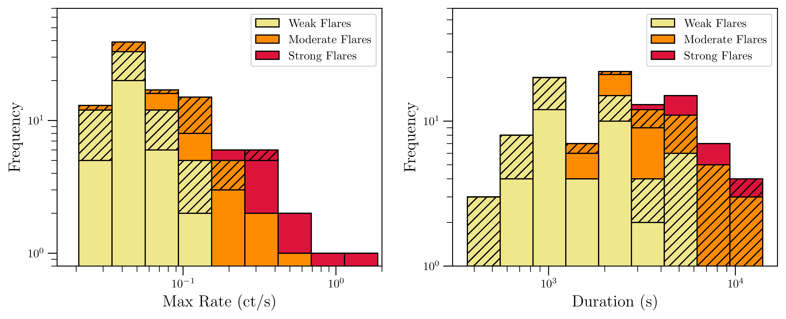
图注：Distributions of maximum count rate and duration. Hashed sections represent flagged flares, as described in Section \(\ref{sec:flagging}.\) \(\textit{Top}\): The distribution of maximum count rates shows that bright flares are significantly less common than weak ones. \(\textit{Bottom}\): Unflagged flares appear to be 100s to 1000s of seconds long, and strong flares have longer durations. Most flagged flares are long in duration, likely because Bayesian Blocks overestimates the duration when it is less clear where the change points are.
对应解读：对应“建议重点查看的图表”第3项和“关键图表逐图导读”图3：目录参数分布，包括峰值计数率和持续时间分布。
入选理由：该图给出最大计数率和持续时间的总体分布，并用 hashed 区域标出 flagged flares，能直观看到弱耀发多、强耀发少，以及长持续时间事件中系统性不确定较多。它支撑日报对低端截断、强耀发长尾和持续时间估计偏差的说明。
来源与置信度：\(arxiv_source\)；high；\(arxiv_source\) / sample701.tex:figure[4]
Fig05
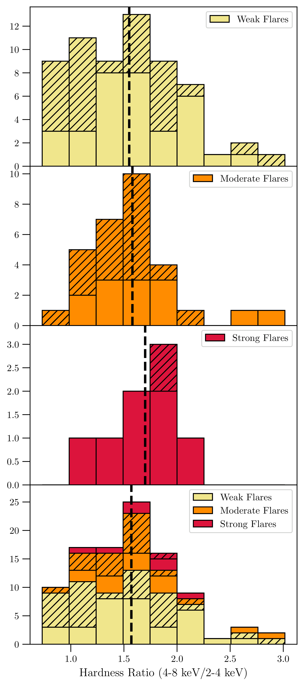
图注：Distributions of the 4--8~keV/2--4~keV hardness ratio (HR) for weak (top), moderate (top middle), strong (bottom middle), and all (bottom) flares. Hashed sections represent flagged flares, as described in Section~\(\ref{sec:flagging}.\) The HRs are roughly normally distributed, with slightly larger mean HR for strong flares than weak ones (black dashed lines). This indicates that the proportion of high energy photons changes between strength classes.
对应解读：对应“建议重点查看的图表”第4项和“关键图表逐图导读”图4：硬度随耀发强度变化的观测诊断。
入选理由：该图按弱、中、强耀发分组展示 4–8 keV/2–4 keV 硬度比分布，能从计数硬度层面独立支持亮耀发更硬的结论。虽然不如 Fig02 的 Γ–光度关系直接，但它有助于检查该趋势是否只来自谱拟合假设。
来源与置信度：\(arxiv_source\)；high；\(arxiv_source\) / sample701.tex:figure[5]
Fig08
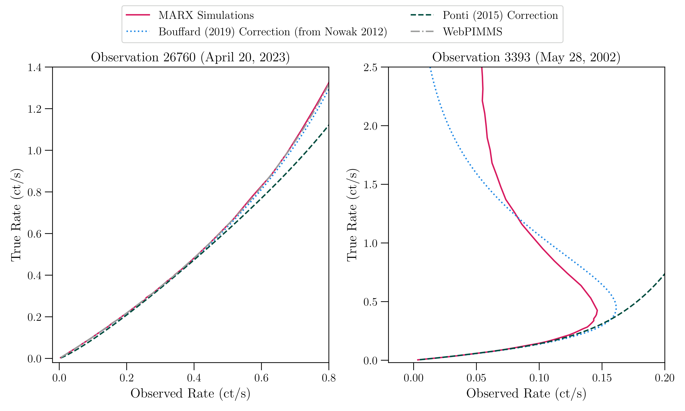
图注：Pileup corrections for two example observations. We use \(\texttt{MARX}\) to calculate a true flux (pileup corrected) for every observed flux. \(\textit{Left}\): Observation 26760 was captured 24 years into \(\textit{Chandra}\)'s lifetime, on the ACIS-S instrument with no grating and a 0.4~s/frame exposure time. Its pileup is relatively minor, and our correction (solid pink) agrees with treatments proposed by \(\citet{Bouffard2019},\) \(\citet{Nowak2012},\) and \(\citet{Ponti2015}.\) (\(\texttt{WebPIMMS}\) is an online tool to convert \(\textit{Chandra}\) count rates to physical units, and correct for pileup\footnote{https://cxc.harvard.edu/toolkit/pimms.jsp}). \(\textit{Right}\): Observation 3393 was captured on 2002 May 28, with the ACIS-I instrument, no grating, and a 3.1~s/frame exposure time. It exhibits burn-out turnover, where large true fluxes appear as low observed fluxes because the detector incorrectly discards piled photons that it believes are errors. Burn-out can be visually identified in images as well. \(\citet{Bouffard2019}\) and \(\citet{Ponti2015}\) do not have \(\textit{Chandra}\) mission lifetime dependent corrections, and therefore do not always agree with our pileup corrections.
对应解读：对应“建议重点查看的图表”第5项、第8项和“模型拟合”中关于 pile-up、仪器响应随时间变化、强耀发系统误差的讨论。
入选理由：这张图展示 pileup 校正如何把观测通量映射到真实通量，并给出不同观测模式下 burn-out turnover 的例子。它对极亮耀发的光度估计、高端尾部统计和亮度—硬度关系的系统误差评估很关键，尤其适合支撑日报中对强耀发可靠性的提醒。
来源与置信度：\(arxiv_source\)；high；\(arxiv_source\) / sample701.tex:figure[8]
强相关工作
这篇工作延续了 Sgr A X 射线耀发长期监测的传统。早期 Chandra 和 XMM-Newton 研究建立了耀发存在、持续时间和光度范围的基本图像；NuSTAR 后来把能段扩展到硬 X 射线，有助于约束高能谱尾；Swift 和其他监测则提供更高 cadence 但角分辨率和灵敏度不同的数据。本文的独特价值在于把钱德拉 25 年高角分辨率观测统一成一个目录，适合与这些工作交叉校验。建议检索关键词："Sgr A X-ray flares Chandra catalog", "Sagittarius A flare luminosity distribution", "Sgr A NuSTAR X-ray flare spectrum"。
理论上，相关工作主要围绕同步辐射、同步自康普顿、磁重联、湍流加速和辐射低效吸积流中的非热电子。亮度—硬度关系会挑战简单的固定谱形缩放模型，而支持随事件强度变化的粒子加速效率或冷却条件。也存在潜在张力：近红外耀发更频繁且谱行为复杂，并非每次近红外事件都有 X 射线对应体；因此多波段模型必须同时解释 X 射线的稀有强耀发和近红外的高发生率。建议检索关键词："Sgr A infrared X-ray flare correlation", "magnetic reconnection Sgr A flares", "nonthermal electrons radiatively inefficient accretion flow"。
相似工作：
- https://arxiv.org/abs/2605.13962
- https://arxiv.org/pdf/2605.13962
基础理论 / 方法工作：
- https://ui.adsabs.harvard.edu/search/q=Sgr%20A%20X-ray%20flares%20Chandra%20catalog
- https://ui.adsabs.harvard.edu/search/q=Sagittarius%20A%20X-ray%20flare%20luminosity%20distribution
- https://ui.adsabs.harvard.edu/search/q=Sgr%20A*%20NuSTAR%20X-ray%20flare
相反观点 / 张力线索：
- https://ui.adsabs.harvard.edu/search/q=Sgr%20A%20infrared%20X-ray%20flare%20correlation
- https://ui.adsabs.harvard.edu/search/q=Sgr%20A%20magnetic%20reconnection%20flare%20model
- https://ui.adsabs.harvard.edu/search/q=Sgr%20A*%20synchrotron%20self-Compton%20X-ray%20flares
7. Significant or Not? The Impact of Randomisation During Data Reduction on Confirming a New Pulsating Ultraluminous X-ray Source Candidate in Centaurus A
- 来源：arXiv / astro-ph.HE
- 链接：https://arxiv.org/abs/2605.15137v1
- 作者：Amy H. Knight, Timothy P. Roberts, Callum Potter, Alistair T. Pagan, Dominic J. Walton
- 评分：novelty 8/10，importance 7/10，relevance 8/10，final 8.65/10
- 推荐理由：Reports a candidate transient PULX in Cen A and, importantly, demonstrates how XMM-SAS randomisation can create false positives/negatives in marginal pulsation searches. Useful for high-energy timing analyses even if the source claim is not yet secure.
中文题目：显著还是不显著？数据处理中的随机化如何影响半人马座 A 新候选脉冲超亮 X 射线源的确认
做了什么：这篇论文报告了半人马座 A（NGC 5128）中一个新的候选脉冲超亮 X 射线源 4XMM J132542.2-425943。它在 2014 年出现约 8 个月的主要爆发，峰值 X 射线流量超过 10^{-12} erg cm^{-2} s^{-1}，若按半人马座 A 距离换算已接近或进入超亮 X 射线源量级；2017 和 2024 年还有较弱探测，其余时间基本处于宁静态。作者在 2014 年 XMM-Newton 数据中搜索周期信号，在一个观测中发现约 1.27 Hz 的相干近正弦脉动，脉冲分数约 15–17%，频率导数约 4×10^{-9} Hz s^{-1}，但统计显著性只属边缘。
论文的重点不只是“发现一个候选 PULX”，而是指出 XMM-Newton SAS 数据处理中的内禀随机化会显著改变边缘周期信号的功率和显著性。对同一份观测重复处理，候选脉动可能在不同迭代中变成看似显著、边缘显著或消失。这意味着在 PULX 搜索中，标准数据处理流程本身可能制造假阳性和假阴性，尤其影响低计数率、弱脉冲分数、强背景或窗口函数复杂的数据。
为什么重要：PULX 是中子星以超爱丁顿表观光度吸积的关键样本，直接关系到强磁场中子星吸积、几何准直、辐射转移和 ULX 族群组成。新候选源位于近邻椭圆星系半人马座 A，而且表现为瞬变源，这使它可与银河系 Swift J0243.6+6124 这类瞬变 PULX 类比。但它的软 X 射线谱又不同于多数已知 PULX 在 10 keV 以下偏硬的谱形，因此若确认，将扩展 PULX 的光谱和瞬变行为参数空间。
更重要的是，论文把注意力放在周期搜索的“数据处理随机性”上。许多 PULX 候选的确认依赖边缘显著的相干脉动；如果一次 SAS reduction 的随机化就能改变结论，那么过去和未来基于单次处理结果的弱信号声明都需要更严格的稳健性检查。
理论 / 观测 / 仪器方法价值：对观测而言，这篇文章提供了一个半人马座 A 中值得继续监测的瞬变 PULX 候选体，并给出了其长期光变、爆发行为、软谱特征和可能的 1.27 Hz 脉动参数。对方法而言，它强调高能时域分析不能把 pipeline 输出视为确定量，尤其在事件位置、时间分配、坏像素处理或随机化步骤会影响周期功率时，应重复 reduction、固定随机种子或传播数据处理不确定性。
对理论而言，如果该源最终被确认为 PULX，它将挑战“PULX 通常硬谱”的经验图像，可能提示不同磁场、视角、吸积柱结构、再处理风或伴星环境。对仪器和归档数据使用而言，论文提醒研究者：在 XMM-Newton 这类具有复杂仪器响应和软件处理链的任务中，弱周期信号的显著性不仅是泊松噪声问题，也是 reduction 过程定义的问题。
为什么应该关注：如果你关心 ULX 的物理本质，这篇文章给出一个可能的新中子星 ULX，并且它不像典型 PULX 那样硬，这可能是扩展样本空间的线索。如果你做 X 射线时域或周期搜索，这篇文章更值得关注：它说明同一份 XMM 数据在标准流程重复处理后，边缘脉冲信号的显著性会漂移，进而改变“确认”或“否定”候选源的判断。
这不是一个只关乎单个源的小问题。未来 eROSITA、XMM、Chandra、NuSTAR、Einstein Probe、Athena 等数据中都会有大量低信噪比瞬变源和候选周期信号。如何把 pipeline 随机性纳入显著性评估，将直接影响新 PULX、X 射线脉冲星、磁星爆发、紧凑双星和其他弱周期源的发现可靠性。
展开详细解读：文章讲解、背景、理论、重点章节、图表与相关工作
文章详细讲解
科学问题：作者想回答两个相互关联的问题。第一，半人马座 A 中的 4XMM J132542.2-425943 是否是一个新的脉冲超亮 X 射线源候选体？第二，在一个只有边缘显著性的周期信号上，XMM-Newton 标准数据处理过程中的随机化是否足以改变科学结论？前者关系到 PULX 样本扩展，后者关系到整个弱脉冲搜索方法的可靠性。
作者怎么做：他们从长期 X 射线归档数据中识别 4XMM J132542.2-425943 的瞬变行为，发现该源主要在 2014 年约 8 个月内显著爆发，峰值流量超过 10^{-12} erg cm^{-2} s^{-1}，之后只在 2017 和 2024 年有较弱探测。作者分析了 2014 年 XMM-Newton 观测的光谱和时域性质，特别在 ObsID 0724060801 中搜索相干脉动，找到频率约 1.27 Hz 的近正弦信号，并估计脉冲分数和频率导数。随后，他们并未只报告一次 reduction 的周期图，而是重复运行 XMM-SAS 数据处理，检查软件内部随机化对事件表和周期搜索结果的影响。
关键结果：该源的长期行为类似已知瞬变 PULX，如 Swift J0243.6+6124 这类爆发时进入超亮状态的吸积中子星系统。但 4XMM J132542.2-425943 的 X 射线谱偏软，这一点使它不同于多数已知 PULX 在 10 keV 以下的硬谱表现。周期搜索中，1.27 Hz 信号的脉冲分数约 15–17%，频率导数约 4×10^{-9} Hz s^{-1}，但显著性并不稳固。重复 reduction 后，信号强度可在不同迭代间显著变化；这意味着同一个候选体可能在某次处理后看起来值得宣布，在另一次处理后又达不到阈值。
局限和下一步：论文没有把该源定性为已确认 PULX，而是谨慎称为候选体，因为脉动显著性边缘、随机化效应显著，且目前缺少独立观测中重复探测到的相干周期。下一步最关键的是在新的爆发中进行高时间分辨率跟踪，最好联合 XMM-Newton、NICER、NuSTAR 或未来任务，以确认 1.27 Hz 周期、测量自旋演化、得到宽能段光谱，并检查脉冲分数是否随能量变化。同时，PULX 搜索流程需要把多次 reduction、固定随机种子、注入恢复实验和多重试验修正作为标准步骤。
背景知识
研究对象是超亮 X 射线源（ULX）和其中的脉冲子类 PULX。ULX 通常定义为非核点源、表观 X 射线光度超过约 10^{39} erg s^{-1}。在早期，ULX 常被讨论为中等质量黑洞候选；但随着 M82 X-2、NGC 7793 P13、NGC 5907 ULX-1、NGC 300 ULX1 等系统发现相干脉动，人们确认至少一部分 ULX 是中子星吸积系统。PULX 的存在迫使理论解释中子星如何在强磁场、辐射压和几何准直共同作用下达到远超经典爱丁顿极限的表观光度。
历史上，PULX 的确认门槛很高：必须在 X 射线光变中看到可信的相干周期，并且排除窗口函数、背景、仪器效应和统计偶然。问题是，PULX 脉动常常不是持续可见的，脉冲分数可随能量、吸积态、视角和散射环境改变；有些源只在部分观测中出现可探测脉动。瞬变 PULX 更麻烦，因为爆发窗口短，归档数据稀疏，光度、谱形和时域行为都可能在一次爆发中快速变化。
为什么现在值得重新看？一方面，近年归档数据足够长，半人马座 A 这样的近邻星系有多次 XMM-Newton、Chandra 等观测，可用于寻找多年尺度瞬变。另一方面，天文学界越来越重视弱信号统计和 pipeline 系统误差：在边缘显著性附近，软件默认选项、事件随机化、barycentric correction、GTI 选择、背景过滤都可能影响结果。本文正是把一个具体 PULX 候选与 reduction 随机性问题结合起来。
该领域常见误区之一是把“某次周期图上超过阈值的峰”直接等同于天体物理脉动。事实上，周期搜索涉及多重频率试验、频率导数试验、能段选择、孔径选择、时间筛选等隐含试验。另一个误区是认为 reduction 完成后事件列表是唯一确定的数据产品；对于 XMM-SAS 这类流程，某些随机化步骤可能导致低计数率源的事件相位分配发生足以影响周期功率的微小改变。第三个误区是用 ULX 的光谱硬软直接判断是否为 PULX；已知样本存在选择效应，软谱 PULX 可能更难通过传统脉冲搜索被确认。
基础理论 / 方法脉络
PULX 的核心物理图像是：一个中子星从伴星或盘中吸积物质，吸积流在磁层半径附近被中子星磁场截断，并沿磁力线落到磁极附近形成热点或吸积柱。随着中子星自转，热点辐射被周期性调制，观测者看到相干 X 射线脉动。若吸积率足够高，盘风、散射包层和几何准直会改变表观光度和脉冲可见性，使系统看起来像 ULX。
关键可观测量包括 X 射线流量、由距离换算的光度、能谱形状、脉冲频率、脉冲分数、频率导数以及长期爆发占空比。本文中的候选信号频率约 1.27 Hz，对应自转周期约 0.79 s；正的频率导数若真实，通常表示吸积扭矩使中子星自旋加快。脉冲分数约 15–17% 属于可探测但不算极高的水平，因此很容易受计数统计、背景、相位抹平和处理随机性的影响。
观测方法上，XMM-Newton EPIC 数据需要经过事件筛选、时间校正、源区/背景区提取、坏时间区间过滤、能段选择和太阳系质心校正。周期搜索可使用 Rayleigh/\(Z^2_n\) 检验、epoch folding、Lomb-Scargle 或加速搜索。对于吸积中子星，若观测时间足够长，自旋频率在观测中可能因扭矩或轨道多普勒效应发生漂移，因此只搜索固定频率可能降低功率，需要在频率和频率导数空间同时搜索。
退化关系和系统误差很关键。频率导数可由真实自旋演化、双星轨道加速度、时间校正误差或数据间断造成的相位漂移共同贡献；软谱可以来自内禀吸积态，也可以来自吸收、背景扣除、源混叠或散射再处理。脉冲分数低时，背景估计、提取半径、事件时间随机化和仪器时间分辨率都会改变周期图峰值。本文的核心方法价值就在于把这些流程层面的不确定性显式展示出来。
公式与推导
从观测流量到源光度，基本关系是各向同性等效光度：
其中 \(L_{\rm X}\) 是 X 射线光度，\(d\) 是源距离，\(F_{\rm X}\) 是观测到的能带流量。对半人马座 A 这样的近邻星系，距离相对明确，因此峰值流量超过 \(10^{-12}\,{\rm erg\,cm^{-2}\,s^{-1}}\) 可直接判断其是否接近 ULX 量级。若辐射存在准直，则这里的 \(L_{\rm X}\) 是表观各向同性等效值，而不一定等于真实总辐射功率。
周期信号最简单可写成近正弦调制：
其中 \(r(t)\) 是观测计数率，\(\bar r\) 是源的平均计数率，\(a\) 是源本征调制幅度，\(f\) 是脉冲频率，\(\phi_0\) 是初相位，\(b\) 是背景计数率。论文报告的 \(f\simeq1.27\,{\rm Hz}\)，对应周期
如果背景未被正确处理，观测到的调制幅度会被 \(b\) 稀释。
脉冲分数常用最大最小计数率定义或正弦幅度定义。对正弦情形，一个常用近似是：
这里 \(PF\) 是观测脉冲分数，\(r_{\max}\) 和 \(r_{\min}\) 是折叠脉冲轮廓的峰值和谷值。本文得到 \(PF\approx15\%-17\%\)，说明信号不是极弱，但在有限计数和背景存在时仍容易落在显著性边界附近。
若频率随时间线性变化，相位模型为：
其中 \(f_0\) 是参考时刻 \(t_0\) 的频率，\(\dot f\) 是频率导数。若忽略真实 \(\dot f\)，相位误差会随时间二次增长，长观测中的周期功率会被抹平。论文给出 \(\dot f\sim4\times10^{-9}\,{\rm Hz\,s^{-1}}\)，若为真实吸积扭矩，可表示自旋加速。
周期搜索显著性常可用 Rayleigh 或 \(Z^2_n\) 统计量表达，例如单谐波 Rayleigh 功率：
其中 \(N\) 是事件数，\(\phi_j\) 是第 \(j\) 个光子的脉冲相位。在纯噪声和理想条件下，\(Z^2_1\) 近似服从 \(\chi^2\) 的 2 自由度分布。但实际搜索跨越许多频率、频率导数、能段和 reduction 迭代，单次试验概率必须修正为多重试验后的假警报概率。
模型拟合 / 应用方法
这类工作的模型拟合分为三层。第一层是光谱和流量拟合：从 XMM-Newton 事件中提取源谱和背景谱，使用吸收幂律、黑体、多色盘或经验 ULX 谱模型拟合，得到吸收柱密度、谱斜率或温度、能带流量和不吸收修正光度。对本文候选源，软谱是重要特征，因此需要特别关注吸收柱密度与软成分温度/谱斜率之间的退化，以及背景和邻近源污染是否会人为软化谱。
第二层是时间模型拟合：周期搜索先在频率、可能的频率导数空间寻找功率峰，再用折叠轮廓拟合正弦或多谐波模型，估计频率、\(\dot f\)、脉冲分数和相位。似然可以基于事件相位的 Poisson likelihood，也可以基于 binned profile 的 \(\chi^2\) 或 C-stat。对低计数源，事件级非分箱方法通常更稳健。残差应检查是否存在非正弦结构、相位漂移、背景 flare 残留或仪器周期。
第三层是显著性和稳健性评估。理想流程应包括：空白场或背景区周期搜索、相同窗口函数下的噪声模拟、注入不同脉冲分数的模拟信号并恢复、跨能段和探测器一致性检查、固定随机种子与多次随机种子 reduction 的比较。本文强调的系统误差正来自这一层：XMM-SAS 内部随机化会导致同一观测在重复处理后得到不同的周期功率。因此后验或显著性不应只条件在单个 reduction 上，而应边缘化或至少报告 reduction-to-reduction scatter。
实际应用中，若某候选峰只在个别 reduction、个别能段、个别筛选条件下显著，而在多数合理处理下消失，应谨慎称为候选而非确认。相反，若真实信号因某次随机化或筛选被削弱，也不应简单丢弃。对本文源，合理结论是“有天体物理动机强、但周期证据边缘的 PULX 候选”，而不是已确认的 PULX。
重点章节 / 结果段落怎么读
-
数据和源识别：读者应先看作者如何从半人马座 A 的长期 X 射线观测中定位 4XMM J132542.2-425943，如何确认它是点源而非弥散结构或背景涨落，以及 2014、2017、2024 年探测与非探测的时间分布。这里关系到瞬变源身份是否可靠。
-
长期光变和光度估计：重点看峰值流量、爆发持续时间、宁静态上限和距离假设。若峰值表观光度接近或超过 ULX 阈值，则它才有资格进入 PULX 候选讨论。还要检查不同仪器之间的交叉定标和能带换算。
-
光谱分析：这部分应关注作者为何认为该源谱偏软，以及这种软谱是否对吸收、背景、模型选择敏感。因为“软谱 PULX 候选”是本文相对新颖的天体物理结果之一，读者需要判断它是物理特征还是数据处理/统计造成的表观特征。
-
周期搜索方法：这是论文核心。应详细看频率范围、频率导数搜索范围、时间校正、能段选择、源区选择、试验因子如何计算，以及 1.27 Hz 信号在哪个观测、哪个探测器或能段中出现。边缘显著信号最容易受到分析自由度影响。
-
XMM-SAS 随机化影响：这是最值得精读的方法段落。读者应看作者如何重复 reduction、比较不同迭代的周期功率、定义假阳性/假阴性，以及这些变化是否足以跨过常用显著性阈值。该部分的结论可推广到许多 XMM 弱周期搜索。
-
讨论和结论：最后看作者如何平衡候选源的天体物理吸引力与统计谨慎性。他们是否提出后续观测策略，是否建议社区修改 PULX 搜索流程，以及是否对既有边缘 PULX 候选提出重新评估的必要。
建议重点查看的图表
-
长期 X 射线光变图：应检查横轴时间、纵轴流量或光度，2014 年爆发是否连续、持续约 8 个月，以及 2017/2024 弱探测是否显著高于上限。注意不同仪器能带和灵敏度差异。
-
X 射线图像或源定位图：应查看 4XMM J132542.2-425943 与半人马座 A 核区、弥散喷流、邻近点源的相对位置。关键是源提取区域是否受复杂背景或源混叠影响。
-
光谱拟合图：看数据点、模型线和残差，尤其软能段是否主导拟合，硬能段是否缺少计数。若残差系统性偏离，软谱结论可能依赖模型选择。
-
周期功率谱或搜索图：重点看 1.27 Hz 峰相对于噪声分布、试验修正阈值和邻近频率结构。还要看是否存在与仪器或窗口函数相关的伪峰。
-
折叠脉冲轮廓：检查相位横轴、计数率纵轴、正弦拟合线和误差条。15–17% 脉冲分数是否由少数相位 bin 驱动？轮廓是否稳定？
-
频率–频率导数搜索平面：如果论文提供，应查看最高功率区域是否紧凑、是否存在多个相近局部峰，以及 \(\dot f\) 的置信区间是否宽到足以包含零或轨道效应。
-
重复 reduction 的显著性分布图：这是方法结论的关键诊断。应看同一数据多次处理后峰值功率或假警报概率的分布宽度，是否跨越常用 3σ 或其他阈值。
-
注入恢复或假信号诊断：若有，应查看给定脉冲分数和计数率下真实信号的恢复率，以及纯噪声情况下假阳性率。它直接决定该候选的可信程度。
关键图表逐图导读
图 1：长期光变图通常会以时间为横轴、流量或光度为纵轴，标出 XMM-Newton、Chandra 或其他任务的探测点和上限。读图时不要只看最高点，应看 2014 年爆发是否由多个相邻观测支持，以及非探测上限是否足够低以证明源确实瞬变。若不同点来自不同能带，需注意能谱假设带来的系统差异。
图 2：源场图或 X 射线图像应显示源位置、提取孔径、背景区域和可能的邻近结构。坐标轴通常为天球坐标，颜色表示计数或曝光修正后的强度。读图陷阱是半人马座 A 本身有复杂弥散 X 射线发射、喷流和大量点源；若背景区不代表局部背景，后续光谱和周期结果都可能受影响。
图 3：光谱拟合图通常上面板为计数谱及模型，下面板为残差或贡献 \(\chi\)。应检查软谱结论是否来自低能段高信噪比，还是硬能段计数太少导致模型不受约束。模型线之间若差异很小，说明物理解释可能不唯一；残差若在软端系统偏离，吸收柱密度或校准误差会影响结论。
图 4：周期功率谱或 \(Z^2\) 统计图应以频率为横轴、功率或显著性为纵轴，标出 1.27 Hz 候选峰和显著性阈值。读图时要确认阈值是否包含搜索频率数、\(\dot f\) 网格、能段选择等试验因子。边缘峰如果只是略高于局部噪声，不能等同于全局显著探测。
图 5：折叠脉冲轮廓以相位为横轴、背景扣除或未扣除计数率为纵轴，常叠加正弦模型。主要看误差条相对于调制幅度的大小，以及峰谷是否由多个相位 bin 一致支持。若轮廓近正弦且跨多个能段一致，可信度较高；若只有单个 bin 偏高，则可能是统计涨落。
图 6：重复 XMM-SAS reduction 的结果分布图可能以 reduction 次数或随机种子为横轴、候选峰功率/假警报概率为纵轴，或以直方图显示显著性分布。读图重点是分布是否跨越作者采用的确认阈值。若同一原始数据因随机化从“显著”变为“不显著”，那么该图比单次周期图更能决定论文结论。
论文原图 / 可嵌入图片
Fig10

图注：Top: Histograms showing the candidate pulsation frequencies and corresponding powers returned from all candidates when conducting 2500 data reduction iterations and performing $Z^{2}_{1}$ (green), $Z^{2}_{2}$ (blue) and $Z^{2}_{3}$ (red) searches of \(\textit{XMM-Newton}\) ObsID 0724060801, in the frequency range $1.21 - 1.31$ Hz. Bottom: Power distributions of the top candidates from the $Z^{2}_{2}$ (left) and $Z^{2}_{3}$ (right). The top candidate is always $1.269$ Hz for both the $Z^{2}_{2}$ and $Z^{2}_{3}$ searches. In both panels, the dashed and solid lines show the 90 per cent and 99.9 per cent statistical detection thresholds, respectively. For all 2D-histograms, the occurrence rate is the total number of times a candidate appears within each frequency or power bin across the 2500 iterations.
对应解读：对应“重复 reduction 的显著性分布图”和关键图表导读中的图 6；也直接对应模型拟合段落第三层的显著性和稳健性评估。
入选理由：这是本文方法结论最核心的诊断图：同一 ObsID 0724060801 在 2500 次 reduction 后，1.21–1.31 Hz 候选频段的候选功率分布被直接展示，并标出 90% 与 99.9% 检测阈值。它最清楚地说明 1.269 Hz 信号是否稳定跨越阈值，以及 XMM-SAS 随机化如何让边缘脉冲在显著与不显著之间变化。
来源与置信度：\(arxiv_source\)；high；\(arxiv_source\) / \(main_text.tex\):figure[10]
Fig11

图注：Folded pulse profiles and frequency-power spectra of the strongest and weakest candidates returned by the $Z^{2}_{2}$ (rows one and two; blue/green), $Z^{2}_{3}$ (rows three and four; red/orange) searches of \(\textit{XMM-Newton}\) ObsID 0724060801, in the frequency range $1.21 - 1.31$ Hz. The top candidate is always $1.269$ Hz and the dashed horizontal lines show the 99.9 per cent statistical detection threshold.
对应解读：对应“周期功率谱或搜索图”和“折叠脉冲轮廓”；也对应模型拟合段落中频率搜索、折叠轮廓和脉冲分数估计。
入选理由：这张图同时给出最强和最弱 1.269 Hz 候选的折叠脉冲轮廓与频率–功率谱，并标出 99.9% 阈值。它比单纯直方图更能让读者检查近正弦轮廓、误差/调制幅度，以及不同 reduction 下同一候选峰强弱变化对脉冲可信度的影响。
来源与置信度：\(arxiv_source\)；high；\(arxiv_source\) / \(main_text.tex\):figure[11]
Fig12
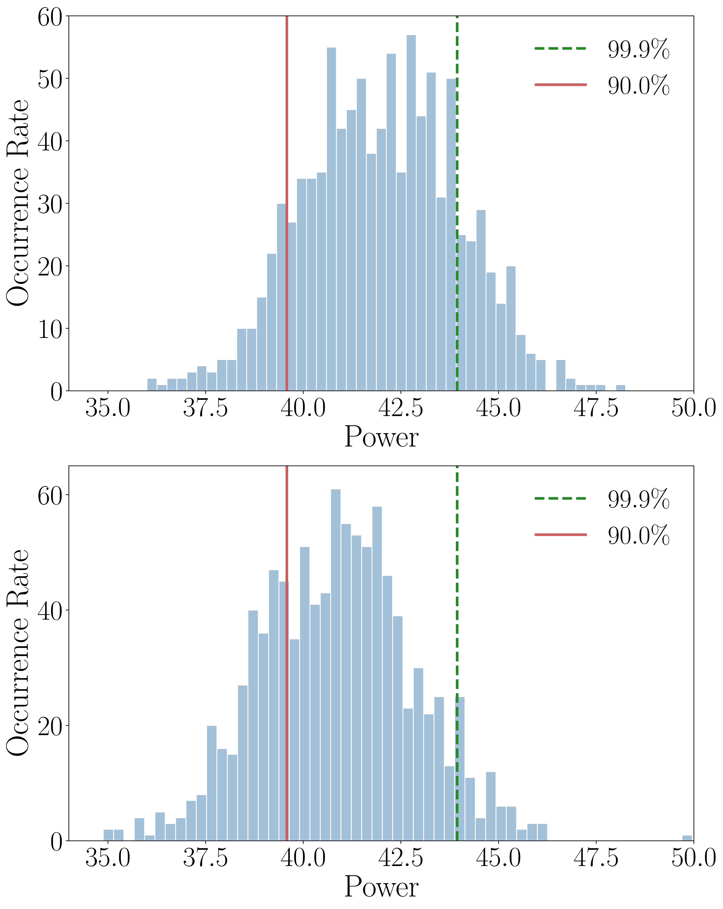
图注：Histograms showing the power distribution of the top (strongest) candidate from 1000 data reduction iterations (conducted separately from the main searches) and $Z^{2}_{3}$ searches of \(\textit{XMM-Newton}\) ObsID 0724060801, in the frequency range $1.20 - 1.30$ Hz (top) and $1.21 - 1.31$ Hz (bottom). Here, the occurrence rate is the total number of times a candidate appears within each power bin across the 1000 iterations.
对应解读：对应“重复 reduction 的显著性分布图”；用于支撑日报中关于不能只条件在单个 reduction 上报告显著性的讨论。
入选理由：Fig12 用独立于主搜索的 1000 次 reduction 展示 top candidate 的功率分布，并比较 1.20–1.30 Hz 与 1.21–1.31 Hz 搜索窗口。它特别适合说明显著性不仅受随机化影响，也受搜索频段定义影响，是论文关于假阳性/假阴性风险的关键证据。
来源与置信度：\(arxiv_source\)；high；\(arxiv_source\) / \(main_text.tex\):figure[12]
Fig03
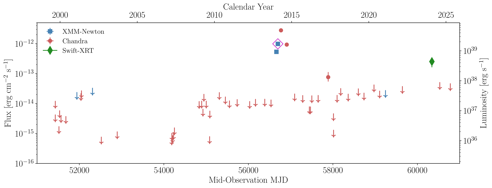
图注：Long term light curve of the candidate pulsating ultraluminous X-ray source, 4XMM J132542.2--425943. The source has undergone one bright outburst between January - September 2014, detected by both \(\textit{XMM-Newton}\) (squares) and \(\textit{Chandra}\) (circles). 4XMM J132542.2--425943 briefly brightened again in May 2017 and February 2024, the latter of which was captured by \(\textit{Swift-XRT}\) (diamond). The arrows represent $3~\sigma$ upper limits on the flux of 4XMM J132542.2--425943, converted using a photon power law index of $\Gamma = 3.5$, a Galactic absorption of $N_{\rm{H}}=$ 8.41 $\times 10^{20}$ atom cm$^{-2}$ and an additional absorption of $N_{\rm{H}} = 0.219 \times 10^{22}$ atom cm$^{-2}$ (consistent with the best-fitting spectral model of the fainter \(\textit{XMM-Newton}\) detection; see Section \(\ref{sx:properties}).\) Corresponding luminosities are determined assuming a distance of $3.8$ Mpc \(\citep{Harris2010}.\) The magenta diamond highlights the observation in which we detect marginal X-ray pulsations at $1.27$~Hz.
对应解读：对应“长期 X 射线光变图”和关键图表导读中的图 1。
入选理由：这张长期光变图直接展示 2014 年约 8 个月爆发、2017 和 2024 年较弱再亮，以及大量 3σ 上限；还用品红菱形标出探测到边缘 1.27 Hz 脉动的观测。它是判断该源是否具备瞬变 PULX 候选天体物理动机的基础图。
来源与置信度：\(arxiv_source\)；high；\(arxiv_source\) / \(main_text.tex\):figure[3]
Fig02

图注：Unfolded \(\textit{XMM-Newton}\) ObsIDs 0724060701 (left) and 0724060801 (middle) and \(\textit{Chandra}\) ObsID 16276 (right) spectra fit with the single-component model \(\texttt{tbabs(tbabs(powerlaw))}\) (top row) and the two-component model \(\texttt{tbabs(tbabs(diskbb+diskbb))}\) (bottom row). In each panel, the best-fitting total model is shown by the solid line and the residuals are shown in the lower segment. In the bottom row, the magenta dashed and blue dotted lines represent two \(\texttt{diskbb}\) model components. Note the \(\textit{XMM-Newton}\) panels show only the data and residuals from the EPIC-PN detector, but the plotted models were obtained through simultaneous spectral fitting to the data from all three EPIC detectors.
对应解读：对应“光谱拟合图”和关键图表导读中的图 3；也对应模型拟合段落第一层的光谱和流量拟合。
入选理由：Fig02 展示 XMM-Newton 与 Chandra 谱的单成分幂律和双 diskbb 模型拟合，并含模型线与残差。它能直接检验日报强调的软谱结论是否由低能段主导、硬能段计数是否不足，以及不同模型残差是否支持该源不同于典型硬谱 PULX。
来源与置信度：\(arxiv_source\)；high；\(arxiv_source\) / \(main_text.tex\):figure[2]
Fig01
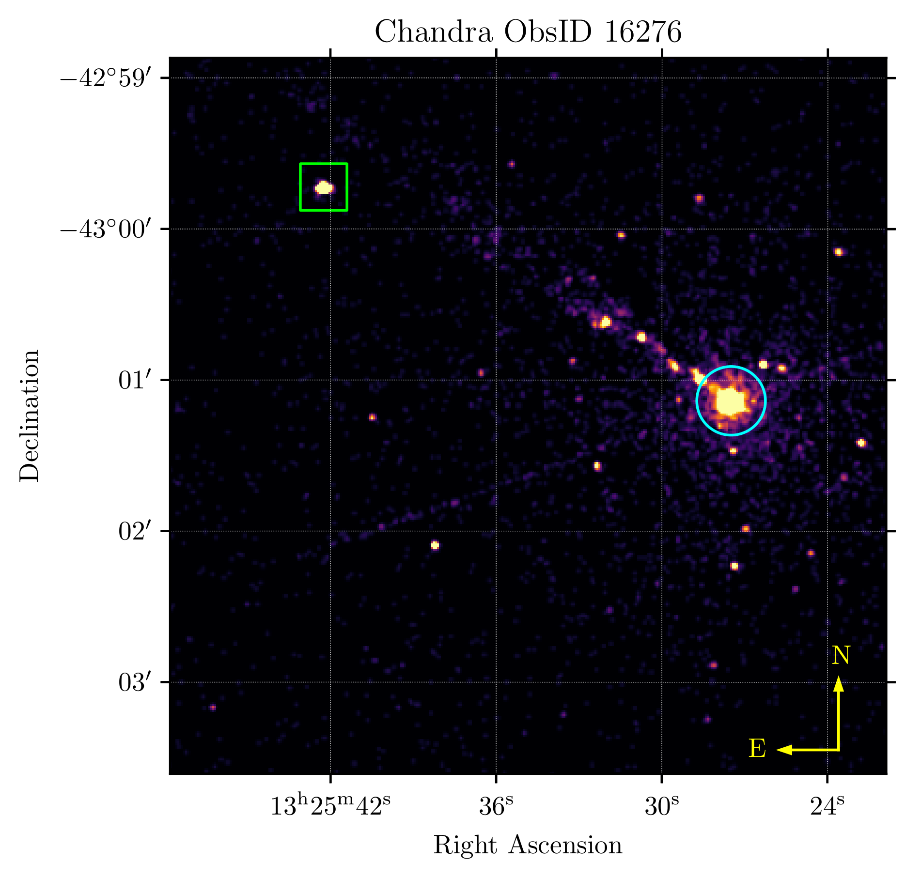
图注：The field of view of \(\textit{Chandra}\) ObsID 16276 in which our PULX candidate, 4XMM J132542.2--425943, is identifiable as an X-ray point source. The PULX candidate lies close to the axis of the jet emitted from the active nucleus of Centaurus A (South-West of 4XMM J132542.2--425943 in this image, circle).
对应解读：对应“X 射线图像或源定位图”和关键图表导读中的图 2。
入选理由：Fig01 给出 Chandra 视场中 4XMM J132542.2-425943 与半人马座 A 喷流轴及周围结构的相对位置。由于该区域存在核区、喷流和复杂弥散发射，这张图有助于评估源提取、背景选择和邻近结构污染对后续光谱与周期分析的潜在影响。
来源与置信度：\(arxiv_source\)；high；\(arxiv_source\) / \(main_text.tex\):figure[1]
强相关工作
这篇工作与已知 PULX 研究直接相关。M82 X-2 的发现证明 ULX 可以由中子星驱动；NGC 7793 P13、NGC 5907 ULX-1、NGC 300 ULX1 等系统进一步显示 PULX 可以有极高表观光度、快速自旋演化和复杂脉冲可见性。Swift J0243.6+6124 则是银河系内瞬变吸积中子星在爆发时达到 ULX 量级的关键参照。本文候选源的瞬变行为与这类系统相似，但软谱可能使它成为检验 PULX 样本选择效应的重要对象。建议检索关键词：pulsating ultraluminous X-ray source, PULX, Swift J0243.6+6124, NGC 5128 X-ray transient, Centaurus A ULX。
方法上，本文与高能天文弱周期搜索、XMM-Newton EPIC 时间分析和多重试验显著性评估相关。过去一些候选周期信号因为边缘显著、不可重复或受仪器效应影响而存在争议；本文将问题具体落到 XMM-SAS reduction 随机化，提醒研究者区分泊松噪声、窗口函数效应、处理随机性和真实相干脉动。建议检索关键词：XMM-SAS randomization, XMM-Newton timing analysis, Rayleigh test X-ray pulsations, Z squared test, false alarm probability, pulsation search systematics。
与潜在相反观点或张力相关的是：如果 1.27 Hz 信号不能在后续观测中重复出现，或者若随机化实验表明假阳性率过高，那么该源应保留为瞬变 ULX/高光度 X 射线瞬变，而非 PULX。另一方面，若未来爆发中确认相同或演化一致的自旋周期，它将反过来说明本文的谨慎处理避免了过早宣布，同时也保留了一个真实候选。
相似工作：
- https://arxiv.org/abs/1410.3590
- https://arxiv.org/abs/1603.05083
- https://arxiv.org/abs/1810.10966
- https://arxiv.org/abs/1710.04976
基础理论 / 方法工作：
- https://arxiv.org/abs/1408.1868
- https://arxiv.org/abs/1705.10727
- https://arxiv.org/abs/1702.02057
相反观点 / 张力线索：
- https://arxiv.org/abs/2605.15137
8. Rapid and robust simulation-based inference for kilonovae
- 来源：arXiv / astro-ph.HE
- 链接：https://arxiv.org/abs/2605.13983v1
- 作者：Stephanie M. Brown, Mattia Bulla, Hiranya V. Peiris, Nikhil Sarin, Daniel Mortlock, Stephen Thorp, Gurjeet Jagwani, Stephan Rosswog
- 评分：novelty 8/10，importance 8/10，relevance 7/10，final 8.65/10
- 推荐理由：Simulation-based inference framework for kilonova parameter estimation is a useful, reusable method for rapid multimessenger transient analysis, with clear relevance to GW/EM follow-up even if not specifically gamma-ray astronomy.
中文题目：用于千新星的快速、稳健模拟型推断
做了什么：这篇论文把 simulation-based inference（SBI，模拟型/似然自由推断）引入千新星参数估计：作者用 POSSIS 辐射转移程序生成约 1300 个千新星模型，再训练高斯过程 emulator，并在此基础上训练密度估计型神经后验推断框架。核心结论是：在模拟数据上，SBI 能恢复注入参数并给出与观测一致的后验预测光变；而传统基于近似高斯似然和 MCMC 的方法会因为 emulator 不确定性非高斯、跨波段/跨时刻相关而产生系统偏差。对 AT2017gfo 的应用中，SBI 和 MCMC 的光变预测相近，但参数后验差异明显，部分 MCMC 后验堆在先验边界。训练完成后，SBI 可在数秒内生成约 2 万个后验样本，适合未来引力波—电磁对应体快速跟进。
为什么重要：下一代引力波探测器和时域巡天会把千新星候选体数量、预警频率和数据维度都推高。千新星辐射转移模型昂贵，传统 MCMC 不仅慢，还常把 emulator 误差简化成独立高斯误差；这在模型不确定性、观测稀疏性和多波段相关误差都很强的千新星问题中可能给出看似精确但偏的参数。本文重要之处在于，它不是单纯加速 MCMC，而是直接学习从模拟到数据再到参数后验的映射，把前向模型不确定性纳入训练分布，从而更接近真实分析链条。
理论 / 观测 / 仪器方法价值：对方法学的价值是给千新星提供了一个可复用的快速后验生成框架，尤其适用于有昂贵辐射转移模拟、emulator 和复杂误差结构的问题。对观测的价值在于，未来多信使事件需要在小时到天的尺度上决定后续望远镜资源分配，秒级 posterior sampling 可以让参数估计从离线论文分析变成实时决策工具。对理论的价值在于，它暴露了传统似然设定对 ejecta 质量、速度、组分、视角等参数后验的影响，提醒我们不要把模型预测光变拟合得好等同于物理参数可信。
为什么应该关注：如果你关心双中子星并合、r-process 元素起源、H0 多信使宇宙学或 Rubin/ELT/Einstein Telescope 时代的快速暂现源分类，这篇文章都值得看。它说明未来瓶颈不只是“有没有足够好的辐射转移模型”，还包括“我们如何从模型不完美的数据中做统计推断”。尤其值得关注的是：SBI 与 MCMC 可能给出相近光变预测却给出不同物理后验，这直接影响我们如何解释 AT2017gfo 类事件的喷出物结构和核合成产额。
展开详细解读：文章讲解、背景、理论、重点章节、图表与相关工作
文章详细讲解
科学问题：千新星光变包含喷出物质量、速度、镧系元素丰度、几何结构和观测视角等信息，但这些信息通过高维、非线性、带强退化的辐射转移过程映射到多波段光变。POSSIS 这类蒙特卡洛辐射转移模拟很昂贵，无法在 MCMC 中直接调用百万次；因此实际工作通常训练 emulator，再构造近似似然。然而 emulator 的预测误差往往不是独立高斯噪声，而是随时间、波段、参数位置相关，甚至呈非高斯分布。本文要解决的核心问题是：当似然形式本身可能错设时，如何快速、稳健地从千新星数据中推断物理参数。
作者怎么做：他们用约 1300 个 POSSIS 辐射转移模拟训练高斯过程 emulator，使其能在给定千新星物理参数时快速预测多波段光变及其预测不确定性。随后构建 density-estimation likelihood-free inference 类型的 SBI 框架：不是显式写出一个观测数据在参数下的高斯似然，而是从先验抽取参数、通过 emulator 的完整预测分布生成模拟观测，再训练神经密度估计器学习后验分布。这样，emulator 的非高斯、相关不确定性原则上被包含在训练样本的生成过程中，而不是在似然里被人为压缩成对角协方差。
关键结果：在模拟注入实验中，SBI 能恢复真实参数，且 posterior predictive light curves 与输入数据一致；相对地，使用近似似然的 MCMC 后验出现系统偏差。对真实事件 AT2017gfo，SBI 与 MCMC 对光变本身的预测都能给出相似拟合，但参数空间中的后验形状明显不同，MCMC 某些参数甚至堆在先验边界。这是一个重要警告：光变拟合好并不保证参数推断无偏，因为不同参数组合和不同误差模型可以产生相近的观测预测。
局限和下一步：本文的可靠性仍然受限于 POSSIS 模型族、训练模拟数量、先验范围、emulator 表达能力和 AT2017gfo 数据处理方式。SBI 学到的是“在给定前向模拟和训练数据生成机制下”的后验，不会自动修复辐射转移物理缺失、核加热率不确定性、不透明度表误差或潜在 afterglow/宿主星污染。下一步应包括扩大模拟网格、加入更灵活的多组分/非轴对称喷出物、与引力波参数联合推断、做覆盖率校准和跨代码比较，并在真实快速预警场景中测试端到端性能。
背景知识
千新星是双中子星或中子星—黑洞并合后富中子物质抛射产生的热暂现源。其光度来自 r-process 放射性衰变加热，颜色和演化速度主要受喷出物质量、速度和不透明度控制。AT2017gfo 是 GW170817 的电磁对应体，也是迄今约束最强的千新星；它展示了早期蓝色分量和较晚红色/近红外分量，使多组分喷出物模型成为主流解释之一。
历史上，千新星参数估计常在简化半解析模型和昂贵辐射转移模型之间权衡。半解析模型快，便于 MCMC 或 nested sampling，但几何、谱线不透明度和观测角效应处理粗糙；蒙特卡洛辐射转移更物理，但计算成本高。于是大量研究采用 emulator：先用有限模拟训练插值器，再在贝叶斯推断中快速调用。这条路线的隐含假设是 emulator 误差可以被一个简单似然捕捉，但这在多波段光变问题中并不总成立。
现在值得重新看这个问题，是因为下一代引力波探测器、Rubin/LSST、Roman、ULTRASAT 以及地面快速跟进网络会带来更高事件率和更复杂的数据流。单个事件的离线 MCMC 可以跑几天，但候选体筛选、望远镜排程和联合 GW-EM 参数估计需要分钟到小时尺度的结果。另一方面，数据量增加会让系统误差而非统计误差成为主导，似然错设导致的偏差会变得更显著。
该领域常见误区包括：第一，把“光变曲线看起来拟合很好”当成“喷出物参数可信”；第二，把 emulator 的点预测当成真实辐射转移模型，忽略插值误差的相关结构；第三，认为 SBI 只是更快的 MCMC。实际上 SBI 改变的是统计建模对象：它通过前向模拟学习后验，适合没有可写解析似然或似然明显错设的问题，但其结果仍受训练分布和模拟物理真实性限制。
基础理论 / 方法脉络
千新星的基本物理图像是：并合后抛出的富中子物质以亚相对论速度膨胀，r-process 核素衰变释放热能，光子在膨胀介质中扩散并最终逃逸。喷出物质量越大，扩散时间越长、峰值更晚；速度越高，半径增长更快、扩散时间缩短；镧系元素丰度越高，不透明度越大，光变更红、更慢。观测角会通过非球对称几何改变蓝/红分量的相对贡献。
辐射转移模型如 POSSIS 通常以给定喷出物几何、质量、速度、组成和视角为输入，计算多波段随时间的绝对星等或通量。由于完整模拟昂贵，论文使用高斯过程 emulator 在离散模拟网格之间插值。高斯过程不仅给出平均预测，还给出预测协方差；但在高维、多输出、多波段时间序列问题中，这个协方差结构可能很复杂，若强行把每个数据点误差写成独立高斯，会低估或错估不确定性。
SBI 的观测方法逻辑是：定义一个前向生成器，先从先验抽取物理参数，再通过 emulator 和观测噪声生成模拟数据，最后训练神经网络近似条件密度，例如后验 \(p(\theta|x)\)。这里 \(\theta\) 是千新星参数，\(x\) 是光变数据向量。与显式似然推断相比，SBI 不要求写出 \(p(x|\theta)\) 的解析形式；它只要求能从 \(p(x|\theta)\) 采样。因此，如果 emulator 能采样其完整预测分布，SBI 可以把非高斯和相关误差自然传播到后验训练中。
关键 degeneracy 包括喷出物质量—不透明度退化、质量—速度退化、视角—蓝分量强度退化、距离/消光—绝对光度退化，以及模型几何—组分分布退化。选择效应方面，观测通常偏向早发现、亮源和覆盖良好的事件；系统误差方面，距离、宿主星消光、滤光片标定、K-correction、核加热率和 opacity prescription 都会影响物理解释。
公式与推导
千新星光变的一个最小物理尺度来自同质膨胀 ejecta 的扩散时间。若喷出物质量为 \(M_{\rm ej}\)，特征速度为 \(v\)，灰不透明度为 \(\kappa\)，光速为 \(c\)，则峰值时间量级可写为
这里 \(t_{\rm d}\) 是光子扩散时间与膨胀时间相当的时刻。这个式子解释了为什么 \(M_{\rm ej}\) 和 \(\kappa\) 增大会使光变变宽、变红，而 \(v\) 增大会使峰值提前。
放射性加热率常用幂律近似表示：
其中 \(\epsilon_0\) 是单位质量在 1 天附近的核加热率归一化，\(\alpha\) 是 r-process 衰变统计导致的时间衰减指数，\(f_{\rm th}\) 是热化效率。若采用 Arnett 型近似，峰值光度大致追踪峰值时刻的加热功率：
这给出从物理参数到可观测峰值亮度的直观连接，但真实论文使用 POSSIS 辐射转移而非只依赖这个半解析公式。
观测量通常是每个滤光片、每个观测时刻的通量或星等。若模型给出谱能量分布 \(F_\lambda(t;\theta)\)，滤光片 \(b\) 的模型通量可写为
其中 \(D_L\) 是光度距离，\(T_b(\lambda)\) 是滤光片透过率。星等则由 \(m_b=-2.5\log_{10} f_b+{\rm zp}_b\) 给出，\({\rm zp}_b\) 为零点。
传统 MCMC 常假设数据向量 \(x\) 在参数 \(\theta\) 下服从多元高斯似然：
其中 \(\mu(\theta)\) 是 emulator 的平均光变，\(C\) 是观测误差与模型误差协方差。问题在于若 \(C\) 被设为对角矩阵或高斯近似，而真实 emulator 误差是相关、非高斯的，后验会偏。
SBI 的目标则是用模拟样本 \((\theta_i,x_i)\) 训练一个条件密度估计器：
其中 \(\phi\) 是神经网络参数。训练通常最小化负对数概率
如果 \(x_i\) 是从包含 emulator 完整预测分布和观测噪声的前向生成器采样得到的，那么 \(q_\phi\) 学到的后验会把这些复杂误差结构吸收进去，而不需要显式写出解析似然。
模型拟合 / 应用方法
这类工作的拟合对象是多波段光变数据向量，通常包括观测时间、滤光片、通量或星等及其测量误差。物理参数可能包括不同 ejecta 组分的质量、速度、电子丰度或 lanthanide fraction、几何开角、观测角、距离和消光等；具体参数取决于 POSSIS 模型族。传统做法是在这些参数上设先验，用 emulator 快速给出模型光变，再用 MCMC 或 nested sampling 采样后验。
本文强调的问题在似然层面。若采用 \(x=\mu(\theta)+\epsilon\)，且 \(\epsilon\sim\mathcal{N}(0,C_{\rm obs}+C_{\rm emu})\)，那么实际推断高度依赖 \(C_{\rm emu}\) 的建模。若 emulator 误差跨时间和波段相关，而分析中只使用独立误差条，MCMC 会把模型插值误差误认为物理约束，从而导致过窄后验或边界堆积。残差图应不只看每个点是否落在误差条内，还要看同一波段相邻时刻残差是否同号、不同波段残差是否系统偏蓝/偏红、早晚期残差是否显示模型族缺失。
SBI 的参数估计流程是先定义先验和 simulator，再生成大量训练对 \((\theta,x)\)，训练条件密度模型，最后把真实数据 \(x_{\rm obs}\) 输入网络得到 \(q_\phi(\theta|x_{\rm obs})\)。后验质量需要通过 simulation-based calibration、coverage test、posterior predictive check 和注入恢复实验来评估。实际应用时，不能只报告网络输出的角点图，还应报告后验预测光变、校准曲线、OOD 或先验边界诊断。
退化关系仍然存在，SBI 不会消除物理不可辨识性。例如增加 \(M_{\rm ej}\) 与降低加热效率、改变 \(\kappa\) 与改变 lanthanide fraction、改变视角与改变蓝 ejecta 几何，都可能产生相近光变。SBI 的优势是更诚实地表达这些退化，而不是在错误似然下把退化压窄。实际场景中，它可以作为快速预警工具：先给出候选体分类和粗参数，再对少数高价值事件运行更昂贵的联合 GW-EM 或全辐射转移精细分析。
重点章节 / 结果段落怎么读
-
引言和问题定义：重点看作者如何界定千新星快速参数估计的瓶颈。读者应关注他们批评的不是 MCMC 采样器本身，而是显式似然和 emulator 不确定性处理的错设。
-
POSSIS 模拟库与高斯过程 emulator：这里决定了整个推断框架的物理边界。应检查训练网格覆盖哪些 ejecta 参数、先验范围是否包含 AT2017gfo 可能区域、emulator 是对星等还是通量建模、是否保留跨波段/跨时间协方差。
-
SBI 方法：重点看 density estimator 的类型、训练数据生成方式、是否从 emulator predictive distribution 采样、训练/验证划分、simulation-based calibration 或注入恢复的设计。这部分是判断“稳健”二字是否成立的关键。
-
模拟数据结果：应读注入参数恢复、后验覆盖率和 posterior predictive light curves。这里能看出 SBI 与 MCMC 的差异是否只是个别案例，还是由似然错设系统导致。
-
AT2017gfo 应用：这是物理解释最相关的部分。重点看两种方法是否给出相似光变但不同参数后验，哪些参数在 MCMC 中靠近先验边界，以及作者如何解释这种差异。
-
讨论和局限：应检查作者是否承认训练模拟、模型族、先验和观测系统误差的限制。SBI 快速并不等于绝对正确；它只是在给定 simulator 下更合理地传播不确定性。
建议重点查看的图表
-
模拟库/参数空间覆盖图：看约 1300 个 POSSIS 模拟在质量、速度、组成、视角等参数上的分布，确认真实事件后验是否靠近训练边界。
-
Emulator 验证图：看留出测试集的预测光变与真实辐射转移模拟的差异，尤其是不同波段、早晚期和红外波段的系统残差。
-
Emulator 不确定性相关结构诊断：若有协方差、残差相关矩阵或 predictive distribution 图，应看误差是否明显非对角、非高斯；这是 MCMC 似然失效的直接证据。
-
模拟注入的 corner plot：比较注入真值、SBI 后验和 MCMC 后验。重点看真值是否落在可信区间内，以及 MCMC 是否偏移或过窄。
-
Posterior predictive light curves：看不同方法的后验光变带是否覆盖模拟数据或 AT2017gfo 数据。不要只看最佳拟合线，应看预测带宽度和系统偏差。
-
AT2017gfo 参数后验比较图：检查哪些参数出现边界堆积，哪些退化方向在 SBI 中更宽或形状更复杂。
-
运行时间/样本效率表：看训练成本、一次后验评估时间、生成 \(2\times10^4\) 样本的耗时，以及与 MCMC 总成本的公平比较。
关键图表逐图导读
图 1：通常应是方法流程或模拟库示意。若横轴/纵轴是 ejecta 参数，应检查训练点是否均匀覆盖先验体积，是否在物理上重要的低质量、高镧系元素或极端视角区域稀疏。读图陷阱是把训练网格覆盖看成真实先验约束；稀疏区域的 emulator 不确定性可能主导后验。
图 2：应关注 emulator 验证。坐标轴可能是时间与星等/残差，数据点为留出 POSSIS 模拟，模型线或阴影为高斯过程预测均值和置信带。关键看残差是否随机围绕零、是否在早期蓝光或晚期近红外系统偏离。若置信带覆盖率不足，后续 MCMC 似然会尤其危险。
图 3：模拟注入恢复的后验角点图。对角线是单参数边缘分布，非对角是二维退化，竖线/十字标出注入真值。主要结论应是 SBI 的可信区间覆盖真值，而 MCMC 出现偏差或过窄。读图陷阱是只比较峰值位置；应同时看后验形状、尾部、边界和真值的 credible level。
图 4：posterior predictive light curves。横轴为爆发后时间，纵轴为星等或通量，不同颜色代表滤光片，观测点带误差条，阴影为后验预测区间。若 SBI 与 MCMC 的预测带都覆盖数据但参数后验不同，说明光变空间的拟合相似并不能唯一决定物理空间的后验。
图 5：AT2017gfo 的 SBI 与 MCMC 后验比较。重点看参数是否贴着先验边界、退化方向是否改变、SBI 是否给出更宽或多峰结构。陷阱是把边界堆积解释为强约束；在错设似然下，它可能是模型试图弥补系统误差的表现。
图 6：若论文给出校准、coverage 或 rank statistic 图，应重点看置信水平与实际覆盖率是否接近一条对角线。偏离对角线意味着后验不校准；即便光变预测看起来很好，参数概率解释也要打折。
论文原图 / 可嵌入图片
Fig08
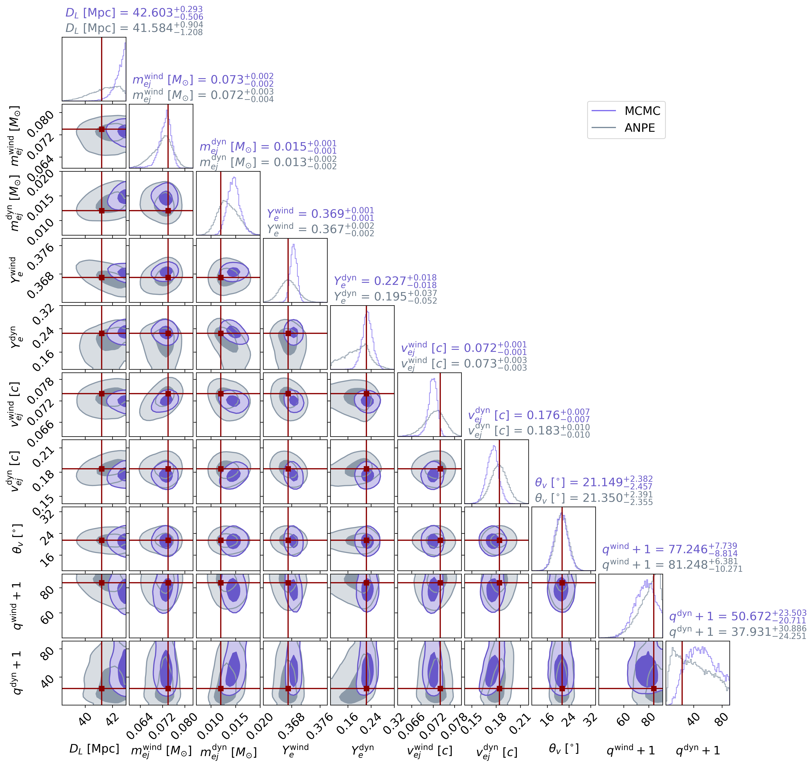
图注：Posterior distributions from a simulation recovery using an MCMC sampler (purple) and the ANPE (grey). The true parameter values are shown in red. Titles report the median and the 16th and 84th percentiles of each posterior. Contours indicate the 1$\sigma$ and 2$\sigma$ credible regions.
对应解读：“建议重点查看的图表”第4项与“关键图表逐图导读”图3：模拟注入的 corner plot，比较注入真值、SBI/ANPE 后验和 MCMC 后验。
入选理由：这是检验本文核心主张的关键图：同一模拟注入数据下直接比较 MCMC 与 ANPE/SBI 的参数后验，并标出真实注入值，可判断 SBI 是否覆盖真值、MCMC 是否偏移或过窄。相比单纯光变拟合图，它更直接支撑“似然错设导致参数偏差”的结论。
来源与置信度：\(arxiv_source\)；high；\(arxiv_source\) / main.tex:figure[8]
Fig10
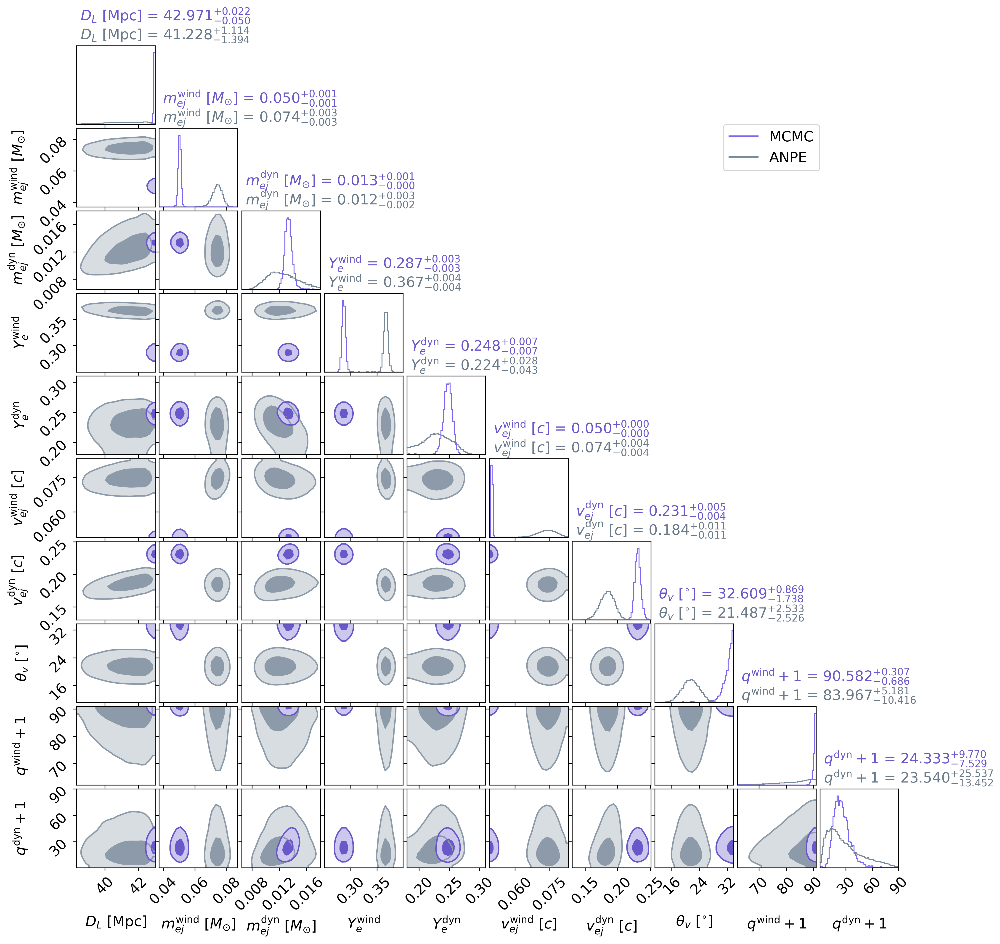
图注：Posterior distributions from AT2017gfo using an MCMC sampler (purple) and the ANPE (grey). Titles report the median and the 16th and 84th percentiles of each posterior. Contours indicate the 1$\sigma$ and 2$\sigma$ credible regions.
对应解读：“建议重点查看的图表”第6项与“关键图表逐图导读”图5：AT2017gfo 的 SBI 与 MCMC 参数后验比较。
入选理由：该图对应真实事件 AT2017gfo 的核心结果，展示 MCMC 与 ANPE/SBI 在物理参数空间中的后验差异、退化方向和可能的先验边界堆积。它直接支撑日报中“光变拟合相似但参数后验不同”的重点解读。
来源与置信度：\(arxiv_source\)；high；\(arxiv_source\) / main.tex:figure[10]
Fig11
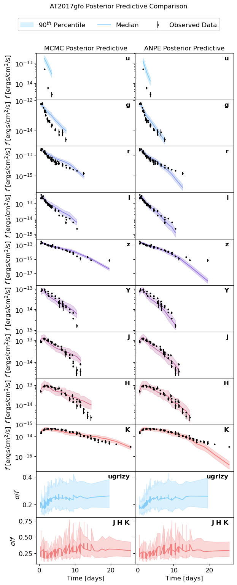
图注：Posterior predictive distributions for AT2017gfo, comparing inference using an MCMC sampler (left) and the ANPE (right). Predicted fluxes are generated from posterior samples, with the median light curve shown as a solid line and the 90th percentile credible interval shown as a shaded band. AT2017gfo is shown in black. The lower panels show the distribution of the flux-to-uncertainty ratio for the reddest bands (\(\textit{JHK})\) and for the remaining optical bands (\(\textit{ugrizy}).\)
对应解读：“建议重点查看的图表”第5项与“关键图表逐图导读”图4：AT2017gfo posterior predictive light curves。
入选理由：该图展示真实 AT2017gfo 数据的后验预测光变，含 MCMC 与 ANPE/SBI 的中位数曲线、90%预测区间以及光学/红外残差分布。它能说明两种方法在观测空间都可拟合数据，同时为解释参数后验差异提供必要对照。
来源与置信度：\(arxiv_source\)；high；\(arxiv_source\) / main.tex:figure[11]
Fig09
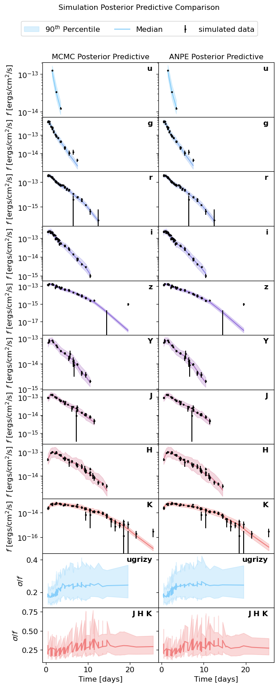
图注：Posterior predictive distributions for a simulated light curve, comparing inference using MCMC (left) and ANPE (right). Predicted fluxes are generated from posterior samples, with the median light curve shown as a solid line and the 90th percentile range shown as a shaded band. The simulated data used for inference are shown in black. The bottom two panels show the distribution of the flux-to-uncertainty ratio for the reddest bands (\(\textit{JHK})\) and for the remaining optical bands (\(\textit{ugrizy}).\)
对应解读：“建议重点查看的图表”第5项与“关键图表逐图导读”图4：模拟数据的 posterior predictive light curves。
入选理由：该图用于模拟注入场景下的后验预测检验，比较 MCMC 与 ANPE/SBI 预测带是否覆盖黑色模拟数据，并区分红外 JHK 与光学 ugrizy 残差。它与 Fig08 形成互补：一个看参数恢复，一个看光变空间的拟合质量。
来源与置信度：\(arxiv_source\)；high；\(arxiv_source\) / main.tex:figure[9]
Fig04
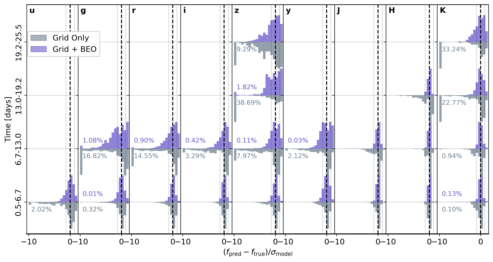
图注：Distribution of the ratio of empirical-to-predicted emulator error, $(f_\mathrm{pred}-f_\mathrm{true})/\sigma_\mathrm{model}$ for the points in Fig.~\(\ref{fig:lvr_8x5}\) where $f_\mathrm{true}$ is the true value, $f_\mathrm{pred}$ is the GP prediction, and $\sigma_\mathrm{model} = \sqrt{\mathrm{Var}(f_\mathrm{pred})}$. Values are binned by wavelength (left to right) and observation time (bottom to top). Grey: grid-only model; purple: grid+BEO model. Percentage of values less than -10 are indicated. Light vertical dashed lines indicate $(f_{\rm{pred}} - f_{\rm{true}})/\sigma_{\rm{model}}= -1, 1$ and the heavy dashed line shows $(f_{\rm{pred}} - f_{\rm{true}})/\sigma_{\rm{model}}= 0$.
对应解读：“建议重点查看的图表”第2项与模型拟合段落：Emulator 验证图，按波长和观测时间检查经验残差相对预测不确定性的分布。
入选理由：该图把 GP emulator 的预测误差标准化后按波长和时间分箱，能直接检查早晚期、不同波段是否存在系统残差以及预测不确定性是否校准。它比单一总体直方图更适合支撑日报中关于波段/时间相关系统误差的讨论。
来源与置信度：\(arxiv_source\)；high；\(arxiv_source\) / main.tex:figure[4]
Fig06
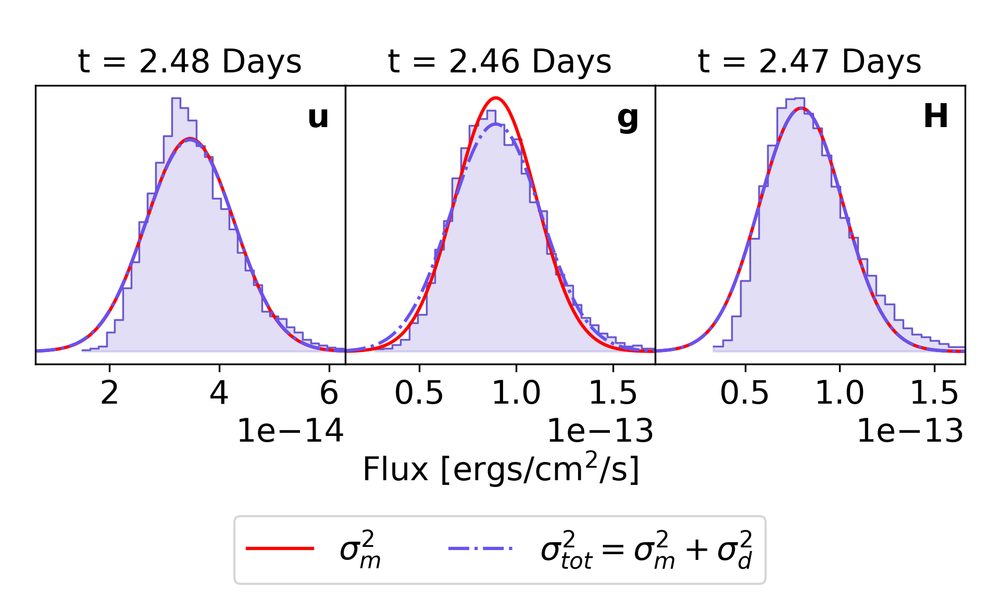
图注：Sampling distribution (blue histogram) around $t_{obs} \simeq 2.5$~d in the \(\textit{u},\) \(\textit{g},\) and \(\textit{H}\) bands. The model uncertainty (red) and the total uncertainty (blue) are shown as Gaussian distributions with mean equal to the empirical mean of the sampling distribution and variance equal to $\sigma^2_{m}$ and $\sigma^2_\text{tot} = \sigma^2_{m} + \sigma^2_{d}$, respectively.
对应解读：“建议重点查看的图表”第3项与模型拟合段落：Emulator predictive distribution 与近似高斯不确定性的比较。
入选理由：该图展示 u、g、H 波段约 2.5 天处的采样分布，并与模型不确定性和总高斯不确定性近似比较，直接关系到 MCMC 显式高斯似然是否能描述 emulator 预测分布。它是解释“非高斯/错设似然使 MCMC 后验失真”的重要诊断图。
来源与置信度：\(arxiv_source\)；high；\(arxiv_source\) / main.tex:figure[6]
强相关工作
这项工作与两条文献线相连。第一条是千新星辐射转移和 AT2017gfo 建模，包括多组分 ejecta、轴对称几何、视角效应和 lanthanide opacity 对光变颜色的影响。建议检索关键词：kilonova radiative transfer POSSIS, AT2017gfo ejecta mass velocity lanthanide, Bulla kilonova viewing angle, Kasen kilonova opacity。它与这些工作的关系是把已有物理模拟转化为更快、更稳健的统计推断工具，而不是提出全新的千新星辐射物理。
第二条是天体物理中的 simulation-based inference，包括神经后验估计、神经似然估计和神经比值估计。SBI 已在宇宙学、强透镜、星系形成和引力波参数估计中用于处理不可写似然或昂贵模拟。本文把这一思想应用到千新星，并把重点放在 emulator uncertainty 和 likelihood misspecification 上。建议检索关键词：simulation-based inference astronomy neural posterior estimation likelihood-free inference, SBI gravitational waves, emulator uncertainty Bayesian inference。
潜在张力来自传统 MCMC/nested sampling 千新星分析与 SBI 分析之间的后验差异。如果两个方法给出相同光变但不同 ejecta 参数，那么过去基于近似似然得到的 AT2017gfo 物理结论需要重新评估其系统误差。读者还应关注相反观点：SBI 的后验是否真的更可靠，取决于 simulator 是否足够真实、训练分布是否覆盖真实数据，以及神经密度估计是否校准；这些都需要独立覆盖率测试和跨模型验证。
相似工作：
- https://arxiv.org/abs/2605.13983
- https://arxiv.org/abs/1901.04545
- https://arxiv.org/abs/1710.05840
基础理论 / 方法工作：
- https://arxiv.org/abs/1710.05463
- https://arxiv.org/abs/1710.05832
- https://arxiv.org/abs/1710.05836
- https://arxiv.org/abs/1706.04698
相反观点 / 张力线索：
- https://arxiv.org/abs/1710.09320
- https://arxiv.org/abs/1805.04081
说明
评分由 LLM 给出初评，再由本地阈值策略过滤；IACT、TeV 伽马射线和高能中微子天文学按重点方向处理。